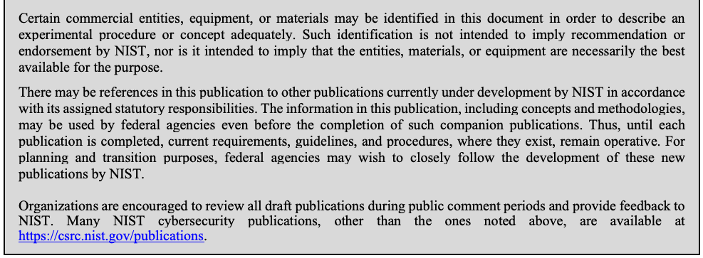
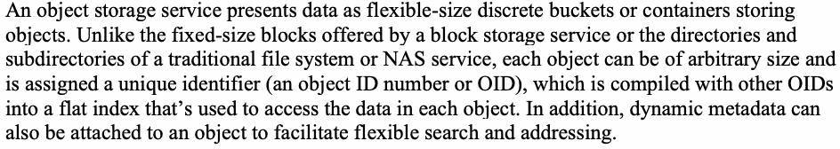
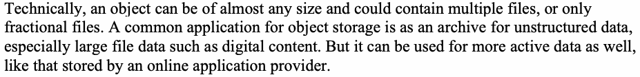
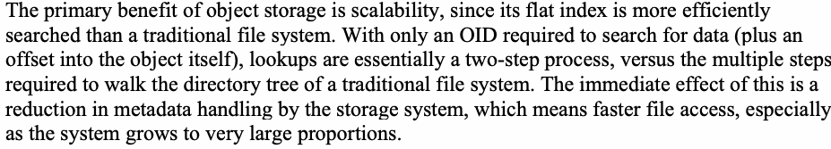
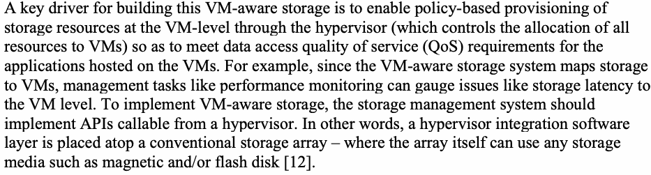
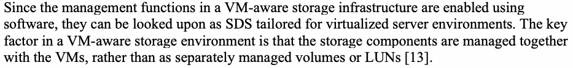

NIST SP 800-209 日本語訳
英語タイトル : Security Guidelines for Storage Infrastructure日本語タイトル : ストレージインフラストラクチャのセキュリティガイドライン
公開日 : 2020-10-26
原文URL : https://csrc.nist.gov/pubs/sp/800/209/final
翻訳編集 : 自動生成
[要約] SP 800-209 は、ストレージ技術の進化に伴うセキュリティ上の脅威とリスクを概説し、ストレージインフラストラクチャのセキュリティ推奨事項を示します。ブロック、ファイル、オブジェクトなどのストレージサービスや仮想化、クラウドベースのストレージを説明し、脅威とアタックサーフェスを分析したうえで導入のガイドラインを述べます。推奨事項は物理的セキュリティや認証と認可などIT基盤に共通する領域に加え、データ保護、分離、復元の保証、暗号化などストレージに固有の領域に及びます。
有志による非公式の日本語訳です。NIST および米国商務省が作成・承認・推奨したものではありません。要件の確認にはNIST の正式版 PDFを参照してください。
NIST Special Publication 800-209
NIST特別刊行物800-209
Security Guidelines for Storage
ストレージのセキュリティガイドライン
Infrastructure
インフラストラクチャ
Ramaswamy Chandramouli
原文のみ
Doron Pinhas
原文のみ
This publication is available free of charge from: https://doi.org/10.6028/NIST.SP.800-209
本刊行物は次のURLから無料で入手できる：https://doi.org/10.6028/NIST.SP.800-209
NIST Special Publication 800-209
NIST特別刊行物800-209
Security Guidelines for Storage
ストレージのセキュリティガイドライン
Infrastructure
インフラストラクチャ
Ramaswamy Chandramouli Computer Security Division Information Technology Laboratory
Ramaswamy Chandramouli／コンピュータセキュリティ部門／情報技術研究所
Doron Pinhas Continuity Software New York, NY
Doron Pinhas／Continuity Software／ニューヨーク州ニューヨーク市
This publication is available free of charge from: https://doi.org/10.6028/NIST.SP.800-209
本刊行物は次のURLから無料で入手できる：https://doi.org/10.6028/NIST.SP.800-209
October 2020
2020年10月
U.S. Department of Commerce Wilbur L. Ross, Jr., Secretary
米国商務省 Wilbur L. Ross, Jr. 長官
National Institute of Standards and Technology
米国国立標準技術研究所（NIST）
Walter Copan, NIST Director and Under Secretary of Commerce for Standards and Technology
Walter Copan、NIST所長兼商務省標準技術担当次官
Authority
権限
This publication has been developed by NIST in accordance with its statutory responsibilities under the Federal Information Security Modernization Act (FISMA) of 2014, 44 U.S.C. § 3551 et seq., Public Law (P.L.) 113-283. NIST is responsible for developing information security standards and guidelines, including minimum requirements for federal information systems, but such standards and guidelines shall not apply to national security systems without the express approval of appropriate federal officials exercising policy authority over such systems. This guideline is consistent with the requirements of the Office of Management and Budget (OMB) Circular A-130.
本刊行物は、2014年連邦情報セキュリティ近代化法（FISMA）、合衆国法典第44編第3551条以降、ならびに公法（P.L.）113-283に基づく法定責務に従い、NISTが作成した。NISTは、連邦情報システムの最低要件を含む情報セキュリティ標準およびガイドラインの策定を担う。ただし、適切な連邦当局者が政策権限を行使して明示的に承認しない限り、これらの標準およびガイドラインを国家安全保障システムに適用してはならない。本ガイドラインは、行政管理予算局（OMB）通達A-130の要件に整合している。
Nothing in this publication should be taken to contradict the standards and guidelines made mandatory and binding on federal agencies by the Secretary of Commerce under statutory authority. Nor should these guidelines be interpreted as altering or superseding the existing authorities of the Secretary of Commerce, Director of the OMB, or any other federal official. This publication may be used by nongovernmental organizations on a voluntary basis and is not subject to copyright in the United States. Attribution would, however, be appreciated by NIST.
本刊行物のいかなる記述も、法定権限に基づき商務長官が連邦機関に義務付け、拘束力を持たせた標準およびガイドラインと矛盾するものと解釈してはならない。また、本ガイドラインは、商務長官、OMB長官、その他の連邦当局者が持つ既存の権限を変更または置き換えるものと解釈してはならない。本刊行物は非政府組織が任意に使用でき、米国内では著作権の対象ではない。ただし、NISTへの出典表示を歓迎する。
National Institute of Standards and Technology Special Publication 800-209 Natl. Inst. Stand. Technol. Spec. Publ. 800-209, 79 pages (October 2020) CODEN: NSPUE2
米国国立標準技術研究所 Special Publication 800-209 Natl. Inst. Stand. Technol. Spec. Publ. 800-209, 79ページ（2020年10月） CODEN: NSPUE2
This publication is available free of charge from: https://doi.org/10.6028/NIST.SP.800-209
本刊行物は次のURLから無料で入手できる：https://doi.org/10.6028/NIST.SP.800-209
Certain commercial entities, equipment, or materials may be identified in this document in order to describe an experimental procedure or concept adequately. Such identification is not intended to imply recommendation or endorsement by NIST, nor is it intended to imply that the entities, materials, or equipment are necessarily the best available for the purpose.
原本PDFの抜粋画像

この文書では、実験手順または概念を適切に説明するため、特定の商業組織、機器、または材料を示す場合がある。こうした記載は、NISTによる推奨または支持を意味するものではなく、当該組織、材料、または機器がその目的に最適であるとは限らないことを意味するものでもない。
There may be references in this publication to other publications currently under development by NIST in accordance with its assigned statutory responsibilities. The information in this publication, including concepts and methodologies, may be used by federal agencies even before the completion of such companion publications. Thus, until each publication is completed, current requirements, guidelines, and procedures, where they exist, remain operative. For planning and transition purposes, federal agencies may wish to closely follow the development of these new publications by NIST.
本刊行物には、NISTが割り当てられた法定責務に従って現在策定中の他の刊行物への参照が含まれる場合がある。本刊行物の情報（概念および方法論を含む）は、関連刊行物の完成前であっても連邦機関が利用してもよい。したがって、各刊行物が完成するまでは、既存の要件、ガイドライン、および手順がある場合には、それらが引き続き有効である。計画および移行のため、連邦機関はNISTによるこれらの新たな刊行物の策定状況を注意深く追跡することを検討してもよい。
Organizations are encouraged to review all draft publications during public comment periods and provide feedback to NIST. Many NIST cybersecurity publications, other than the ones noted above, are available at https://csrc.nist.gov/publications.
組織には、公開コメント期間中にすべての草案を確認し、NISTにフィードバックを提供することが推奨される。上記以外の多くのNISTサイバーセキュリティ刊行物は、https://csrc.nist.gov/publications から入手できる。
Comments on this publication may be submitted to:
本刊行物に関するコメントは、次の宛先にお送りされたい。
National Institute of Standards and Technology Attn: Computer Security Division, Information Technology Laboratory 100 Bureau Drive (Mail Stop 8930) Gaithersburg, MD 20899-8930 Email: sp800-209-comments@nist.gov
National Institute of Standards and Technology Attn: Computer Security Division, Information Technology Laboratory 100 Bureau Drive (Mail Stop 8930) Gaithersburg, MD 20899-8930 Email: sp800-209-comments@nist.gov
All comments are subject to release under the Freedom of Information Act (FOIA).
すべてのコメントは、情報公開法（FOIA）に基づき公開される場合がある。
Reports on Computer Systems Technology
コンピュータシステム技術に関する報告書
The Information Technology Laboratory (ITL) at the National Institute of Standards and Technology (NIST) promotes the U.S. economy and public welfare by providing technical leadership for the Nation’s measurement and standards infrastructure. ITL develops tests, test methods, reference data, proof of concept implementations, and technical analyses to advance the development and productive use of information technology. ITL’s responsibilities include the development of management, administrative, technical, and physical standards and guidelines for the cost-effective security and privacy of other than national security-related information in Federal information systems. The Special Publication 800-series reports on ITL’s research, guidelines, and outreach efforts in information system security, and its collaborative activities with industry, government, and academic organizations.
米国国立標準技術研究所（NIST）の情報技術研究所（ITL）は、米国の計測・標準基盤に対する技術的リーダーシップを発揮し、米国経済と公共の福祉を促進している。ITLは、情報技術の発展と有効活用を推進するため、試験、試験方法、参照データ、概念実証の実装、および技術分析を開発する。ITLの責務には、連邦情報システムにおける国家安全保障関連以外の情報の費用対効果に優れたセキュリティとプライバシーを実現するための、管理、運用、技術、物理面の標準およびガイドラインの策定が含まれる。特別刊行物800シリーズは、情報システムセキュリティに関するITLの研究、ガイドライン、普及活動、および産業界、政府、学術機関との協力活動を報告する。
Abstract
概要
Storage technology, just like its computing and networking counterparts, has evolved from traditional storage service types, such as block, file, and object. Specifically, the evolution has taken two directions: one along the path of increasing storage media capacity (e.g., tape, Hard Disk Drives, solid-state drives (SSD)) and the other along the architectural front, starting from direct-attached storage (DAS) to the placement of storage resources in networks accessed through various interfaces and protocols to cloud-based storage resource access, which provides a software-based abstraction over all forms of background storage technologies. Accompanying the architectural evolution is the increase in management complexity, which subsequently increases the probability of configuration errors and associated security threats. This document provides an overview of the evolution of the storage technology landscape, current security threats, and the resultant risks. The main focus of this document is to provide a comprehensive set of security recommendations that will address the threats. The recommendations span not only security management areas that are common to an information technology (IT) infrastructure (e.g., physical security, authentication and authorization, change management, configuration control, and incident response and recovery) but also those specific to storage infrastructure (e.g., data protection, isolation, restoration assurance, and encryption).
ストレージ技術は、コンピューティング技術やネットワーク技術と同様に、ブロック、ファイル、オブジェクトといった従来のストレージサービスの種類から進化してきた。具体的には、進化は二つの方向に進んだ。一つはテープ、ハードディスクドライブ、ソリッドステートドライブ（SSD）などのストレージ媒体の容量増大であり、もう一つはアーキテクチャの進化である。後者は、直接接続ストレージ（DAS）から、さまざまなインターフェースやプロトコルを介してネットワーク上のストレージ資源にアクセスする形態へ、さらに、あらゆる種類のバックエンドストレージ技術をソフトウェアベースで抽象化するクラウドベースのストレージ資源アクセスへと進んだ。アーキテクチャの進化に伴い管理の複雑さが増し、設定ミスとそれに関連するセキュリティ上の脅威が発生する可能性も高まっている。本書では、ストレージ技術環境の進化、現在のセキュリティ上の脅威、およびそこから生じるリスクを概説する。主眼は、脅威に対処するための包括的なセキュリティ推奨事項を提示することにある。推奨事項は、物理的セキュリティ、認証と認可、変更管理、構成管理、インシデント対応と復旧など、IT基盤に共通するセキュリティ管理領域に加え、データ保護、分離、復元の保証、暗号化など、ストレージ基盤に固有の領域にも及ぶ。
Keywords
キーワード
storage area network; network attached storage; storage array; file storage service; block storage service; object storage service; storage virtualization; software-defined storage; hyper-converged storage; data protection; cloud storage; backup; replication.
ストレージエリアネットワーク；ネットワーク接続ストレージ；ストレージアレイ；ファイルストレージサービス；ブロックストレージサービス；オブジェクトストレージサービス；ストレージ仮想化；ソフトウェア定義ストレージ；ハイパーコンバージドストレージ；データ保護；クラウドストレージ；バックアップ；レプリケーション。
Acknowledgements
謝辞
The authors like to express their sincere thanks to NetApp, Dell EMC, Storage Networking Industry Association (SNIA), IEEE, Infinidat, and the Center for Cybersecurity Standards at NSA for their extensive, insightful feedback. Our special thanks to Yaniv Valik of Continuity Software for his valuable input during the writing of this document.
著者らは、広範かつ洞察に富むフィードバックを寄せてくれたNetApp、Dell EMC、Storage Networking Industry Association（SNIA）、IEEE、Infinidat、およびNSAのCenter for Cybersecurity Standardsに心から感謝する。また、本文書の執筆中に貴重な意見を提供してくれたContinuity SoftwareのYaniv Valik氏に特に感謝する。
Patent Disclosure Notice
特許開示に関する通知
NOTICE: The Information Technology Laboratory (ITL) has requested that holders of patent claims whose use may be required for compliance with the guidance or requirements of this publication disclose such patent claims to ITL. However, holders of patents are not obligated to respond to ITL calls for patents and ITL has not undertaken a patent search in order to identify which, if any, patents may apply to this publication.
通知：情報技術研究所（ITL）は、本刊行物の指針または要件への準拠に使用が必要となる可能性のある特許請求項を保有する者に対し、その特許請求項をITLに開示するよう求めている。ただし、特許保有者はITLの特許開示要請に応じる義務を負わず、ITLは、本刊行物に適用される可能性のある特許が存在するかどうかを特定するための特許調査を実施していない。
As of the date of publication and following call(s) for the identification of patent claims whose use may be required for compliance with the guidance or requirements of this publication, no such patent claims have been identified to ITL.
刊行日時点で、本刊行物の指針または要件への準拠に使用が必要となる可能性のある特許請求項の特定を求めた結果、ITLに対してそのような特許請求項は報告されていない。
No representation is made or implied by ITL that licenses are not required to avoid patent infringement in the use of this publication.
本刊行物の使用に際して特許侵害を避けるためのライセンスが不要であると、ITLが表明または示唆するものではない。
Executive Summary
エグゼクティブサマリー
Storage, computing, and networking form the three fundamental building blocks of an information technology infrastructure. Just like computing and network technologies, storage technology has also evolved over the years. Higher capacity storage media and storage system architecture are the two fronts on which storage technology has evolved. The developments on the second front have enabled storage services to support many new and evolving computing use cases but have also introduced storage management complexity and many security challenges.
ストレージ、コンピューティング、ネットワークは、情報技術基盤を構成する三つの基本要素である。コンピューティング技術やネットワーク技術と同じく、ストレージ技術も長年にわたり進化してきた。ストレージ技術は、容量の大きなストレージ媒体とストレージシステムのアーキテクチャという二つの側面で発展してきた。後者の発展により、ストレージサービスは新たに登場し進化する多様なコンピューティング用途を支えられるようになった一方、ストレージ管理の複雑さと多くのセキュリティ上の課題も生じている。
Just like computing and networking, the current landscape of storage infrastructure consists of a mixture of legacy and advanced systems. With this in mind, this document provides an overview of the storage technology landscape, including traditional storage services (e.g., block, file, and object storage), storage virtualization, storage architectures designed for virtualized server environments, and storage resources hosted in the cloud. Descriptions of various threats to the storage resources are also included, as well as an analysis of the risks to storage infrastructure and the impacts of these threats.
コンピューティングやネットワークと同様に、現在のストレージ基盤には従来型システムと先進システムが混在している。本書ではこの状況を踏まえ、ブロック、ファイル、オブジェクトなどの従来型ストレージサービス、ストレージ仮想化、仮想化サーバー環境向けに設計されたストレージアーキテクチャ、クラウド上でホストされるストレージ資源など、ストレージ技術の全体像を概説する。また、ストレージ資源に対するさまざまな脅威を説明し、ストレージ基盤に対するリスクと、それらの脅威がもたらす影響を分析する。
The primary purpose of this document is to provide a comprehensive set of security recommendations for the current landscape of the storage infrastructure. The security focus areas span those that are common to the entire IT infrastructure, such as physical security, authentication and authorization, change management, configuration control, incident response, and recovery. Within these areas, security controls that are specific to storage technologies, such as network-attached storage (NAS) and storage area networks (SAN), are also covered. In addition, security recommendations specific to storage technologies are provided for the following areas of operation in the storage infrastructure:
本書の主な目的は、現在のストレージ基盤を取り巻く状況に対して、包括的なセキュリティ推奨事項を提示することである。セキュリティ上の重点領域には、物理的セキュリティ、認証と認可、変更管理、構成管理、インシデント対応、復旧など、IT基盤全体に共通するものが含まれる。これらの領域では、ネットワーク接続ストレージ（NAS）やストレージエリアネットワーク（SAN）などのストレージ技術に固有のセキュリティ管理策も取り上げる。さらに、ストレージ基盤の運用における次の領域について、ストレージ技術に特化したセキュリティ推奨事項を示す。
•Data protection
•データ保護
•Isolation
•分離
•Restoration assurance
•復元の保証
•Encryption
•暗号化
Table of Contents
目次
Executive Summary ...................................................................................................... v
エグゼクティブサマリー ...................................................................................................... v
1 Introduction — 1
1 はじめに — 1
1.1 Scope — 2
1.1 適用範囲 — 2
1.2 Target Audience — 3
1.2 対象読者 — 3
1.3 Relationship to Other NIST Guidance Documents — 3
1.3 他のNISTガイダンス文書との関係 — 3
1.4 Organization of this Document — 3
1.4 本書の構成 — 3
2 Data Storage Technologies: Background — 5
2 データストレージ技術：背景 — 5
2.1 Block Storage Service — 5
2.1 ブロックストレージサービス — 5
2.1.1 Storage Area Network (SAN) — 6
2.1.1 ストレージエリアネットワーク（SAN） — 6
2.1.2 Other forms of Networked Block Storage — 7
2.1.2 その他のネットワーク型ブロックストレージ — 7
2.2 File Storage Service — 7
2.2 ファイルストレージサービス — 7
2.3 Object Storage Service — 8
2.3 オブジェクトストレージサービス — 8
2.4 Content-Addressable Storage (CAS) Service — 8
2.4 コンテンツアドレス可能ストレージ（CAS）サービス — 8
2.5 Higher-Level Data Access Service — 8
2.5 高水準データアクセスサービス — 8
2.6 Software-Defined Storage — 9
2.6 ソフトウェア定義ストレージ — 9
2.7 Storage Virtualization — 9
2.7 ストレージ仮想化 — 9
2.8 Storage for Virtualized Servers and Containers — 10
2.8 仮想化サーバーおよびコンテナ向けストレージ — 10
2.9 Converged and Hyper-Converged Storage (Server-based SAN) — 11
2.9 コンバージドおよびハイパーコンバージドストレージ（サーバーベースSAN） — 11
2.10 Cloud-Based Storage System — 12
2.10 クラウドベースのストレージシステム — 12
2.11 Storage and Data Management — 13
2.11 ストレージおよびデータ管理 — 13
2.11.1 Storage Resource Configuration and Resource Management — 13
2.11.1 ストレージ資源の構成と資源管理 — 13
2.11.2 Data Classification or Categorization — 13
2.11.2 データの分類またはカテゴリ化 — 13
2.11.3 Data Sanitization — 14
2.11.3 データのサニタイズ — 14
2.11.4 Data Retention — 14
2.11.4 データ保持 — 14
2.11.5 Data Protection — 14
2.11.5 データ保護 — 14
2.11.6 Data Reduction — 16
2.11.6 データ削減 — 16
3 Threats, Risks, and Attack Surfaces — 17
3 脅威、リスク、攻撃対象領域 — 17
3.1 Threats — 17
3.1 脅威 — 17
3.1.1 Credential Theft or Compromise — 17
3.1.1 認証情報の窃取または侵害 — 17
3.1.2 Cracking Encryption — 17
3.1.2 暗号の解読 — 17
3.1.3 Infection of Malware and Ransomware — 17
3.1.3 マルウェアおよびランサムウェアへの感染 — 17
3.1.4 Backdoors and Unpatched Vulnerabilities — 18
3.1.4 バックドアおよび未修正の脆弱性 — 18
3.1.5 Privilege Escalation — 18
3.1.5 特権昇格 — 18
3.1.6 Human Error and Deliberate Misconfiguration — 19
3.1.6 ヒューマンエラーおよび意図的な設定ミス — 19
3.1.7 Physical Theft of Storage Media — 19
3.1.7 ストレージ媒体の物理的な盗難 — 19
3.1.8 Network Eavesdropping — 19
3.1.8 ネットワーク盗聴 — 19
3.1.9 Insecure Images, Software and Firmware — 20
3.1.9 安全でないイメージ、ソフトウェア、およびファームウェア — 20
3.2 Risks to Storage Infrastructure — 20
3.2 ストレージ基盤に対するリスク — 20
3.2.1 Data Breach and Data Exposure — 20
3.2.1 データ侵害およびデータ漏えい — 20
3.2.2 Unauthorized Data Alteration and Addition — 21
3.2.2 不正なデータの改変および追加 — 21
3.2.3 Data Corruption — 21
3.2.3 データ破損 — 21
3.2.4 Compromising Backups — 21
3.2.4 バックアップの侵害 — 21
3.2.5 Malicious Data Obfuscation and Encryption — 22
3.2.5 悪意のあるデータの難読化および暗号化 — 22
3.2.6 Data Unavailability and Denial of Service — 22
3.2.6 データの利用不能およびサービス拒否 — 22
3.2.7 Tampering of Storage-Related Log and Audit Data — 22
3.2.7 ストレージ関連のログおよび監査データの改ざん — 22
3.2.8 Compromising Storage OS or Binaries, Firmware and Images — 23
3.2.8 ストレージOS、バイナリ、ファームウェア、およびイメージの侵害 — 23
3.2.9 Mapping of Threats to Risks — 23
3.2.9 脅威とリスクの対応付け — 23
3.3 Attack Surfaces — 24
3.3 攻撃対象領域 — 24
3.3.1 Physical Access — 24
3.3.1 物理的アクセス — 24
3.3.2 Access to Storage Operating System — 25
3.3.2 ストレージオペレーティングシステムへのアクセス — 25
3.3.3 Access to Management Hosts — 25
3.3.3 管理ホストへのアクセス — 25
3.3.4 Management APIs, Management Software, and In-Band Management — 26
3.3.4 管理API、管理ソフトウェア、および帯域内管理 — 26
3.3.5 Storage Clients — 26
3.3.5 ストレージクライアント — 26
3.3.6 Storage Network (Tap Into, Alter to Gain Access) — 26
3.3.6 ストレージネットワーク（盗聴・改変によるアクセス取得） — 26
3.3.7 Compute Environment of Key Individuals — 26
3.3.7 重要人物のコンピューティング環境 — 26
3.3.8 Electrical Network and other Utilities — 27
3.3.8 電力網およびその他のユーティリティ — 27
4 Security Guidelines for Storage Deployments — 28
4 ストレージ導入環境のセキュリティガイドライン — 28
4.1 Physical Storage Security — 28
4.1 ストレージの物理的セキュリティ — 28
4.2 Data Protection — 29
4.2 データ保護 — 29
4.2.1 Data Backup and Recovery, and Archiving — 31
4.2.1 データのバックアップ、復旧、およびアーカイブ — 31
4.2.2 Replication and Mirroring — 32
4.2.2 レプリケーションおよびミラーリング — 32
4.2.3 Point-in-Time Copies — 32
4.2.3 特定時点のコピー — 32
4.2.4 Continuous Data Protection — 33
4.2.4 継続的データ保護 — 33
4.3 Authentication and Data Access Control — 33
4.3 認証およびデータアクセス制御 — 33
4.3.1 Authentication Recommendations — 34
4.3.1 認証に関する推奨事項 — 34
4.3.2 Password Recommendations — 34
4.3.2 パスワードに関する推奨事項 — 34
4.3.3 Account Management Recommendations — 35
4.3.3 アカウント管理に関する推奨事項 — 35
4.3.4 Privilege and Session Management Recommendations — 36
4.3.4 特権およびセッション管理に関する推奨事項 — 36
4.3.5 SAN-Specific Recommendations — 37
4.3.5 SAN固有の推奨事項 — 37
4.3.6 File and Object Access Recommendations — 38
4.3.6 ファイルおよびオブジェクトのアクセスに関する推奨事項 — 38
4.4 Audit Logging — 39
4.4 監査ログ — 39
4.5 Preparation for Data Incident Response and Cyber Recovery — 41
4.5 データインシデント対応およびサイバー復旧への備え — 41
4.6 Guidelines for Network Configuration — 42
4.6 ネットワーク構成に関するガイドライン — 42
4.6.1 FC SAN and NVMEoF — 42
4.6.1 FC SANおよびNVMEoF — 42
4.6.2 IP Storage Networking — 44
4.6.2 IPストレージネットワーキング — 44
4.6.3 Protocols — 45
4.6.3 プロトコル — 45
4.7 Isolation — 47
4.7 分離 — 47
4.8 Restoration Assurance — 50
4.8 復元の保証 — 50
4.9 Encryption — 52
4.9 暗号化 — 52
4.10 Administrative Access — 54
4.10 管理者アクセス — 54
4.11 Configuration Management — 58
4.11 構成管理 — 58
4.12 Training — 60
4.12 トレーニング — 60
5 Summary and Conclusions — 61
5 要約および結論 — 61
References — 62
参考文献 — 62
Appendix A: Acronyms — 66
付録A：略語 — 66
1 Introduction
1 はじめに
Storage, computing, and networking form the three fundamental building blocks of any information technology (IT) infrastructure. Storage infrastructure has evolved over the years to become feature-rich in areas such as performance and efficiency due to developments on two fronts. One is the area of storage media, which features solid-state drives (SSD) with high capacity and storage efficiency features (e.g., deduplication, compression, etc.) compared to Hard Disk Drives (HDD). The second is the area of storage system architecture that uses concepts such as storage virtualization. However, development on this second front has also introduced a great deal of management complexity, including the task of providing security assurance.
ストレージ、コンピューティング、ネットワークは、あらゆる情報技術（IT）基盤を構成する三つの基本要素である。ストレージ基盤は長年にわたって進化し、二つの側面で性能や効率などの機能が充実してきた。一つはストレージ媒体であり、ハードディスクドライブ（HDD）に比べて大容量で、重複排除や圧縮などのストレージ効率化機能を備えたソリッドステートドライブ（SSD）がその例である。もう一つは、ストレージ仮想化などの概念を取り入れたストレージシステムのアーキテクチャである。ただし、後者の発展によって管理が大幅に複雑化し、セキュリティを確保するという課題も生じている。
Briefly tracing the history of storage system architecture shows that the earliest form of digital storage infrastructure is direct-attached storage (DAS), where the storage element or device (e.g., tape, hard disk) is directly attached to the host server without any intervening network. The next evolution of storage infrastructure is one where the storage resources are intelligently pooled, located across the network, accessed through networking protocols, and accessible by multiple hosts or servers. This type of storage infrastructure is the only way that the data access needs of distributed systems can be supported, since application components that need to share data are in different nodes of a network. In this stage of evolution, the storage infrastructure has taken on two forms, depending on the type of networking protocol. In one form, the storage resource is simply a node in a network using common networking technology (e.g., local area network – LAN – or wide area network – WAN), while in the other, there is a dedicated network for communicating with all storage resources. An example of the former is network-attached storage (NAS), which provides file-level access to heterogeneous clients across a network using higher level protocols, such as network file system (NFS), or server message block / common internet file system (SMB/CIFS). The latter is exemplified by the storage area network (SAN), an implementation of which uses a specialized, high-speed network (e.g., Fibre-Channel) that provides block-level access to storage. Another implementation of a SAN uses the Internet Small Computer Systems Interface (iSCSI) protocol over a possibly shared LAN/WAN infrastructure.
ストレージシステムアーキテクチャの歴史を簡単に振り返ると、デジタルストレージ基盤の最も初期の形態は直接接続ストレージ（DAS）である。DASでは、テープやハードディスクなどのストレージ要素または装置が、間にネットワークを介さずにホストサーバーへ直接接続される。次の進化では、ストレージ資源をインテリジェントにプール化してネットワーク上に配置し、ネットワークプロトコルを介して複数のホストやサーバーからアクセスできるようにした。この形態は、データを共有する必要があるアプリケーション構成要素がネットワーク上の異なるノードにある分散システムのデータアクセス要件を満たす唯一の方法である。この段階のストレージ基盤は、ネットワークプロトコルの種類に応じて二つの形態をとる。一方は、ローカルエリアネットワーク（LAN）やワイドエリアネットワーク（WAN）などの一般的なネットワーク技術を使うネットワーク上のノードとしてストレージ資源を提供する形態であり、もう一方は、すべてのストレージ資源との通信に専用ネットワークを使用する形態である。前者の例であるネットワーク接続ストレージ（NAS）は、ネットワークファイルシステム（NFS）やサーバーメッセージブロック／共通インターネットファイルシステム（SMB/CIFS）などの高水準プロトコルを使用して、異種クライアントにファイルレベルのアクセスを提供する。後者の例であるストレージエリアネットワーク（SAN）は、ファイバーチャネルなどの専用高速ネットワークを使ってストレージへのブロックレベルアクセスを提供する。SANの別の実装では、共有されている可能性のあるLAN/WAN基盤上でインターネット小型コンピュータシステムインターフェース（iSCSI）プロトコルを使用する。
A variation of the traditional enterprise storage infrastructure is the emergence of converged and hyper-converged infrastructure (HCI). A converged system involves a preconfigured package of software and hardware in a single hardware chassis for simplified management. However, with a converged infrastructure, the compute, storage, and networking components are discrete and can be separated. Similar to a converged system, an HCI combines storage, computing, and networking into a single hardware unit or chassis and has built in a layer of abstraction for managing all three components. Unlike a converged system, HCI does not require discrete storage. In fact, it includes a common software console or management tool for managing all three components. It also includes a hypervisor for virtualized computing, software-defined storage, and virtualized networking bundled together to run on standard, off-the-shelf hardware. The integrated storage, compute, and networking components are designed to be managed as a single system across all instances of a hyperconverged infrastructure. Furthermore, each hardware unit can be configured to be a node of a cluster to create pools of shared storage resources, thus providing the advantage of a centralized enterprise storage infrastructure.
従来型のエンタープライズストレージ基盤を発展させた形態として、コンバージドインフラストラクチャおよびハイパーコンバージドインフラストラクチャ（HCI）が登場した。コンバージドシステムは、管理を簡素化するため、ソフトウェアとハードウェアを単一のハードウェア筐体にまとめた事前構成済みのパッケージである。ただし、コンバージドインフラストラクチャでは、コンピューティング、ストレージ、ネットワークの各コンポーネントは個別であり、分離できる。コンバージドシステムと同様に、HCIはストレージ、コンピューティング、ネットワークを単一のハードウェアユニットまたは筐体に統合し、これら三つのコンポーネントを管理するための抽象化レイヤーを組み込む。コンバージドシステムとは異なり、HCIでは個別のストレージを必要としない。実際には、三つすべてのコンポーネントを管理する共通のソフトウェアコンソールまたは管理ツールを備える。また、仮想化コンピューティング用のハイパーバイザー、ソフトウェア定義ストレージ、仮想化ネットワークを一体化し、市販の標準ハードウェア上で実行する。統合されたストレージ、コンピューティング、ネットワークの各コンポーネントは、ハイパーコンバージド基盤のすべてのインスタンスにわたり、単一システムとして管理できるよう設計されている。さらに、各ハードウェアユニットをクラスターのノードとして構成し、共有ストレージ資源のプールを作成できるため、集中型エンタープライズストレージ基盤の利点を得られる。
The next wave of storage evolution involves the introduction of cloud storage, which offers a highly scalable and durable set of storage services that are completely software-defined. Cloud storage services often include:
ストレージの進化における次の波は、ソフトウェアによって完全に定義され、高い拡張性と耐久性を備えたストレージサービスを提供するクラウドストレージの登場である。クラウドストレージサービスには、次のものが含まれることが多い。
•Block storage services, which expose software-defined block devices that can be presented to virtual hosts running in the cloud.
•クラウドで稼働する仮想ホストに提示できる、ソフトウェア定義のブロックデバイスを公開するブロックストレージサービス。
•Object storage services, which can be mapped to hosts, applications, or even other cloud services, and allow addressing discrete, unstructured data elements by ID or metadata.
•ホスト、アプリケーション、さらには他のクラウドサービスに対応付けることができ、IDまたはメタデータによって個々の非構造化データ要素をアドレス指定できるオブジェクトストレージサービス。
•Scalable shared filesystems, which can allow a scalable set of hosts to access the same file system at a high speed.
•拡張性のある複数のホストが同一のファイルシステムに高速でアクセスできる、拡張性のある共有ファイルシステム。
•A variety of replication, caching, archiving, mirroring, and point-in-time copy services to all of the above.
•上記のすべてに対して提供される、レプリケーション、キャッシュ、アーカイブ、ミラーリング、特定時点コピーなどの各種サービス。
Additional cloud services—such as managed database services, data lakes, memory caches, and messages queues—are also offered, all of which can store stateful and transient data. However, experts are divided over whether to classify them as storage services in and of themselves.
マネージドデータベースサービス、データレイク、メモリーキャッシュ、メッセージキューなどの追加のクラウドサービスも提供されており、いずれも状態を保持するデータと一時データを保存できる。ただし、これら自体をストレージサービスに分類すべきかどうかについて、専門家の見解は分かれている。
Another type of storage infrastructure is the one that contains interfaces to support the data storage needs of emerging stateful applications that are designed using microservices-based architecture and deployed using containers organized into clusters with container orchestration platforms. These platforms have a standard plug-in mechanism by way of a container storage interface (CSI) that connects the clusters configured by them to different types of persistent storage implementations.
もう一つのストレージ基盤の形態は、マイクロサービスベースのアーキテクチャで設計され、コンテナオーケストレーションプラットフォームでクラスターとして構成されたコンテナ上に展開される、状態を保持する新しいアプリケーションのデータ保存ニーズに対応するインターフェースを備える。これらのプラットフォームは、コンテナストレージインターフェース（CSI）という標準プラグイン機構を通じて、プラットフォームが構成するクラスターをさまざまな種類の永続ストレージ実装に接続する。
1.1 Scope
1.1 適用範囲
This document provides security recommendations for the following storage technologies:
本書では、次のストレージ技術に関するセキュリティ推奨事項を示す。
•Traditional enterprise storage technologies classified by storage service interface type (e.g., block, file, and object).
•ストレージサービスのインターフェースの種類（ブロック、ファイル、オブジェクトなど）で分類される従来型のエンタープライズストレージ技術。
•Network-based storage (e.g., NFS, SAN).
•ネットワークベースのストレージ（NFS、SANなど）。
•Storage systems that have a layer of software abstraction (e.g., software-defined storage and storage virtualization).
•ソフトウェア抽象化レイヤーを持つストレージシステム（ソフトウェア定義ストレージやストレージ仮想化など）。
•Storage systems designed exclusively for virtualized server environments (e.g., storage for Virtual Machines (VMs) and containers, converged and hyperconverged storage systems).
•仮想化サーバー環境専用に設計されたストレージシステム（仮想マシン（VM）やコンテナ向けストレージ、コンバージドおよびハイパーコンバージドストレージシステムなど）。
•Storage systems designed with Application Programming Interfaces (APIs) for cloud access.
•クラウドアクセス用のアプリケーションプログラミングインターフェース（API）を備えたストレージシステム。
The security recommendations span the following operations:
セキュリティ推奨事項は、次の運用領域にわたる。
•Operations that are carried out for other infrastructures (e.g., computing and networking) where the specific tasks are applicable to storage infrastructure, such as physical security, authentication and authorization, audit logging, network configuration, isolation, configuration control, change management, and training.
•他の基盤（コンピューティングやネットワークなど）で実施される運用のうち、その具体的な作業をストレージ基盤にも適用できるもの。物理的セキュリティ、認証と認可、監査ログ、ネットワーク構成、分離、構成管理、変更管理、トレーニングなどが該当する。
•Operations that are unique to storage infrastructure, such as data protection and restoration assurance.
•データ保護や復元の保証など、ストレージ基盤に固有の運用。
Storage infrastructure for Mainframes is out of scope for this document.
メインフレームのストレージ基盤は、本書の適用範囲外である。
1.2 Target Audience
1.2 対象読者
The target audience for the security recommendations discussed in this document includes:
本書で説明するセキュリティ推奨事項の対象読者は、次のとおりである。
•Chief Security Officer (CSO) or Chief Technology Officer (CTO) of an IT department in a private enterprise, government agency, or a cloud service provider who wishes to formulate enterprise- or data center-wide policies for the entire infrastructure, including storage infrastructure.
•ストレージ基盤を含む基盤全体に関する、企業全体またはデータセンター全体の方針を策定しようとする、民間企業、政府機関、またはクラウドサービスプロバイダーのIT部門の最高セキュリティ責任者（CSO）または最高技術責任者（CTO）。
•System or storage administrators who have to set up specific deployment configurations for storage, converged, or virtualized systems.
•ストレージ、コンバージド、または仮想化システムの具体的な導入構成を設定する必要があるシステム管理者またはストレージ管理者。
1.3 Relationship to Other NIST Guidance Documents
1.3 他のNISTガイダンス文書との関係
This guidance document focuses on a particular type of infrastructure that provides access to all data resources and services, similar to how the computing infrastructure provides access to computing services and the networking infrastructure provides access to communication services. Hence, some of the security guidance and recommendations related to computing and networking are relevant security strategies for the storage infrastructure discussed in this document. These common recommendations are either included here with a brief description or incorporated by reference. The relevant NIST documents containing recommendations that span all infrastructures (i.e., computing, networking, and storage) are:
本ガイダンス文書は、コンピューティング基盤がコンピューティングサービスへのアクセスを、ネットワーク基盤が通信サービスへのアクセスを提供するのと同様に、すべてのデータ資源およびサービスへのアクセスを提供する特定の種類の基盤に焦点を当てる。そのため、コンピューティングおよびネットワークに関するセキュリティガイダンスと推奨事項の一部は、本書で扱うストレージ基盤にも関連するセキュリティ戦略である。こうした共通の推奨事項は、簡潔な説明とともに本書に記載するか、参照によって取り込んでいる。すべての基盤（コンピューティング、ネットワーク、ストレージ）にまたがる推奨事項を含む、関連するNIST文書を以下に示す。
•SP 800-52 Rev. 2, Guidelines for the Selection, Configuration, and Use of Transport Layer Security (TLS) Implementations.
•SP 800-52 Rev. 2「トランスポート層セキュリティ（TLS）実装の選択、構成および使用に関するガイドライン」。
•SP 800-53, Rev. 5, Security and Privacy Controls for Information Systems and Organizations (2020).
•SP 800-53 Rev. 5「情報システムおよび組織のセキュリティとプライバシー管理策」（2020年）。
•SP 800-57 Part 1, Recommendation for Key Management: Part 1 (2020).
•SP 800-57 第1部「鍵管理に関する推奨事項：第1部」（2020年）。
•800-63A, Digital Identity Guidelines: Enrollment and Identity Proofing (2020).
•800-63A「デジタルアイデンティティガイドライン：登録および本人確認」（2020年）。
•800-63B, Digital Identity Guidelines: Authentication and Lifecycle Management (2020).
•800-63B「デジタルアイデンティティガイドライン：認証およびライフサイクル管理」（2020年）。
•SP 800-88 Rev. 1, Guidelines for Media Sanitization (2014).
•SP 800-88 Rev. 1「媒体のサニタイズに関するガイドライン」（2014年）。
•SP 800-125A, Revision 1, Security Recommendations for Server-based Hypervisor Platforms (2018).
•SP 800-125A Rev. 1「サーバーベースのハイパーバイザープラットフォーム向けセキュリティ推奨事項」（2018年）。
•SP 800-125B, Secure Virtual Network Configuration for Virtual Machine (VM) Protection (2016).
•SP 800-125B「仮想マシン（VM）保護のためのセキュアな仮想ネットワーク構成」（2016年）。
1.4 Organization of this Document
1.4 本書の構成
The organization of this document is as follows:
本書は、次のように構成されている。
•Section 2 provides an overview of traditional enterprise storage technologies, storage access technologies that provide a level of abstraction, storage architectures tailored for virtualized server environments, and APIs for accessing storage resources in the cloud. This section also provides an overview of certain general principles of storage administration.
•第2節では、従来型のエンタープライズストレージ技術、抽象化レイヤーを提供するストレージアクセス技術、仮想化サーバー環境に適したストレージアーキテクチャ、およびクラウド上のストレージ資源にアクセスするためのAPIを概説する。また、ストレージ管理に関する一般原則の一部についても説明する。
•• Section 3 explores the threats to storage infrastructure and the associated risks. Apart from generic threats (e.g., privilege escalation, credential theft or compromise, cracking encryption, malware and ransomware), storage infrastructure-specific threats such as unauthorized storage configuration changes, media theft, and insecure storage images are also discussed. The resulting risks to storage infrastructure (e.g., data breach or exposure, unauthorized data alteration and addition, data corruption, data obfuscation and encryption, tampering of storage-related log and audit data, and compromising backup and firmware) are also analyzed based on the possibility of the realization of these threats and their impacts.
•• 第3節では、ストレージインフラストラクチャに対する脅威と、それに関連するリスクを検討する。一般的な脅威（例：権限昇格、認証情報の窃取または侵害、暗号の解読、マルウェアおよびランサムウェア）に加えて、不正なストレージ構成変更、媒体の盗難、安全でないストレージイメージといったストレージインフラストラクチャ固有の脅威も取り上げる。その結果として生じるストレージインフラストラクチャへのリスク（例：データ侵害または漏えい、不正なデータの改変および追加、データ破損、データの難読化および暗号化、ストレージ関連のログおよび監査データの改ざん、バックアップおよびファームウェアの侵害）も、これらの脅威が現実化する可能性とその影響に基づいて分析する。
•Section 4 provides the core material for the publication. It details security recommendations for all facets of storage infrastructure management.
•第4節では、本刊行物の中核となる内容を扱い、ストレージ基盤管理のあらゆる側面に関するセキュリティ推奨事項を詳述する。
•Appendix A provides a list of acronyms used throughout this document.
•付録Aには、本書全体で使用する略語を列挙する。
2 Data Storage Technologies: Background
2 データストレージ技術：背景
Data storage technology encompasses the devices, objects (e.g., storage elements, storage arrays, storage network switches, or storage media), and processes (e.g., protocols and interfaces) used to store computer data in non-volatile (durable) form. Hence, this technology can be viewed from the following two taxonomies:
データストレージ技術には、コンピュータデータを不揮発性（永続的）な形で保存するために使われる装置、オブジェクト（ストレージ要素、ストレージアレイ、ストレージネットワークスイッチ、ストレージ媒体など）、およびプロセス（プロトコルやインターフェースなど）が含まれる。したがって、この技術は次の二つの分類体系から捉えることができる。
•Based on location of storage resource: The storage device is directly attached to the storage client or host computer, and is called direct-attached storage (DAS), or there is a network separating the host computer and the storage device (networked storage).
•ストレージ資源の場所に基づく分類：ストレージ装置がストレージクライアントまたはホストコンピュータに直接接続されている場合は直接接続ストレージ（DAS）と呼ぶ。ホストコンピュータとストレージ装置の間にネットワークがある場合は、ネットワーク型ストレージと呼ぶ。
•Based on storage type (access type): This classification is based on the service interface offered by the storage system that is used by the client software. Examples include block-based storage (block storage service), file-based storage (file storage service), and object-based storage (object storage service).
•ストレージの種類（アクセス方式）に基づく分類：この分類は、クライアントソフトウェアが使用するストレージシステムのサービスインターフェースに基づく。例として、ブロックベース（ブロックストレージサービス）、ファイルベース（ファイルストレージサービス）、オブジェクトベース（オブジェクトストレージサービス）がある。
In DAS, the storage device can be either an integral part of the computer (attached to the bus) or external storage (attached to a computer port, such as serial or USB).
DASでは、ストレージ装置はコンピュータの一部（バスに接続）である場合も、シリアルポートやUSBなどのコンピュータポートに接続された外部ストレージである場合もある。
Networked storage is broadly classified based on the type of access, such as network-attached storage (NAS), which provides file-level access across the network, and storage area network (SAN), whose protocols provide block-level access across the network. Furthermore, in SAN, either the entire network stack can be comprised of storage-specific protocols (e.g., Fibre-Channel), or it may consist of storage-specific protocols running over (or encapsulated within) common networking protocols (e.g., iSCSI by design running over Transmission Control Protocol/Internet Protocol (TCP/IP), Fibre-Channel over IP [FCIP], Fibre-Channel over Ethernet (FCoE), cloud block storage). In networked storage, the remote storage devices are presented as if they are locally attached to the host system on which storage client software is running.
ネットワーク型ストレージは、アクセスの種類に基づいて大別される。たとえば、ネットワーク経由でファイルレベルのアクセスを提供するネットワーク接続ストレージ（NAS）と、プロトコルによってネットワーク経由でブロックレベルのアクセスを提供するストレージエリアネットワーク（SAN）がある。SANでは、ネットワークスタック全体がファイバーチャネルなどのストレージ専用プロトコルで構成される場合も、ストレージ専用プロトコルを一般的なネットワークプロトコル上で実行する（またはその中にカプセル化する）場合もある。後者の例として、設計上トランスミッションコントロールプロトコル／インターネットプロトコル（TCP/IP）上で動作するiSCSI、ファイバーチャネルオーバーIP（FCIP）、ファイバーチャネルオーバーイーサネット（FCoE）、クラウドブロックストレージがある。ネットワーク型ストレージでは、リモートストレージ装置が、ストレージクライアントソフトウェアを実行するホストシステムにローカル接続されているかのように提示される。
The taxonomy based on storage, access, or service type includes block, file, and object types or services. Since the choice of a storage service is dictated by the specific IT system use case (e.g., volume of data, control required over data, required performance, nature of data representation), this document will present an overview of storage technology in terms of these services (synonymous with storage/access types).
ストレージの種類、アクセス方式、またはサービスの種類に基づく分類体系には、ブロック、ファイル、オブジェクトの各種類またはサービスが含まれる。ストレージサービスの選択は、データ量、データに対する必要な制御、求められる性能、データ表現の特性など、ITシステム固有の用途に左右されるため、本書ではこれらのサービス（ストレージ／アクセスの種類と同義）に沿ってストレージ技術を概説する。
The data storage media landscape includes many technologies, and is constantly evolving. Common technologies include:
データストレージ媒体には多くの技術があり、その状況は絶えず変化している。一般的な技術には、次のものがある。
•Magnetic (e.g., spinning disk drives, tapes).
•磁気方式（回転ディスクドライブ、テープなど）。
•Optical (e.g., optical drives such as CD-R, DVD-R, Blu-ray), and magneto-optical.
•光学方式（CD-R、DVD-R、Blu-rayなどの光ディスクドライブ）および光磁気方式。
•Semiconductor (e.g., SSD, flash drives, persistent memory devices).
•半導体方式（SSD、フラッシュドライブ、不揮発性メモリデバイスなど）。
Experimental and less prevalent technologies include molecular memory (e.g., polymer-based), holographic (e.g., crystal-based), DNA-like, and other.
実験段階または普及度の低い技術には、分子メモリー（ポリマー方式など）、ホログラフィック方式（結晶方式など）、DNA様方式などがある。
2.1 Block Storage Service
2.1 ブロックストレージサービス
A block storage service offers an interface that reads and writes fixed-size blocks of data, typically offering high bandwidth, low latency access to storage devices at the block level through a SAN. Each storage device in a block-level storage system can be controlled as an individual hard drive, and the blocks are managed by the host OS.
ブロックストレージサービスは、固定サイズのデータブロックを読み書きするインターフェースを提供する。通常、SANを介してストレージ装置へのブロックレベルのアクセスを高帯域幅かつ低遅延で実現する。ブロックレベルストレージシステムでは、各ストレージ装置を個別のハードディスクドライブとして制御でき、ブロックはホストのオペレーティングシステム（OS）が管理する。
2.1.1 Storage Area Network (SAN)
2.1.1 ストレージエリアネットワーク（SAN）
The building block of SAN-based systems typically include (a) host computers (clients); (b) topology, which involves the distribution of switches; and (c) storage devices/arrays, with all three components interconnected using various network stacks. Since SAN is a specialized, high-speed network for block-level network access to storage, a more detailed look at its variants is warranted [1]. The variants are the results of different types of network stacks with different protocols in certain layers of the stack. There are several SAN protocols. Some of the widely deployed ones are:
SANベースのシステムの構成要素には、通常、(a) ホストコンピュータ（クライアント）、(b) スイッチの配置を含むトポロジー、(c) ストレージ装置／アレイが含まれ、これら3つの構成要素はすべて、さまざまなネットワークスタックで相互接続される。SANは、ストレージへのブロックレベルのネットワークアクセスを提供する専用の高速ネットワークであるため、そのバリエーションをより詳しく見る必要がある[1]。バリエーションは、スタックの特定の層で異なるプロトコルを用いる、異なるネットワークスタックの結果である。SANのプロトコルはいくつかあるが、広く展開されているものには次のようなものがある。
a.Fibre-Channel SAN (FC SAN) [2]
a.Fibre-Channel SAN（FC SAN）[2]
b.IP SAN
b.IP SAN
c.Fibre-Channel over Ethernet (FCoE)
c.Fibre-Channel over Ethernet（FCoE）
d.Protocols of Non Volatile Memory express (NVMe) over fabrics (NVMe-oF)
d.Fabrics上のNon Volatile Memory express（NVMe）プロトコル（NVMe-oF）
An FC SAN is a network stack that uses the Fibre-Channel protocol that has five layers (i.e., FC0 through FC4, unlike the seven-layer Open Systems Interconnection (OSI stack)). The logical storage resource addressed by Fibre-Channel SAN is called the logical unit number (LUN). IP SAN is a network stack that uses the IP protocol at the network layer. iSCSI [3] is an example of IP SAN. In FCoE, the Fibre-Channel frame is encapsulated in Ethernet packets.
FC SANは、5つの層（すなわちFC0からFC4まで。7層のOpen Systems Interconnection（OSI）スタックとは異なる）を持つFibre-Channelプロトコルを用いるネットワークスタックである。Fibre-Channel SANがアドレス指定する論理ストレージ資源は、論理ユニット番号（LUN）と呼ばれる。IP SANは、ネットワーク層でIPプロトコルを用いるネットワークスタックである。iSCSI [3]はIP SANの一例である。FCoEでは、Fibre-ChannelフレームがEthernetパケットにカプセル化される。
Although such use is technically inaccurate, a block device in an FC SAN or IP SAN is often referred to as “LUN”. The historical roots of the term stem from SCSI logical unit numbers, or LUNs, that got carried along to SANs.
技術的には不正確な用法であるが、FC SANやIP SANのブロックデバイスはしばしば「LUN」と呼ばれる。この用語の歴史的な由来は、SANにも引き継がれたSCSIの論理ユニット番号（LUN）にある。
Before we look at the protocols of NVMe-oF, it is necessary to look at NVMe. NVMe is the standard host controller interface for systems using PCI Express (PCIe)-based SSD. The NVMe over Fabrics (NVMe-oF) specification defines a protocol interface and related extensions that enable the NVMe commands to be transmitted over the network. Thus, NVMe-oF extends the NVMe deployment from a local host to a remote host for a scale-out NVMe storage system.
NVMe-oFのプロトコルを見る前に、NVMeを確認する必要がある。NVMeは、PCI Express（PCIe）ベースのSSDを用いるシステム向けの標準ホストコントローラーインターフェースである。NVMe over Fabrics（NVMe-oF）仕様は、NVMeコマンドをネットワーク越しに伝送できるようにするプロトコルインターフェースと関連する拡張を定義する。したがって、NVMe-oFは、スケールアウト型NVMeストレージシステムのために、NVMeの展開範囲をローカルホストからリモートホストへ拡張する。
The protocols of NVMe-oF include Remote Direct Memory Access (RDMA) (a family of protocols), Fibre-Channel, and TCP. RDMA [4] enables server-to-server data movement directly between application memory without any CPU involvement thus allowing a local application to read or write data on a remote computer's memory with minimal demands on memory bus bandwidth and CPU processing overhead, while preserving memory protection semantics. Infiniband [5] is one of the industry standard interconnects that enables RDMA for high performance computing (HPC) environments.
NVMe-oFのプロトコルには、Remote Direct Memory Access（RDMA）（プロトコルファミリー）、Fibre-Channel、TCPがある。RDMA [4]は、CPUを介さずにアプリケーションメモリ間でサーバー間のデータ移動を直接行えるようにする。これにより、メモリ保護のセマンティクスを維持しつつ、メモリバス帯域幅とCPU処理のオーバーヘッドへの要求を最小限に抑えて、ローカルアプリケーションがリモートコンピュータのメモリに対してデータを読み書きできる。Infiniband [5]は、高性能コンピューティング（HPC）環境でRDMAを可能にする業界標準のインターコネクトの一つである。
The topology of the nodes together with the various hardware elements in a SAN system is called the SAN fabric. For example, a Fibre-Channel SAN fabric consists of a Name Server (NS) that registers and communicates with switches and end points (Host Bus Adapters – HBAs). There are two kinds of topologies in FC SAN: point-to-point (two devices are directly connected), and switched fabric. In switched fabric, there is a set of hardware switches acting as one big logical switch that connects the host computer and the storage resources. Security recommendations in this document cover only this topology, as it is the one commonly deployed.
SANシステムにおけるノードのトポロジーとさまざまなハードウェア要素を合わせて、SANファブリックと呼ぶ。例えば、Fibre-Channel SANファブリックは、スイッチおよびエンドポイント（ホストバスアダプター（HBA））と登録・通信を行うネームサーバー（NS）で構成される。FC SANのトポロジーには、ポイントツーポイント（2台のデバイスが直接接続される）とスイッチドファブリックの2種類がある。スイッチドファブリックでは、一組のハードウェアスイッチが一つの大きな論理スイッチとして動作し、ホストコンピュータとストレージ資源を接続する。本書のセキュリティ推奨事項は、一般に展開されているこのトポロジーのみを対象とする。
2.1.2 Other forms of Networked Block Storage
2.1.2 その他のネットワーク型ブロックストレージ
Other forms of block storage that could be presented to hosts over IP networks include:
IPネットワーク経由でホストに提供され得るその他の形態のブロックストレージには、次のものがある。
•Hyper-Converged storage service (see 2.9, “Converged and Hyper-Converged Storage (Server-based SAN)” below).
•ハイパーコンバージドストレージサービス（後述の2.9「コンバージドおよびハイパーコンバージドストレージ（サーバーベースSAN）」を参照）。
•Cloud block storage service, offered in all cloud environments (See 2.10, “Cloud-Based Storage System” below).
•あらゆるクラウド環境で提供されるクラウドブロックストレージサービス（後述の2.10「クラウドベースのストレージシステム」を参照）。
2.2 File Storage Service
2.2 ファイルストレージサービス
This type of service presents storage resources in the form of a file system model with files contained in directories within volumes. Behind the scenes, files can be replicated by making redundant copies or be encrypted. The different variations of this service and their associated protocols are:
この種のサービスは、ストレージ資源を、ボリューム内のディレクトリにファイルが格納されるファイルシステムモデルの形で提示する。その裏側では、ファイルは冗長なコピーを作成して複製したり、暗号化したりできる。このサービスのさまざまな形態と、それらに関連するプロトコルは次のとおりである。
•Network-attached storage (NAS) with Network File System (NFS) protocol [6] – A module that is part of the protocol implementation system, called the NFS client driver, mounts the volumes that are relevant for the client in its environment. The volume can be shared by multiple clients. The files or folders can also be shared from either a dedicated appliance (typically referred to as an “NAS device” or “NAS array”) or from any host running the NFS server service.
•Network File System（NFS）プロトコル[6]を用いたネットワーク接続ストレージ（NAS）— プロトコル実装システムの一部であるNFSクライアントドライバーと呼ばれるモジュールが、クライアントの環境に関係するボリュームをマウントする。ボリュームは複数のクライアントで共有できる。ファイルやフォルダーは、専用のアプライアンス（通常は「NASデバイス」または「NASアレイ」と呼ばれる）からも、NFSサーバーサービスを実行する任意のホストからも共有できる。
•NAS with SMB protocol connection – This is provided by a LAN-attached file server, like those that provide NFS protocol connection, but with the standard SMB protocol that is found in the network stack of operating systems used in personal computers and workstations, and underlies the CIFS file sharing service.
•SMBプロトコル接続によるNAS — NFSプロトコル接続を提供するものと同様、LAN接続のファイルサーバーによって提供されるが、パーソナルコンピュータやワークステーションで使われるオペレーティングシステムのネットワークスタックに含まれ、CIFSファイル共有サービスの基盤となっている標準のSMBプロトコルを用いる。
•NAS with multi-protocol support – There are file service storage offerings that support multi-protocol exports of a folder or filesystem (e.g., both NFS and CIFS, concurrently). Each of these may have slightly different access control structures (i.e., Access Control List (ACL)/permissions specifications), and some conflicts in access control rights may have to be resolved during access requests.
•マルチプロトコル対応のNAS — フォルダーやファイルシステムのマルチプロトコルでのエクスポート（例：NFSとCIFSの同時利用）に対応するファイルサービス型のストレージ製品がある。これらはそれぞれアクセス制御の構造（すなわちアクセス制御リスト（ACL）／パーミッションの仕様）が少しずつ異なる場合があり、アクセス要求の際にアクセス制御権限の衝突を解消しなければならないことがある。
•NAS with parallel NFS protocol (pNFS) – This is provided through a clustered collection of storage servers (instead of a single NFS server) that slices and/or stripes data and metadata at the back end while providing dynamic, distributed client connections at the front end across the set of clustered hosts. The pNFS is implemented either by (a) partitioning filesystem namespace and assigning storage resources (i.e., files) that belong to different namespaces to different servers (called symmetric clustering) or (b) splitting functionality across servers (called asymmetric clustering) by having a primary fileserver provide the directory information for the location of secondary storage servers, the data contained in them, and the method to access them. This service is used for large-scale content repositories (because of its scalability), media stores, and development environments [7].
•parallel NFSプロトコル（pNFS）を用いたNAS — 単一のNFSサーバーではなく、クラスター化されたストレージサーバー群によって提供される。バックエンドではデータやメタデータを分割（スライス）またはストライピングし、フロントエンドでは、クラスター化されたホスト群にまたがる動的で分散したクライアント接続を提供する。pNFSは、(a) ファイルシステムの名前空間を分割し、異なる名前空間に属するストレージ資源（すなわちファイル）を異なるサーバーに割り当てる方式（対称クラスタリングと呼ぶ）、または (b) 主ファイルサーバーが、二次ストレージサーバーの場所、そこに含まれるデータ、およびそれらへのアクセス方法に関するディレクトリ情報を提供することで、機能をサーバー間で分割する方式（非対称クラスタリングと呼ぶ）のいずれかで実装される。このサービスは、（拡張性が高いため）大規模なコンテンツリポジトリ、メディアストア、開発環境に用いられる[7]。
2.3 Object Storage Service
2.3 オブジェクトストレージサービス
An object storage service presents data as flexible-size discrete buckets or containers storing objects. Unlike the fixed-size blocks offered by a block storage service or the directories and subdirectories of a traditional file system or NAS service, each object can be of arbitrary size and is assigned a unique identifier (an object ID number or OID), which is compiled with other OIDs into a flat index that’s used to access the data in each object. In addition, dynamic metadata can also be attached to an object to facilitate flexible search and addressing.
原本PDFの抜粋画像

オブジェクトストレージサービスは、柔軟なサイズの個別バケットまたはコンテナにオブジェクトを格納する形でデータを提示する。ブロックストレージサービスが提供する固定サイズのブロックや、従来型ファイルシステムまたはNASサービスのディレクトリやサブディレクトリとは異なり、各オブジェクトは任意のサイズにでき、固有識別子（オブジェクトID番号、OID）が割り当てられる。複数のOIDは他のOIDとともにフラットな索引にまとめられ、その索引を使って各オブジェクト内のデータにアクセスする。さらに、柔軟な検索やアドレス指定を可能にする動的メタデータをオブジェクトに付加できる。
Technically, an object can be of almost any size and could contain multiple files, or only fractional files. A common application for object storage is as an archive for unstructured data, especially large file data such as digital content. But it can be used for more active data as well, like that stored by an online application provider.
原本PDFの抜粋画像

技術的には、オブジェクトはほぼ任意のサイズにでき、複数のファイルまたはファイルの一部だけを含めることもできる。オブジェクトストレージは、非構造化データ、特にデジタルコンテンツなどの大容量ファイルデータのアーカイブによく使われる。一方、オンラインアプリケーションプロバイダーが保存するデータのように、よりアクティブなデータにも利用できる。
The primary benefit of object storage is scalability, since its flat index is more efficiently searched than a traditional file system. With only an OID required to search for data (plus an offset into the object itself), lookups are essentially a two-step process, versus the multiple steps required to walk the directory tree of a traditional file system. The immediate effect of this is a reduction in metadata handling by the storage system, which means faster file access, especially as the system grows to very large proportions.
原本PDFの抜粋画像

オブジェクトストレージの主な利点は拡張性である。フラットな索引は従来型ファイルシステムより効率よく検索できるためである。データ検索にはOID（およびオブジェクト内のオフセット）だけが必要なので、検索は基本的に2段階で済む。従来型ファイルシステムでディレクトリツリーをたどる場合に必要な複数の手順と比べて少ない。このため、ストレージシステムによるメタデータ処理が減り、特にシステムが非常に大規模になるにつれて、ファイルアクセスが高速化する。
2.4 Content-Addressable Storage (CAS) Service
2.4 コンテンツアドレス可能ストレージ（CAS）サービス
This is a specialized form of object-based storage, that is intended for storing the content digests of documents to enable users to retrieve those documents without having to know the location of the actual data or the number of copies. Hence, a CAS service exposes the digest generated by a cryptographic hash function (e.g., SHA-256) that is the identifier of the document it refers to and is used to retrieve the document.
これはオブジェクトベースストレージの特殊な形態であり、文書のコンテンツダイジェストを保存することで、実データの場所やコピー数を知らなくても文書を取得できるようにする。そのため、CASサービスは、暗号学的ハッシュ関数（SHA-256など）が生成するダイジェストを公開する。このダイジェストは対象文書の識別子であり、文書の取得に使用される。
CAS is used for retrieving documents with short- and medium-term retention requirements and is not widely adopted.
CASは短期および中期の保存要件がある文書の取得に使用されるが、広く採用されているわけではない。
2.5 Higher-Level Data Access Service
2.5 高水準データアクセスサービス
There are data access services that provide data at a higher level of abstraction than that of basic storage types (i.e., files, blocks, or objects). These services can only be accessed through clients specifically built to access data at the same level of abstraction (e.g., Structured Query Language – or SQL – database clients). These services are available both in enterprise data centers and in the cloud. The following are some of these higher-level data access services:
ファイル、ブロック、オブジェクトなどの基本的なストレージの種類よりも高い抽象化レベルでデータを提供するデータアクセスサービスがある。これらのサービスには、同じ抽象化レベルでデータにアクセスするよう特別に構築されたクライアント（構造化照会言語（SQL）データベースクライアントなど）からのみアクセスできる。こうしたサービスは、エンタープライズデータセンターとクラウドの両方で利用できる。高水準データアクセスサービスの例を以下に示す。
•NoSQL database services
•NoSQLデータベースサービス
•SQL database services
•SQLデータベースサービス
•Messaging queue storage services
•メッセージキューストレージサービス
NoSQL database services enable the storage and retrieval of unstructured data, such as images, videos, documents, and large binary objects. Unstructured data has higher logical structures and representations than basic storage types in order to facilitate faster storage and retrievals. They include key-value store, multi-modal database, graph database, and others.
NoSQLデータベースサービスは、画像、動画、文書、大容量バイナリーオブジェクトなどの非構造化データを保存および取得する。非構造化データは、保存と取得を高速化するため、基本的なストレージの種類よりも高水準の論理構造と表現を持つ。キー・バリューストア、マルチモーダルデータベース、グラフデータベースなどがある。
SQL database services enable the storage and retrieval of structured data that is typically in a tabular format (also called relational tables). The access is enabled through the standardized interactive programming language SQL [International Organization for Standardization/International Electrotechnical Commission (ISO/IEC) 9075:2016 Database languages – SQL]. Current SQL databases can not only store data using relational tables and views but also other structures, such as eXtensible Markup Language (XML), JavaScript Object Notation (JSON), and Binary Large Objects (BLOBs).
SQLデータベースサービスは、通常は表形式（リレーショナルテーブルとも呼ばれる）の構造化データの格納と取得を可能にする。アクセスは、標準化された対話型プログラミング言語SQL [International Organization for Standardization/International Electrotechnical Commission (ISO/IEC) 9075:2016 Database languages – SQL]を通じて行われる。現在のSQLデータベースは、リレーショナルテーブルやビューによるデータの格納だけでなく、eXtensible Markup Language（XML）、JavaScript Object Notation（JSON）、Binary Large Objects（BLOB）などの他の構造も格納できる。
Messaging queue storage services are specialized for the storage and retrieval of data from messaging queue infrastructures. These infrastructures are used by distributed applications whose components communicate asynchronously through subscription to a message queueing system. In addition to providing access to persistent data, this service also facilitates specialized operations, such as integration with stream processing, where events related to multiple message storage and retrieval by distributed system components can be analyzed to discover patterns.
メッセージキューストレージサービスは、メッセージキューインフラストラクチャからのデータの格納と取得に特化している。これらのインフラストラクチャは、メッセージキューイングシステムへのサブスクリプションを通じて構成要素が非同期に通信する分散アプリケーションによって使用される。永続データへのアクセスを提供することに加え、このサービスは、ストリーム処理との統合など、特殊な操作も容易にする。ストリーム処理では、分散システムの構成要素による複数のメッセージの格納および取得に関連するイベントを分析し、パターンを発見できる。
2.6 Software-Defined Storage
2.6 ソフトウェア定義ストレージ
Software-defined storage (SDS) includes pools of storage with data service characteristics that may be applied to meet the requirements specified through the service management interface [8].
ソフトウェア定義ストレージ（SDS）には、サービス管理インターフェースを通じて指定された要件を満たすために適用できるデータサービスの特性を備えたストレージプールが含まれる[8]。
Flavors of SDS can be found in private and public cloud environments, HCI, and various software solutions. It is a storage architecture that separates the storage hardware from the software that manages the storage infrastructure and automates its configuration. In other words, the storage capabilities and services are separated from the storage hardware. Advantages of this separation include:
SDSの形態は、プライベートおよびパブリッククラウド環境、HCI、およびさまざまなソフトウェアソリューションに見られる。これは、ストレージハードウェアと、ストレージ基盤を管理しその構成を自動化するソフトウェアを分離するストレージアーキテクチャである。言い換えれば、ストレージの機能やサービスがストレージハードウェアから切り離されている。この分離の利点には次のものがある。
•Flexibility to use heterogeneous storage hardware without the issues of interoperability.
•相互運用性の問題を伴わずに異種ストレージハードウェアを利用できる柔軟性。
•Enabling of functions such as deduplication, replication, snapshots, and thin provisioning using industry-standard server hardware, though this feature is not unique to SDS.
•業界標準のサーバーハードウェアを用いて、重複排除、レプリケーション、スナップショット、シンプロビジョニングなどの機能を実現できること（ただし、この特徴はSDS固有のものではない）。
•Automatic and efficient allocation of pooled storage resources to match the application needs of the enterprise.
•企業のアプリケーションのニーズに合わせた、プール化されたストレージ資源の自動的かつ効率的な割り当て。
•Speed of deployment.
•展開の迅速さ。
The following service capabilities are expected of the software managing the hardware storage resources in a software-define storage system:
ソフトウェア定義ストレージシステムにおいて、ハードウェアのストレージ資源を管理するソフトウェアには、次のサービス機能が期待される。
•Decouple storage policy management from the storage hardware.
•ストレージポリシーの管理をストレージハードウェアから切り離す。
•Support heterogeneous storage environments.
•異種ストレージ環境をサポートする。
•Allow for the ability to add new storage capabilities across all platforms and not just to individual arrays.
•個々のアレイだけでなく、すべてのプラットフォームにわたって新しいストレージ機能を追加できるようにする。
•Ensure that the storage software understands and leverages the capabilities of storage hardware.
•ストレージソフトウェアがストレージハードウェアの機能を理解し、活用することを保証する。
2.7 Storage Virtualization
2.7 ストレージ仮想化
Storage Virtualization is the act of abstracting, hiding, or isolating the internal function of a storage (sub) system or service from applications, compute servers, or general network resources, for the purpose of enabling application and network independent management of storage or data [9]. Storage virtualization allows the capacity of multiple storage devices or arrays to be pooled (abstracted) so that they can be managed as one entity. Virtualization can aggregate and manage storage resources as logical storage across a wide range of physical storage devices in large networks (e.g., SAN) or data centers. Virtualization also allows segregating a storage resource, or a resource pool, to multiple virtual representation of such resources. This technique provides the flexibility to change the logical to physical relationship over time and mask the details of physical storage resources [10]. The following are some scenarios where storage virtualization is deployed:
ストレージ仮想化とは、アプリケーション、コンピュートサーバー、または一般的なネットワーク資源から、ストレージ（サブ）システムまたはサービスの内部機能を抽象化、隠蔽、または分離する行為であり、ストレージまたはデータについて、アプリケーションおよびネットワークから独立した管理を可能にすることを目的とする[9]。ストレージ仮想化により、複数のストレージ装置またはアレイの容量をプール化（抽象化）し、単一の実体として管理できる。仮想化により、大規模なネットワーク（SANなど）やデータセンターにある幅広い物理ストレージ装置にわたり、ストレージ資源を論理ストレージとして集約・管理できる。また、ストレージ資源または資源プールを、そのような資源の複数の仮想表現に分割することもできる。この手法により、時間の経過に応じて論理的なものと物理的なものとの対応関係を柔軟に変更し、物理ストレージ資源の詳細を隠蔽できる[10]。ストレージ仮想化の導入例を以下に示す。
•Portions of multiple physical disk drives can be presented as a single mirrored logical volume (using a logical volume manager in a host or storage array). Furthermore, the composition of physical disk drives in the mirrored volume can be changed, and devices can be written concurrently on both mirrors (“active-active”).
•複数の物理ディスクドライブの一部を、単一のミラー化された論理ボリュームとして提示できる（ホストまたはストレージアレイの論理ボリュームマネージャーを使用）。さらに、ミラーボリュームを構成する物理ディスクドライブを変更でき、両方のミラーに同時に書き込む（「アクティブ・アクティブ」）こともできる。
•Sensing changes to access patterns, drives on which data is stored can be changed (e.g., store frequently accessed information on high performance drives), thus providing an automatic tiering functionality.
•アクセスパターンの変化を検知してデータの保存先ドライブを変更する（頻繁にアクセスされる情報を高性能ドライブに保存するなど）ことで、自動階層化機能を実現できる。
•Large scale data migrations – that need to be performed transparently to hosts and applications.
•ホストやアプリケーションに対して透過的に実施する必要がある大規模なデータ移行。
The benefits of storage virtualization are scalability, performance, redundancy, and increased storage resource utilization.
ストレージ仮想化の利点は、拡張性、性能、冗長性、およびストレージ資源の利用率向上である。
2.8 Storage for Virtualized Servers and Containers
2.8 仮想化サーバーおよびコンテナ向けストレージ
A virtualized server is one where a single physical server runs multiple computing stacks (each consisting of an operating system (OS), storage, network, and applications) called virtual machines (VMs) with the use of software called the hypervisor. Storage infrastructure specifically designed for use with virtualized servers is often called virtualization-aware storage or VM-aware storage [11]. In most environments, this infrastructure is managed together with the VMs by the hypervisor rather than as separately managed block devices.
仮想化サーバーとは、ハイパーバイザーと呼ばれるソフトウェアを使い、単一の物理サーバー上で、オペレーティングシステム（OS）、ストレージ、ネットワーク、アプリケーションからなる複数のコンピューティングスタック（仮想マシン（VM））を実行するものである。仮想化サーバー向けに特別に設計されたストレージ基盤は、仮想化対応ストレージまたはVM対応ストレージと呼ばれることが多い[11]。多くの環境では、この基盤は個別に管理されるブロックデバイスとしてではなく、ハイパーバイザーによってVMと一体的に管理される。
A key driver for building this VM-aware storage is to enable policy-based provisioning of storage resources at the VM-level through the hypervisor (which controls the allocation of all resources to VMs) so as to meet data access quality of service (QoS) requirements for the applications hosted on the VMs. For example, since the VM-aware storage system maps storage to VMs, management tasks like performance monitoring can gauge issues like storage latency to the VM level. To implement VM-aware storage, the storage management system should implement APIs callable from a hypervisor. In other words, a hypervisor integration software layer is placed atop a conventional storage array – where the array itself can use any storage media such as magnetic and/or flash disk [12].
原本PDFの抜粋画像

このVM対応ストレージを構築する主な推進要因は、VM上でホストされるアプリケーションのデータアクセスのサービス品質（QoS）要件を満たすために、ハイパーバイザー（VMへのすべての資源割り当てを制御する）を通じて、VMレベルでストレージ資源のポリシーベースのプロビジョニングを可能にすることである。たとえば、VM対応ストレージシステムはストレージをVMに対応付けるため、性能監視などの管理タスクで、ストレージ遅延などの問題をVMレベルまで把握できる。VM対応ストレージを実装するには、ストレージ管理システムがハイパーバイザーから呼び出し可能なAPIを実装すべきである。つまり、従来型のストレージアレイの上にハイパーバイザー統合ソフトウェアレイヤーを配置する。アレイ自体は、磁気ディスクまたはフラッシュディスクなどのストレージ媒体を使用できる [12]。
Since the management functions in a VM-aware storage infrastructure are enabled using software, they can be looked upon as SDS tailored for virtualized server environments. The key factor in a VM-aware storage environment is that the storage components are managed together with the VMs, rather than as separately managed volumes or LUNs [13].
原本PDFの抜粋画像

VM対応ストレージ基盤の管理機能はソフトウェアで実現されるため、仮想化サーバー環境向けに調整されたSDSと捉えることができる。VM対応ストレージ環境の重要な特徴は、ボリュームやLUNを個別に管理するのではなく、ストレージコンポーネントをVMと一体的に管理することである[13]。
Containers offer a lighter form of packaged compute, network, and storage units. Multiple containers can run on a server, a VM, or specialized clusters that provide orchestration services.
コンテナは、コンピューティング、ネットワーク、ストレージをパッケージ化した、より軽量な形態を提供する。複数のコンテナを、サーバー、VM、またはオーケストレーションサービスを提供する専用クラスター上で実行できる。
Persistent Storage for containers [14] is provided by creating volumes through a newly-created file directory local to the host where the container is running, or through mapping to an external SAN or NAS device using plugins. These volumes can be created ahead of time or at the time the container starts, and can be shared by multiple containers. Plugins are provided by the storage vendors to facilitate the process of volume creations while conforming to the specification of the container engine/orchestrator. Plugins automate the process of LUN/volume creation and mapping to the host and eventually to the container.
コンテナ向けの永続ストレージ[14]は、コンテナが実行されているホストのローカルに新規作成したファイルディレクトリを通じて、またはプラグインを用いて外部のSANやNASデバイスにマッピングすることでボリュームを作成して提供される。これらのボリュームは、あらかじめ、またはコンテナの起動時に作成でき、複数のコンテナで共有できる。プラグインはストレージベンダーが提供し、コンテナエンジン／オーケストレーターの仕様に準拠しつつ、ボリューム作成の工程を容易にする。プラグインは、LUN／ボリュームの作成と、ホストへ、さらには最終的にコンテナへのマッピングの工程を自動化する。
2.9 Converged and Hyper-Converged Storage (Server-based SAN)
2.9 コンバージドおよびハイパーコンバージドストレージ（サーバーベースSAN）
In a converged architecture, the storage, memory, networking, and virtualization software are preconfigured and pre-installed for fast deployment in a single box (e.g., a server room rack containing one or more physical hosts, storage resources [DAS or storage arrays], and network components). A hyperconverged architecture takes the level of abstraction one step further, where the individual storage components associated with the physical hosts are virtualized to build up a common storage pool, which is shared among all of the VMs or containers through the software-defined storage (SDS) management software [15]. Therefore, a VM or a container hosted on one physical host, say H(i), may use the storage associated with a different physical host, say H(j). These capabilities introduce a storage abstraction layer for remote disk access.
コンバージドアーキテクチャでは、ストレージ、メモリ、ネットワーク、仮想化ソフトウェアがあらかじめ構成・インストールされ、迅速な展開のために単一の筐体にまとめられる（例：1台以上の物理ホスト、ストレージ資源［DASまたはストレージアレイ］、ネットワーク構成要素を収めたサーバールームのラック）。ハイパーコンバージドアーキテクチャは抽象化のレベルをさらに一歩進めたもので、物理ホストに付随する個々のストレージ構成要素が仮想化されて共通のストレージプールを構成し、それがソフトウェア定義ストレージ（SDS）管理ソフトウェアを通じてすべてのVMまたはコンテナで共有される[15]。したがって、ある物理ホスト（例えばH(i)）上でホストされるVMやコンテナは、別の物理ホスト（例えばH(j)）に付随するストレージを使用する場合がある。これらの機能により、リモートディスクアクセスのためのストレージ抽象化層が導入される。
In HCI, the hardware required for compute, network, and storage are tightly coupled. All primary storage management functions—together with other functional capabilities such as backup, recovery, replication, deduplication, and compression—are delivered via the management software layer of the HCI vendor and/or hardware along with compute provisioning. Examples include Nutanix, Scale Computing, Dell (VxRail and PowerFlex Rack), Cisco (HyperFlex), and SimpliVity [16]. The tight integration of the hardware comes about due to HCI vendors working with storage device manufacturers to create a storage solution that is tailored to their software stack as original equipment or as part of an industry accepted reference architecture.
HCIでは、コンピューティング、ネットワーク、ストレージに必要なハードウェアが密接に結合されている。バックアップ、復旧、レプリケーション、重複排除、圧縮などの他の機能とともに、主要なストレージ管理機能のすべては、HCIベンダーの管理ソフトウェア層および／またはハードウェアを通じて、コンピューティングのプロビジョニングと併せて提供される。例としては、Nutanix、Scale Computing、Dell（VxRailおよびPowerFlex Rack）、Cisco（HyperFlex）、SimpliVity [16]がある。ハードウェアの緊密な統合は、HCIベンダーがストレージデバイスメーカーと協力して、自社のソフトウェアスタックに合わせたストレージソリューションを、OEM製品として、または業界で認められたリファレンスアーキテクチャの一部として作り上げることから生じる。
In this system, some of the CPU used for computing may need to be shared to perform storage access and management functions. The overall management software stack may include a compute node, a hypervisor, and SDS software, depending on the deployment environment (e.g., virtualized infrastructure, virtual desktops, unstructured data stores, high performance computing) [17]. A common deployment scenario is one where the application environment consists of microservices-based applications implemented using VMs and/or containers. The expected features in an HCI solution include [18]:
このようなシステムでは、コンピューティングに使われるCPUの一部を、ストレージのアクセスおよび管理機能の実行のために共有する必要が生じる場合がある。管理ソフトウェアスタック全体には、展開環境（例：仮想化基盤、仮想デスクトップ、非構造化データストア、高性能コンピューティング）に応じて、コンピュートノード、ハイパーバイザー、SDSソフトウェアが含まれ得る[17]。一般的な展開シナリオは、アプリケーション環境が、VMやコンテナを用いて実装されたマイクロサービスベースのアプリケーションで構成されるものである。HCIソリューションに期待される機能には、次のものがある[18]。
•Optional data reduction features, such as deduplication and compression across primary storage and backup.
•プライマリストレージとバックアップにまたがる重複排除や圧縮といった、任意のデータ削減機能。
•Management control through a single pane of glass or a central dashboard.
•単一のペイン（single pane of glass）または中央のダッシュボードによる管理制御。
•Ability to provide QoS storage requirements based on application needs.
•アプリケーションのニーズに基づくQoSストレージ要件を提供する能力。
Offering application processing capabilities in the storage controller of the storage device (e.g., NVMe SSD) using a system on a chip (SoC) is one approach for hyperconverged storage architecture. Another approach is to provide an add-in storage card (that can provide SSD or raw flash storage) with an embedded CPU for running applications, with them connected directly to the hosting server’s PCIe bus and running NVMe protocol [19]. However, commercial implementations based on this architecture are not currently available.
システムオンチップ（SoC）を用いて、ストレージデバイス（例：NVMe SSD）のストレージコントローラー内でアプリケーション処理機能を提供することは、ハイパーコンバージドストレージアーキテクチャの一つのアプローチである。もう一つのアプローチは、アプリケーションを実行するための組込みCPUを備えた増設用ストレージカード（SSDまたは生フラッシュストレージを提供できるもの）を用意し、そのカードをホストサーバーのPCIeバスに直接接続してNVMeプロトコルで動作させることである[19]。ただし、このアーキテクチャに基づく商用実装は現時点では存在しない。
2.10 Cloud-Based Storage System
2.10 クラウドベースのストレージシステム
Storage systems in the cloud may be either standards-based or proprietary, and may include object-, block-, or file-based services. The technical reasons for enterprises using storage systems in the cloud are [20]:
クラウド上のストレージシステムは、標準ベースの場合も独自仕様の場合もあり、オブジェクト、ブロック、ファイルベースのサービスを含むことがある。企業がクラウドストレージシステムを利用する技術的な理由を以下に示す[20]。
•To accommodate new demand for storage resources without building an additional data center.
•データセンターを追加構築せずに、新たなストレージ資源の需要に対応するため。
•To respond to changes in demand for storage, such as peaks and valleys.
•需要のピークと谷など、ストレージ需要の変化に対応するため。
•The need for immediate storage capacity.
•ストレージ容量を直ちに必要とすること。
•Increasing management complexity of on-premises storage infrastructure.
•オンプレミスのストレージ基盤管理が複雑化している。
Storage systems based in the cloud provide several sophisticated data services [21]:
クラウドベースのストレージシステムは、次のような高度なデータサービスを提供する[21]。
•Collaboration capability – Includes features such as (a) notifications when files are changed by others, (b) file sharing with the ability to set editing and view-only permissions, (c) simultaneous editing, and (d) change tracking and versioning.
•コラボレーション機能：他者がファイルを変更した際の通知、編集権限と閲覧のみの権限を設定できるファイル共有、同時編集、変更追跡とバージョン管理などの機能を含む。
•Data integration and analytics capability – Ability to integrate data resident on several cloud sources, perform complex analytics, and either instantly serve the extracted information or store it in a persistent storage for later access by cloud service customers.
•データ統合・分析機能：複数のクラウドソースに保存されたデータを統合し、高度な分析を実行したうえで、抽出した情報を即座に提供するか、クラウドサービスの顧客が後からアクセスできるよう永続ストレージに保存する機能。
•Advanced data protection services, including replication, mirroring, archiving, auditing, and encryption.
•レプリケーション、ミラーリング、アーカイブ、監査、暗号化などの高度なデータ保護サービス。
Cloud storage services often include:
クラウドストレージサービスには、次のものが含まれることが多い。
•Block storage services that expose software-defined block devices that can be presented to virtual hosts running in the cloud.
•クラウドで稼働する仮想ホストに提示できる、ソフトウェア定義ブロックデバイスを公開するブロックストレージサービス。
•Object storage services that can be mapped to hosts, applications, or even other cloud services.
•ホスト、アプリケーション、さらには他のクラウドサービスに対応付けられるオブジェクトストレージサービス。
•Scalable shared filesystems that can allow a scalable set of hosts to access the same filesystem at a high speed.
•拡張性のある複数のホストが同一のファイルシステムに高速でアクセスできる、拡張性のある共有ファイルシステム。
•A variety of replication, caching, archiving, mirroring, and point-in-time copy services to all of the above.
•上記すべてに対して提供される、レプリケーション、キャッシュ、アーカイブ、ミラーリング、特定時点コピーなどの各種サービス。
Additional cloud services (e.g., managed database services, data lakes, memory caches, messages queues) may also be offered, all of which can store stateful and transient data. However, experts are divided over whether to classify them as storage services in and of themselves.
マネージドデータベースサービス、データレイク、メモリーキャッシュ、メッセージキューなどの追加のクラウドサービスも提供される場合があり、これらはいずれも状態を保持するデータと一時データを保存できる。ただし、これら自体をストレージサービスに分類すべきかどうかについて、専門家の見解は分かれている。
2.11 Storage and Data Management
2.11 ストレージおよびデータ管理
Storage management refers to all activities geared toward ensuring reliability, resilience, performance, and the security of storage resources through the use of management tools and processes. Since storage security is the central focus of this document, this section will focus on all activities not related to security controls (and associated recommendations), which are deferred to Chapter 4. The non-security control-related activities that are followed as state of practice are:
ストレージ管理とは、管理ツールとプロセスを用いて、ストレージ資源の信頼性、耐障害性、性能、セキュリティを確保するためのすべての活動を指す。本書の中心的なテーマはストレージセキュリティであるため、この節ではセキュリティ管理策（および関連する推奨事項）以外の活動に焦点を当て、それらは第4章で扱う。実務として行われる、セキュリティ管理策以外の活動は次のとおりである。
•Storage resource configuration and resource management
•ストレージ資源の構成および資源管理
•Data Classification or Categorization
•データの分類またはカテゴリ化
•Data Sanitization
•データのサニタイズ
•Data Retention
•データ保持
•Data Protection
•データ保護
•Data Reduction
•データ削減
2.11.1 Storage Resource Configuration and Resource Management
2.11.1 ストレージ資源の構成および資源管理
Storage resource configuration and resource management involve the complete lifecycle management of storage infrastructure, and include:
ストレージ資源の構成および資源管理には、ストレージ基盤のライフサイクル全体の管理が含まれ、次の活動を行う。
Management and control of physical storage devices, such as storage arrays, SAN switches, including software updates, device configuration (including security aspects), and device onboarding and disposal.
ストレージアレイやSANスイッチなどの物理ストレージ装置の管理と制御。ソフトウェアの更新、装置の構成（セキュリティ面を含む）、装置の導入および廃棄も含む。
•Change orchestration across multiple assets.
•複数の資産にわたる変更のオーケストレーション。
•Management of storage resources (e.g., block device, filesystems, pools), including assignment to hosts, replication, point-in-time copy management, data migration, and data tiering.
•ブロックデバイス、ファイルシステム、プールなどのストレージ資源の管理。ホストへの割り当て、レプリケーション、特定時点コピーの管理、データ移行、データ階層化などを含む。
•Performance management and optimization.
•性能の管理および最適化。
•Capacity management and optimization.
•容量の管理および最適化。
•Inventory management.
•インベントリー管理。
•Event management.
•イベント管理。
2.11.2 Data Classification or Categorization
2.11.2 データの分類またはカテゴリ化
Enterprise data can be classified along several dimensions, such as:
エンタープライズデータは、次のような複数の観点で分類できる。
•Sensitivity (e.g., sensitive vs. non-sensitive)
•機微性（機微情報と非機微情報など）
•Frequency (e.g., frequently accessed vs. non-frequently accessed)
•アクセス頻度（頻繁にアクセスされる情報と、そうでない情報など）
•Environment (e.g., Production vs. Development vs. Testing vs. Staging)
•環境（本番、開発、テスト、ステージングなど）
Sensitivity classification is required to enable provisioning of appropriate security controls (e.g., authentication, authorization, encryption, key management, sanitization). Furthermore, the sensitivity category may require sub-categories based on regulations applicable to the data, such as personally identifiable information (PII), Health Insurance Portability and Accountability Act (HIPAA)-related, and Payment Card Industry Digital Security Standard (PCI-DSS). Frequency classification is required to provision the appropriate storage media (e.g., SSD vs.
適切なセキュリティ管理策（例：認証、認可、暗号化、鍵管理、サニタイズ）をプロビジョニングするには、機微性に基づく分類が必要である。さらに、機微性のカテゴリは、個人識別情報（PII）、医療保険の携行性と責任に関する法律（HIPAA）関連情報、ペイメントカード業界デジタルセキュリティ基準（PCI-DSS）の対象情報など、データに適用される規制に基づく下位カテゴリが必要となる場合がある。頻度の分類は、適切なストレージ媒体（例：SSD対
HDD). The environment classification may be required for both media selection and security controls. Other classification schemes based on project, application, etc. may exist but are not listed above due to them not necessarily having security control implications.
HDD）をプロビジョニングするために必要である。環境分類は、媒体の選択とセキュリティ管理策の両方に必要となる場合がある。プロジェクトやアプリケーションなどに基づく他の分類体系も存在し得るが、必ずしもセキュリティ管理策に影響するとは限らないため、上記には列挙していない。
2.11.3 Data Sanitization
2.11.3 データのサニタイズ
Sanitization is the process of rendering previously written data irretrievable, such that there is reasonable assurance that the data cannot be accessed or reconstructed [10]. There are three methods for sanitization:
サニタイズとは、以前に書き込まれたデータを取得不能にする処理であり、データにアクセスしたり再構成したりできないと合理的に確信できる状態にすることである[10]。サニタイズには次の3つの方法がある。
•Clear (e.g., overwriting of the existing data),
•クリア（Clear）（既存データの上書きなど）。
•Purge (e.g., using a strong magnetic field for magnetic media degaussing, cryptographic erase for encrypted data), and
•パージ（Purge）（磁気媒体の消磁に強磁場を使用する方法や、暗号化データに対する暗号消去など）。
•Destruct (e.g., physical destruction of the media, such as burning, pulverizing, etc.).
•物理的破壊（Destruct）（媒体を焼却、粉砕するなど、媒体そのものを物理的に破壊する方法）。
Factors that determine the appropriate type of sanitization include the category of information on the media, the nature of the media (solid-state, magnetic, or optical), and the reuse plans for the media.
適切なサニタイズ方式を決める要因には、媒体上の情報のカテゴリ、媒体の性質（ソリッドステート、磁気、光学）、媒体の再利用計画が含まれる。
Sanitization can be applied to individual storage media, or to logical data (e.g., in the cloud). To achieve its goals, sanitization must consider the type and characteristics of media data. For example, overwriting data is effective on magnetic disks but not on solid state drives using flash memory because those devices do not overwrite data in place.
サニタイズは個々のストレージ媒体にも、クラウド内の論理データなどにも適用できる。目的を達成するには、媒体上のデータの種類と特性を考慮しなければならない。たとえば、データの上書きは磁気ディスクでは有効だが、データをその場で上書きしないフラッシュメモリー使用のソリッドステートドライブでは有効でない。
2.11.4 Data Retention
2.11.4 データ保持
There may be situations where preserving access to particular data is needed for a short-, medium- (i.e., less than 10 years), or long-term duration. Data retention is usually satisfied by keeping a copy of data on some backup medium. This may be due to operational, legal, regulatory, or statutory requirements.
特定のデータへのアクセスを短期、中期（すなわち10年未満）、または長期にわたって維持する必要が生じる場合がある。データ保持は通常、何らかのバックアップ媒体にデータのコピーを保管することで実現する。これは、運用上、法律上、規制上、または法令上の要件による場合がある。
2.11.5 Data Protection
2.11.5 データ保護
Data protection is an umbrella term for all activities that ensure that data is accessible, usable, uncorrupted, and available for all authorized purposes with an acceptable level of performance, and is handled in accordance with compliance requirements, including privacy and all physical, administrative, and technical means to provide assurance against accidental or unauthorized disclosure, modification, or destruction. Data protection involves activities and mechanisms that span the entire storage lifecycle. These phases include [22]:
データ保護とは、データが許容可能な性能水準で、認可されたすべての目的に利用可能で、使用でき、破損しておらず、アクセス可能であることを確保する活動全般を指す。また、プライバシーを含むコンプライアンス要件に従ってデータを取り扱い、偶発的または不正な開示、変更、破壊を防ぐ物理的、管理的、技術的なあらゆる手段を講じることも含まれる。データ保護には、ストレージのライフサイクル全体に及ぶ活動と仕組みが関係する。これらの段階には次のものが含まれる[22]。
•Data at rest/at the endpoint – on a server or client device.
•保存中のデータ／エンドポイント上のデータ — サーバーまたはクライアント装置上のデータ。
•Data in transit – between storage devices, client to server, or server to server.
•転送中のデータ — ストレージ装置間、クライアントとサーバー間、またはサーバー間で転送されるデータ。
•Data in use – during viewing, modifying, or synchronizing between devices.
•使用中のデータ — 閲覧、変更、または装置間の同期を行っている最中のデータ。
•Data traveling outside of the security perimeter – during downloads, physical media shipping, etc.
•セキュリティ境界の外へ移動するデータ — ダウンロードや物理媒体の輸送などの最中にあるデータ。
The range of objectives and associated activities provides a taxonomy for classifying data protection activities under three facets: storage, privacy, and information assurance/security [22]. The activities related to privacy are outside of the scope of this document since privacy-related laws and regulations differ by countries and communities of interest. The activities related to information assurance/security are predominantly technical controls, and each of them needs a dedicated section to discuss their details. Hence, in this section, only storage-related data protection activities and controls are discussed. This category of controls includes:
目的とそれに関連する活動の範囲に基づき、データ保護活動をストレージ、プライバシー、情報保証／セキュリティの三つの側面に分類できる[22]。プライバシー関連法令は国や関係者コミュニティによって異なるため、プライバシーに関連する活動は本書の適用範囲外である。情報保証／セキュリティ関連の活動は主として技術的管理策であり、それぞれについて詳細を説明する専用の節が必要となる。そのため、この節ではストレージ関連のデータ保護活動と管理策のみを扱う。このカテゴリの管理策には、次のものが含まれる。
•Data backup and recovery,
•データのバックアップと復旧、
•Archiving,
•アーカイブ、
•Replication technologies,
•レプリケーション技術、
•Immutability,
•不変性、
•Continuous data protection, and
•継続的データ保護、および
•Point-in-time copies and snapshots.
•ポイントインタイムコピーおよびスナップショット。
Backup is an operation wherein data stored in storage devices is accessed by production systems and periodically copied to another set of storage devices (some of which may be offline). Because of the changing nature of data content, a backup taken at an earlier time is often made obsolete by a backup taken at a later time. Backups can either be “file backups,” which back up a select portion of the data in a storage device (often based on logical data structures, such as files, directories, data under a database schema, etc.), or “image backups,” which contain the entire content of a particular device (e.g., an individual LUN).
バックアップとは、ストレージデバイスに保存されているデータに本番システムがアクセスし、別のストレージデバイス群（一部はオフラインの場合もある）に定期的にコピーする運用のことである。データ内容の変化する性質上、以前の時点で取得されたバックアップは、後の時点で取得されたバックアップによって陳腐化することが多い。バックアップには、ストレージデバイス内のデータの一部を選択してバックアップする（ファイル、ディレクトリ、データベーススキーマ配下のデータなどの論理データ構造に基づくことが多い）「ファイルバックアップ」と、特定のデバイス（個々のLUNなど）の全コンテンツを含む「イメージバックアップ」のいずれかがある。
Archiving involves the storage of data for long-term retention. While separate techniques and solutions may be used for backup and archiving, there is often a close relationship between the two, as the later frequently involves capturing copies of the former for longer-term storage, and additional classification. Archiving supports:
アーカイブには、長期保管を目的としたデータの保存が含まれる。バックアップとアーカイブには別々の技術やソリューションが使用される場合があるが、後者はより長期的な保管および追加の分類のために前者のコピーを取得することを伴うことが多いため、両者の間には密接な関係が存在することが多い。アーカイブは以下をサポートする：
•Information lifecycle management – where different types of records can be captured, retained, and disposed of, based on organization requirements.
•情報ライフサイクル管理 – 組織の要件に基づいて、さまざまな種類の記録を取得、保持、廃棄できる。
•Record search and data discovery (i.e., detection of records based on identifiable attributes, such as a person’s ID).
•記録の検索およびデータディスカバリ（すなわち、個人のIDなどの識別可能な属性に基づく記録の検出）。
•Meeting regulatory requirements for data protection, retention, and legal preservation.
•データ保護、保持、および法的保全に関する規制要件への適合。
Data replication is the process of writing the same data to at least two separate locations [20]. Replication is often used as part of the data recovery process and involves copying data from one site to another. Generally, there are two types of replication: synchronous and asynchronous. Synchronous replication involves the real-time copying of data from site A (e.g., a production platform) to site B (e.g., a specially designated disaster recovery (DR) site). Asynchronous replication involves time delay and may be performed continuously or using a designated frequency for writing data from site A to site B. The time delay and frequency are dictated by the enterprise’s disaster recovery policy and are described in terms of specific recovery time objective (RTO) and recovery point objective (RPO) goals.
データレプリケーションとは、少なくとも2つの個別の場所に同じデータを書き込むプロセスのことである[20]。レプリケーションはデータ復旧プロセスの一環として使用されることが多く、あるサイトから別のサイトへのデータコピーを伴う。一般に、レプリケーションには同期と非同期の2つのタイプがある。同期レプリケーションでは、サイトA（本番プラットフォームなど）からサイトB（特別に指定されたディザスタリカバリ（DR）サイトなど）へのデータのリアルタイムコピーが行われる。非同期レプリケーションには時間遅延が伴い、継続的または指定された頻度でサイトAからサイトBへデータを書き込む処理が実行される場合がある。時間遅延と頻度はエンタープライズのディザスタリカバリポリシーによって定められ、特定の目標復旧時間（RTO）および目標復旧時点（RPO）の観点から記述される。
Immutability involves the ability to lock data after it has been created, thereby preventing it from alteration or deletion.
不変性（イミュータビリティ）とは、データの作成後にそれをロックし、改変や削除を防止できることをいう。
Continuous data protection (CDP) is a form of backup that supports a fine-grained recovery and improved RPO. Unlike traditional backup, where copies of the data are performed periodically, changed blocks in CDP are continually transmitted to the target storage environment, which captures or journals the changes over time. In this respect, CDP resembles replication. However, unlike replication, CDP will typically allow “playback” of the copied data to previous points in time using a variety of techniques (e.g., byte-by-byte, pre-determined bookmarks, past versions, etc.). Additional technologies, such as file and object versioning or journaling (with or without replication of versioned data copies), database log-shipping and other, can also be considered as forms of continuous data protection.
継続的データ保護（CDP）は、きめ細かな復旧とRPOの改善をサポートするバックアップの一形態である。データのコピーが定期的に実行される従来のバックアップとは異なり、CDPでは変更されたブロックがターゲットのストレージ環境へと継続的に送信され、ストレージ環境は時間の経過に伴う変更をキャプチャまたはジャーナリングする。この点において、CDPはレプリケーションに類似している。ただし、レプリケーションとは異なり、CDPは通常、さまざまな手法（例：バイト単位、所定のブックマーク、過去のバージョンなど）を用いて、コピーされたデータを以前の時点へ「再生（プレイバック）」できるようにする。ファイルやオブジェクトのバージョニングやジャーナリング（バージョン管理されたデータコピーのレプリケーションを伴う、または伴わないもの）、データベースのログシッピングなどの追加技術も、継続的データ保護の形態と見なすことができる。
Point-in-time copies, are usually created by the immediate element storing the source data (e.g., storage array, filesystem, database), and are designated for fast recovery and a wide variety of other uses, such as cloning production data for testing purposes. Point-in-time copies can also be taken from remote replicas (and thus can be referred to as “remote Point-in-time copies”).
ポイントインタイムコピーは、通常、ソースデータを格納している直接の要素（例：ストレージアレイ、ファイルシステム、データベース）によって作成され、迅速な復旧や、テスト目的での本番データのクローン作成など、多種多様なその他の用途向けに指定される。ポイントインタイムコピーは、リモートレプリカから取得することもできる（したがって「リモートポイントインタイムコピー」と呼ばれることがある）。
A snapshot is a storage-efficient form of point-in-time copy, that stores only the individual portions of the data changed from a given point in time in reference to the source data. This often means that if the source data is unavailable, the snapshots will not be usable as well.
スナップショットはストレージ効率の高いポイントインタイムコピーの一形態であり、ソースデータを基準として、特定の時点から変更された個々のデータ部分のみを格納する。これは多くの場合、ソースデータが利用できない場合、スナップショットも同様に使用できなくなることを意味する。
2.11.6 Data Reduction
2.11.6 データ削減
Data reduction is the process of reducing the amount of data stored and/or transmitted in an effort to reduce costs and improve efficiency. The two common approaches to data reduction are data deduplication and compression. These two approaches can be used together.
データ削減とは、コストを削減し効率を向上させる目的で、格納および／または送信されるデータの量を削減するプロセスである。データ削減への一般的な2つのアプローチは、データの重複排除と圧縮である。これら2つのアプローチは併用することができる。
Data compression (sometimes performed in hardware) seeks to reduce the amount of data by encoding it with a known algorithm to produce a representation of data that uses less storage than the unencoded representation [10]. Data compression can be used in many places, but is most commonly used as part of tape backups and during remote data replication in network gateways to reduce the bandwidth requirements for DR and business continuity (BC) operations. Interoperability is a key requirement for data compression where the compression and subsequent decompression may be performed by different entities.
データ圧縮（ハードウェアで実行される場合もある）は、既知のアルゴリズムでデータをエンコードして、エンコードされていない表現よりも少ないストレージしか使用しないデータ表現を生成することにより、データ量を削減することを目指す [10]。データ圧縮は多くの場所で使用できるが、テープバックアップの一部として、またDRや事業継続（BC）運用のための帯域幅要件を削減するためにネットワークゲートウェイでのリモートデータレプリケーション時に最も一般的に使用される。圧縮とそれに続く解凍が異なるエンティティによって実行される場合があるデータ圧縮では、相互運用性が主要な要件となる。
Data deduplication attempts to replace multiple copies of data with references to a shared copy. It works by eliminating identical blocks of storage. For example, if a storage system has 500 identical blocks, the storage array will store just one copy, thereby eliminating the need to store the other 499 copies [20]. This can take place at the storage device level, the transmission stage, or the filesystem level.
データの重複排除は、複数のデータコピーを共有コピーへの参照に置き換えることを試みる。これは、ストレージの同一ブロックを排除することによって機能する。例えば、ストレージシステムに500個の同一ブロックがある場合、ストレージアレイは1つのコピーのみを格納し、それによって残りの499個のコピーを格納する必要性を排除する [20]。これは、ストレージデバイスレベル、送信段階、またはファイルシステムレベルで発生する可能性がある。
3 Threats, Risks, and Attack Surfaces
3 脅威、リスク、および攻撃対象領域
This section provides background information regarding storage system security threats, risks, and attack surfaces (where risks are the possible outcomes or goals of threats, and attack surfaces are the possible means through which threats can manifest).
本節では、ストレージシステムのセキュリティに関する脅威、リスク、および攻撃対象領域（リスクとは脅威によって生じ得る結果または目標であり、攻撃対象領域とは脅威が顕在化し得る手段である）に関する背景情報を提供する。
3.1 Threats
3.1 脅威
A threat is the potential cause of an unwanted incident, which can result in harm to a system or organization. The following sections provides a brief overview of storage infrastructure-related threats.
脅威とは、望ましくないインシデントの潜在的な原因であり、システムや組織に危害をもたらす可能性がある。以下の節では、ストレージインフラストラクチャに関連する脅威の概要を簡潔に説明する。
3.1.1 Credential Theft or Compromise
3.1.1 認証情報の窃取または侵害
Credentials are used to verify the identity of users, authenticate them, and grant access to storage systems and tools. Different forms of credentials exist, including physical keys, tokens and cards, passwords, digital private keys, session cookies, digital certificates on websites, and more. However, all of them are vulnerable to hackers using the right tools or techniques. The most widely used and easily compromised are login-password credentials, which generate a significant amount of risk to any organization. Credential theft is a growing industry within the cybercriminal ecosystem. Password length and complexity alone are often insufficient protection against an attack. In fact, almost all effective methods of credential theft (other than password spray and brute force cracking) involve stealing the user’s exact password rather than randomly guessing it. Modern ransomware often scrapes passwords from the data sets it has captured. Along with phishing and list cleaning via ransomware, keystroke logging—in which malware virtually watches a user type in their password—is another method of credential theft that works regardless of password complexity [23]. In many cases, login credentials are stored within storage infrastructure. If this data is not properly encrypted at rest, and the storage infrastructure is compromised, a hacker can gain access to a multitude of user credentials.
認証情報は、ユーザーの身元を確認し、認証を行い、ストレージシステムやツールへのアクセスを許可するために使用される。物理キー、トークンやカード、パスワード、デジタルの秘密鍵、セッションCookie、Webサイト上のデジタル証明書など、様々な形式の認証情報が存在する。しかし、それらはすべて、適切なツールや技術を用いるハッカーに対して脆弱である。最も広く使用され、容易に侵害されるのはログインパスワードの認証情報であり、あらゆる組織に重大なリスクをもたらす。認証情報の窃取は、サイバー犯罪のエコシステムにおいて成長している産業である。パスワードの長さと複雑さだけでは、多くの場合、攻撃に対する十分な保護とはならない。実際、認証情報窃取の効果的な方法のほぼすべて（パスワードスプレー攻撃や総当たり攻撃によるクラッキングを除く）は、ランダムに推測するのではなく、ユーザーの正確なパスワードを盗み出すことを伴う。現代のランサムウェアは、取得したデータセットからパスワードをスクレイピングすることがよくある。フィッシングやランサムウェアを介したリストクリーニングと並び、キーストロークロギング（マルウェアがユーザーがパスワードを入力する様子を事実上監視するもの）は、パスワードの複雑さに関係なく機能する認証情報窃取のもう1つの方法である [23]。多くの場合、ログイン認証情報はストレージインフラストラクチャ内に保存される。このデータが保存時に適切に暗号化されておらず、ストレージインフラストラクチャが侵害された場合、ハッカーは多数のユーザー認証情報へのアクセス権を取得する可能性がある。
3.1.2 Cracking Encryption
3.1.2 暗号化の解読
Encryption is used to secure data at rest and in transit, and to protect the sessions in which data at rest or in transit is managed and controlled. Encryption key-generation algorithms make use of randomness to create keys or other key components. Encryptions can have a range of weaknesses, from weak encryption algorithms and weak key generators to server-side vulnerabilities, leaked keys, fundamental design flaws or bugs, and backdoors [24]. It is not only important to use strong encryption, but to also properly secure the encryption keys. Changing encryption keys proactively can be part of a strategy to protect against compromised or insufficiently strong keys. When it comes to key generation, key strength, quality, and entropy play important roles, and keys should not be reused. Some attacks are based on exploiting random number generator weaknesses, including predictability or limited entropy, and the ability to disrupt it, so that it issues the same random number for key generation twice [25].
暗号化は、保存データおよび転送中データを保護し、保存データや転送中データが管理・制御されるセッションを保護するために使用される。暗号鍵生成アルゴリズムは、ランダム性を利用して鍵やその他の鍵コンポーネントを作成する。暗号化には、脆弱な暗号化アルゴリズムや脆弱な鍵生成機能から、サーバー側の脆弱性、漏洩した鍵、根本的な設計上の欠陥やバグ、バックドアに至るまで、様々な弱点が存在する可能性がある [24]。強力な暗号化を使用することだけでなく、暗号鍵を適切に保護することも重要である。暗号鍵をプロアクティブ（予防的）に変更することは、侵害された鍵や強度が不十分な鍵から保護するための戦略の一部となり得る。鍵生成に関しては、鍵の強度、品質、エントロピーが重要な役割を果たし、鍵は再利用すべきではない。一部の攻撃は、予測可能性や限定されたエントロピーを含む乱数生成器の弱点や、鍵生成のために同一の乱数を2回発行するように乱数生成器を妨害する能力を悪用することに基づいている [25]。
3.1.3 Infection of Malware and Ransomware
3.1.3 マルウェアおよびランサムウェアの感染
Malware is the general term for any program that is designed to damage, disrupt, or provide means to compromise a device. Malware compromises a system, slowing down its basic functions and breaching its security. It can be used to steal data, control a device or system, and harvest the system’s resources for illegal activities. Malware can infect a system in several ways; it can be transmitted via file sharing, downloading free software, email attachments, using compromised portable storage devices, and visiting infected websites [26]. Malware can be mistakenly installed on a storage management host and consequently cause harm such as credential theft, privilege escalation, data corruption, loss, or alteration, compromise of future backups, and more. In general, malware will use Operating System (OS) and other software vulnerabilities to install itself and perform various actions. The more common a software package, tool, or OS distribution is, the more likely it is that malware kits have already been published. For this reason, it would be easier to attack the storage management system than the storage device itself. This is not to say that storage devices are not a target – and indeed, the threat of using compromised images, firmware or microcode is of growing concern.
マルウェアとは、デバイスに損害を与えたり、混乱をもたらしたり、あるいは侵害する手段を提供したりすることを目的として設計されたあらゆるプログラムの総称である。マルウェアはシステムを侵害し、その基本機能を低下させ、セキュリティを破る。マルウェアは、データの窃取、デバイスやシステムの制御、違法行為のためのシステムリソースの不正利用に使用されることがある。マルウェアはいくつかの方法でシステムに感染する可能性がある。ファイル共有、無料ソフトウェアのダウンロード、電子メールの添付ファイル、侵害されたポータブルストレージデバイスの使用、感染したウェブサイトへのアクセスなどを介して送信される可能性がある [26]。マルウェアが誤ってストレージ管理ホストにインストールされ、その結果、認証情報の窃取、特権昇格、データの破損、喪失、改ざん、将来のバックアップの侵害などといった損害を引き起こす可能性がある。一般に、マルウェアは自身をインストールして様々な動作を実行するために、オペレーティングシステム（OS）やその他のソフトウェアの脆弱性を利用する。ソフトウェアパッケージ、ツール、またはOSディストリビューションが普及しているほど、マルウェアキットが既に公開されている可能性が高くなる。このため、ストレージデバイス自体よりもストレージ管理システムを攻撃する方が容易であると考えられる。これはストレージデバイスが標的にならないと言っているわけではなく、実際に、侵害されたイメージ、ファームウェア、またはマイクロコードを使用する脅威に対する懸念は高まっている。
Ransomware is a form of malware that encrypts the stored data, rendering it unusable. The attacker then demands a ransom to restore access to the data upon payment. In some cases, the attacker will publish confidential data that was collected from the storage system to create urgency.
ランサムウェアは、保存されたデータを暗号化して使用不能にするマルウェアの一種である。その後、攻撃者は支払いと引き換えにデータへのアクセスを復旧するための身代金を要求する。場合によっては、攻撃者は切迫感を醸成するために、ストレージシステムから収集された機密データを公開することがある。
3.1.4 Backdoors and Unpatched Vulnerabilities
3.1.4 バックドアおよび未修正の脆弱性
Backdoors and unpatched vulnerabilities could be used either directly or indirectly to bypass other security controls.
バックドアや未修正の脆弱性は、他のセキュリティ統制をバイパスするために直接的または間接的に利用される可能性がある。
Backdoors are software mechanisms or capabilities that are intentionally created by vendors or individual contributors (and, in rare occasions, by nation states or malicious actors) for reasons often considered legitimate by the author (e.g., to improve support, debugging, national security, etc.). Given their potential for damage, backdoors are not officially documented and are meant to be known to a restricted set of individuals. However, over time, their existence could be intentionally or unintentionally leaked or discovered by the public.
バックドアとは、作成者によって正当とみなされることが多い理由（例：サポートの改善、デバッグ、国家安全保障など）のために、ベンダーまたは個々のコントリビューターによって（稀には国家や悪意のある攻撃者によって）意図的に作成されたソフトウェアメカニズムまたは機能である。損害をもたらす可能性があるため、バックドアは公式には文書化されず、限定された個人のみに知られるよう意図されている。しかし、時間の経過とともに、それらの存在が意図的または意図せずに漏洩したり、一般に発見されたりする可能性がある。
Unpatched vulnerabilities are unintended software side effects or dependencies not caught by software quality assurance (QA) or testing that, if exploited, present a security risk.
未修正の脆弱性とは、ソフトウェアの品質保証（QA）やテストで検出されなかった意図しないソフトウェアの副作用または依存関係であり、悪用された場合にはセキュリティリスクをもたらすものである。
Once vulnerabilities are known – and especially if they are discovered in software versions that are still publicly supported – vendors typically issue a software fix in the form of a patch or a new version to close the gap. The timely deployment of such fixes is of paramount importance. A large portion of successful attacks are based on vulnerabilities for which a fix has already been published.
脆弱性が判明すると（特に、依然として公にサポートされているソフトウェアバージョンで発見された場合）、ベンダーは通常、その隙間を塞ぐためにパッチまたは新バージョンの形式でソフトウェアの修正プログラムを発行する。このような修正プログラムの適時な導入は極めて重要である。成功した攻撃の大部分は、修正プログラムが既に公開されている脆弱性に基づいている。
3.1.5 Privilege Escalation
3.1.5 特権昇格
Privilege escalation is the act of exploiting a software vulnerability, design or deployment flaw, or configuration mistake to gain elevated access to resources that are normally protected from an application or user [27]. It is highly linked to backdoors and vulnerabilities, and some might even consider it a sub-case. Privilege escalation occurs in two forms: 1) vertical privilege escalation (also known as privilege elevation), where a lower privilege user or application accesses functions or content reserved for higher privilege users or applications, and 2) horizontal privilege escalation, where a normal user accesses functions or content reserved for other normal users. In storage systems, this type of threat can result in a wide variety of risks, including data corruption, data alteration, data loss, and more. For example, an attacker can use elevated privileges to gain access to a storage system, delete storage volumes, and modify access configuration. The attack can also compromise backup copies of the data (e.g., synchronous/asynchronous copies, snapshots) or the generation of future backups. The privilege escalation itself can occur on various levels, such as the storage components (e.g., storage array, host, or client), the networking devices, or management systems.
特権昇格（Privilege escalation）とは、ソフトウェアの脆弱性、設計または配備上の欠陥、あるいは設定ミスを悪用して、通常はアプリケーションやユーザーから保護されているリソースへの昇格したアクセス権を取得する行為である [27]。これはバックドアや脆弱性と深く関連しており、その一例と見なす者もいるかもしれない。特権昇格は2つの形式で発生する。1) 垂直型特権昇格（特権の引き上げとしても知られる）：より下位の特権を持つユーザーまたはアプリケーションが、より上位の特権を持つユーザーまたはアプリケーション用に予約された機能やコンテンツにアクセスする。2) 水平型特権昇格：一般ユーザーが、他の一般ユーザー用に予約された機能やコンテンツにアクセスする。ストレージシステムにおいて、この種の脅威は、データの破損、データの改ざん、データの損失などを含む、多岐にわたるリスクをもたらす可能性がある。例えば、攻撃者は昇格した特権を利用してストレージシステムへのアクセス権を取得し、ストレージボリュームを削除したり、アクセス設定を変更したりできる。この攻撃は、データのバックアップコピー（例：同期／非同期コピー、スナップショット）や将来のバックアップの生成を侵害することもある。特権昇格自体は、ストレージコンポーネント（例：ストレージアレイ、ホスト、クライアント）、ネットワーク機器、管理システムなど、さまざまなレベルで発生する可能性がある。
3.1.6 Human Error and Deliberate Misconfiguration
3.1.6 人為的過誤および意図的な誤設定
Even with the existence of security controls, users may end up performing technically supported storage configuration changes that still present an unacceptable exposure (e.g., mapping a restricted object storage pool to a public network, stopping replication or backup for maintenance without reenabling it afterwards). Such omissions could be unintentional (i.e., an error) or deliberate (i.e., a sabotage).
セキュリティ管理策が存在していても、ユーザが技術的にはサポートされているストレージ構成変更を行った結果、許容できない露出が生じることがある（例：制限付きのオブジェクトストレージプールをパブリックネットワークにマッピングする、保守のためにレプリケーションやバックアップを停止し、その後再有効化しない）。このような不備は、意図的でないもの（すなわちエラー）の場合も、意図的なもの（すなわち妨害行為）の場合もある。
Human errors take different forms, and some are significantly more difficult to identify or prevent than others. These include:
人的エラーにはさまざまな形態があり、中には他よりも特定や防止が著しく難しいものもある。これには次のものが含まれる。
•Typos.
•タイピングミス（Typos）。
•Lack of knowledge or an unfamiliarity with internal security baselines and vendor best practices.
•知識の不足、または社内セキュリティベースラインやベンダーのベストプラクティスに不慣れであること。
•Miscommunication between individuals or teams.
•個人間またはチーム間の意思疎通の齟齬。
•Errors related to the orchestration or automation of storage infrastructure:
•ストレージインフラストラクチャのオーケストレーションまたは自動化に関連するエラー：
•Direct, such as flaws in scripts and manifests.
•直接的なもの。スクリプトやマニフェストの欠陥など。
•Indirect, such as unrealized software dependencies.
•間接的なもの。認識されていないソフトウェア依存関係など。
3.1.7 Physical Theft of Storage Media
3.1.7 記憶媒体の物理的な盗難
All data is ultimately stored in one or more copies on physical media, which is susceptible to theft. Media, whether online or offline, can be removed from its designated (stationary) location or while being physically transported between locations (for example, backup media being transported for archiving, or storage equipment being shipped as part of a datacenter relocation project). Theft could be opportunistic, where the content of the stolen media is not known in advance, or targeted – where specific data is of interest to the perpetrators, and they have the means to determine which media to seize.
すべてのデータは最終的に、盗難に対して脆弱な物理媒体上に1つ以上のコピーとして保存される。オンラインまたはオフラインを問わず、媒体は指定された（定置）場所から、あるいは場所間で物理的に輸送されている最中に持ち出される可能性がある（例えば、アーカイブ目的で輸送中のバックアップ媒体や、データセンター移転プロジェクトの一環として出荷されるストレージ機器など）。盗難には、盗まれた媒体の内容が事前に分かっていない機会便乗型のものと、犯罪者が特定のデータに関心を持ち、どの媒体を押収すべきかを判断する手段を有している標的型のものとがある。
3.1.8 Network Eavesdropping
3.1.8 ネットワークの盗聴
Data could be intercepted while being transmitted. Transmission can span many components: network cards (wired or wireless), cables (carrying electricity or light), repeaters, switches, routers, etc. Any of these components can be compromised, and many forms of compromise are difficult or impossible to detect with state-of-the-art tools and methodologies.
データは送信中に傍受される可能性がある。送信経路は、ネットワークカード（有線または無線）、ケーブル（電気または光を伝送）、リピーター、スイッチ、ルーターなど、多数のコンポーネントに及ぶ場合がある。これらのコンポーネントはいずれも侵害される可能性があり、侵害の多くの形態は、最先端のツールや方法論を用いても検知することが困難または不可能である。
While data encryption along the transmission path has an important role in limiting the usability of intercepted data, it might still be compromised (for example, by managing to intercept data at a point prior to its encryption or after its decryption, or by managing to gather enough data to break the encryption).
送信経路上でのデータ暗号化は、傍受されたデータの有用性を制限する上で重要な役割を果たすが、それでも侵害される可能性がある（例えば、暗号化前または復号後のポイントでデータを傍受することに成功したり、暗号を解読するのに十分なデータを収集することに成功したりすることによって）。
Certain transmission compromises can extend beyond just interception of the data (also referred to as passive eavesdropping), and involve injection, removal, or alteration of transmitted data, metadata, or control traffic.
送信に対する特定の侵害は、単なるデータの傍受（パッシブな盗聴とも呼ばれる）にとどまらず、送信されるデータ、メタデータ、または制御トラフィックの注入、削除、または改ざんを伴う場合がある。
3.1.9 Insecure Images, Software and Firmware
3.1.9 安全でないイメージ、ソフトウェア、およびファームウェア
Adversaries may attempt to interfere with a storage device’s software distribution, update, or installation process in order to introduce incorrect, outdated, or maliciously modified code (e.g., binaries, images, firmware, drivers, etc.). Affected storage components can include disk drives, tape drives and libraries, network cards and controllers (e.g., HBAs, network interface cards - or NICs, FCoE adapters, etc.), switches and other network equipment, storage enclosures and arrays, Storage OS, Client OS storage components, etc. Software update processes can rely on complex delivery chains: an issuer (e.g., vendor, third party, open source community), delivery methods (e.g., transmission or download, shipping of installation media, file copy by vendor employee), local copies kept by an individual organization (e.g., proxies, internal file-servers), and other. Each link in the chain could be targeted to introduce tampered software. Issuers, for example, could be infiltrated to infect source-code libraries, to obtain access to signing software or equipment, to publish altered signed binaries on their download sites or update servers, etc. A variety of other strategies could be devised to compromise other links in the chain.
攻撃者は、不正確、旧式、または悪意を持って改ざんされたコード（例：バイナリ、イメージ、ファームウェア、ドライバなど）を導入するために、ストレージデバイスのソフトウェア配布、アップデート、またはインストールプロセスを妨害することを試みる場合がある。影響を受けるストレージコンポーネントには、ディスクドライブ、テープドライブおよびライブラリ、ネットワークカードおよびコントローラ（例：HBA、ネットワークインターフェースカード（NIC）、FCoEアダプタなど）、スイッチおよびその他のネットワーク機器、ストレージエンクロージャおよびアレイ、ストレージOS、クライアントOSのストレージコンポーネントなどが含まれる可能性がある。ソフトウェアアップデートプロセスは、複雑な配信チェーンに依存することがある：発行元（例：ベンダー、サードパーティ、オープンソースコミュニティ）、配信方法（例：送信またはダウンロード、インストールメディアの出荷、ベンダー従業員によるファイルコピー）、個々の組織によって保持されるローカルコピー（例：プロキシ、内部ファイルサーバー）、その他。チェーン内の各リンクは、改ざんされたソフトウェアを導入するための標的となる可能性がある。例えば発行元は、ソースコードライブラリを感染させるため、署名ソフトウェアや機器へのアクセス権を取得するため、改ざんされた署名済みバイナリを自社のダウンロードサイトやアップデートサーバーで公開するためなどに侵入される可能性がある。チェーン内の他のリンクを侵害するために、多種多様なその他の戦略が考案される可能性もある。
3.2 Risks to Storage Infrastructure
3.2 ストレージインフラストラクチャに対するリスク
Security risk is defined as:
セキュリティリスクは次のように定義されている：
“…the extent to which an entity is threatened by a potential circumstance or event. Risk typically is a function of: (i) the adverse impacts that would arise if the circumstance or event occurs; and (ii) the likelihood of occurrence. Information system-related security risks arise from the loss of confidentiality, integrity, or availability of information or information systems. These risks reflect the potential adverse impacts to organizational operations (including mission, functions, image, or reputation), organizational assets, individuals, other organizations, and the Nation.” [28]
「…ある主体が潜在的な状況または事象によって脅かされる度合い。リスクは通常、(i) 当該状況または事象が発生した場合に生じる悪影響、および (ii) 発生の可能性の関数である。情報システム関連のセキュリティリスクは、情報または情報システムの機密性、完全性、または可用性の喪失から生じる。これらのリスクは、組織の業務（ミッション、機能、イメージ、または評判を含む）、組織の資産、個人、他の組織、および国家に対する潜在的な悪影響を反映している。」[28]
3.2.1 Data Breach and Data Exposure
3.2.1 データ侵害およびデータ漏洩
A data breach is an incident that involves sensitive, protected information being copied, transmitted, viewed, deliberately exposed to the public, or used by individuals or entities unauthorized to do so. Exposed information may include banking and credit card numbers, personal information (including health-related, home address, phone numbers, dates of birth), session tokens, passwords, customer data, company trade secrets, matters of national security, or any other proprietary or sensitive information.
データ侵害とは、機密情報や保護された情報が、権限のない個人または組織によって複製、送信、閲覧、意図的な一般公開、または使用されるインシデントのことである。漏洩する情報には、銀行口座番号やクレジットカード番号、個人情報（健康関連、住所、電話番号、生年月日を含む）、セッショントークン、パスワード、顧客データ、企業の営業秘密、国家安全保障に関する事項、あるいはその他の専有情報や機密情報が含まれる場合がある。
Data breaches can be exercised by an external source, such as a hacker or cybercriminal, or by an internal one, such as a malicious insider or disgruntled employee. Data breaches can be performed in a covert manner with traces being concealed or entirely removed, or in a manner that can be easily identified - whether this was deliberate or due to a lack of sophistication. The impact of data breaches can span a wide range, from inconvenience to users to the devastating exposure of sensitive or confidential data, resulting in irreparable damage to the reputation and operational health of the organization.
データ侵害は、ハッカーやサイバー犯罪者などの外部ソースによっても、悪意のあるインサイダーや不満を持つ従業員などの内部ソースによっても引き起こされる可能性がある。データ侵害は、痕跡が隠蔽されたり完全に消去されたりする密かな方法で行われることもあれば、意図的であったか技術の未熟さによるものかを問わず、容易に特定できる方法で行われることもある。データ侵害の影響は、ユーザーへの不便から、機密情報や極秘データの破滅的な漏洩に至るまで多岐にわたり、組織の評判や業務の健全性に修復不可能な損害をもたらす可能性がある。
While certain data breaches involve a high degree of sophistication, many are made possible due to simple, inadvertent security settings of data assets. Among the many possible root-causes are weak (or lack of) encryption at rest or in transit, software flaws, loss of custody of removable media, media theft, incorrect or too relaxed access limitations, improper or incomplete data sanitization implementation (including deleted objects, retired or repurposed media, etc.), sending or transmitting information to the wrong recipient, or data being uploaded to an incorrect location, or in an incorrect manner (e.g., uploading protected data to a public data store).
特定のデータ侵害は高度な手口を伴う一方で、多くはデータ資産の単純で不注意なセキュリティ設定によって可能になっている。考えられる多くの根本原因の中には、保存時または転送時の暗号化の脆弱性（または欠如）、ソフトウェアの欠陥、リムーバブルメディアの管理責任の喪失、メディアの盗難、不正確または過度に緩和されたアクセス制限、不適切または不完全なデータサニタイズの実装（削除されたオブジェクト、廃棄または転用されたメディアなどを含む）、誤った宛先への情報の送信または伝送、誤った場所へのデータのアップロード、または不適切な方法でのデータのアップロード（保護されたデータを公開データストアにアップロードするなど）が含まれる。
3.2.2 Unauthorized Data Alteration and Addition
3.2.2 不正なデータの改ざんおよび追加
Data alteration refers to the process of modifying data before or after it is entered into the system. In this case, the attacker gains access to the data storage infrastructure and modifies the data in a way that will affect future application transactions, or impact other uses of the data. Data alteration and addition can originate from either an external or internal source in either a covert or easily identifiable manner. In certain cases, this type of risk is realized using the “salami attack” method, in which the attacker steals small bits of data or funds over a long period of time from a large number of transactions. The impacts of data alteration and addition can range from the loss of funds to permanent damage to reputation and trust.
データの改変（Data alteration）とは、データがシステムに入力される前または入力された後にデータを変更するプロセスを指す。この場合、攻撃者はデータストレージのインフラストラクチャへのアクセス権を取得し、将来のアプリケーションのトランザクションに影響を与える、あるいはデータの他の利用に影響を及ぼすような方法でデータを変更する。データの改変や追加は、隠密な方法または容易に特定可能な方法のいずれかで、外部または内部のソースから発生する可能性がある。特定のケースでは、この種のリスクは「サラミ攻撃」手法を用いて顕在化する。この手法では、攻撃者は多数のトランザクションから長期間にわたってわずかなデータや資金を盗み取る。データの改変および追加による影響は、資金の損失から評判や信頼への恒久的な損害にまで及ぶ可能性がある。
3.2.3 Data Corruption
3.2.3 データの破損
Data corruption refers to damage to, or errors in data that occur during writing, reading, storage, transmission, or processing and which introduce unintended changes to the original data. In general, when data corruption occurs, the object containing that data will produce unexpected results when accessed by the system or the related application. Results could range from a minor loss of data to a system crash. For example, if a document file is corrupted, a user may be unable to open it, or it might open with some or all of the data rendered unintelligible. Some types of malware may intentionally corrupt or destroy files as part of their payloads, usually by overwriting them with inoperative or garbage code, or otherwise securely erasing their content. While some forms of data corruption will result in storage device, OS, or software errors upon access, others may be designed to affect data without issuing errors.
データの破損（Data corruption）とは、書き込み、読み取り、保管、送信、または処理中に発生し、元のデータに意図しない変更をもたらすデータの損傷またはエラーを指す。一般に、データの破損が発生すると、システムまたは関連するアプリケーションからアクセスされた際に、そのデータを含むオブジェクトは予期しない結果を生じる。結果は軽微なデータの損失からシステムのクラッシュにまで及ぶ可能性がある。例えば、ドキュメントファイルが破損している場合、ユーザーはそれを開くことができないか、またはデータの一部もしくはすべてが判読不能な状態で開く可能性がある。一部の種類のマルウェアは、ペイロードの一部として意図的にファイルを破損または破壊することがあり、通常は動作不能なコードやガベージコードで上書きするか、その他の方法でコンテンツを安全に消去することによって行われる。データの破損の形態には、アクセス時にストレージデバイス、OS、またはソフトウェアのエラーを引き起こすものがある一方で、エラーを発行することなくデータに影響を与えるように設計されているものもある。
3.2.4 Compromising Backups
3.2.4 バックアップの侵害
The backup, or retention and archiving of copies (including replicas and snapshots) of data assets is important to enable the recovery of said assets when they are damaged or lost. Satisfactory recovery is possible only if the backup copies are generated correctly with an appropriate retention and currency, stored in a secure way, and accessible in a manner that supports timely restoration. Since these prerequisites closely depend on each other, backup is sensitive to multiple failures. For example, incorrect configuration could involve a live database backup performed without applying techniques to ensure consistency or write-order fidelity. Insufficient currency or retention could mean that at least some portion of the data, old or new, will be unrecoverable. An attacker, therefore, has a high motivation to target not only a “primary” data asset but also its backup and copies. When existing copies cannot be compromised, another viable attack strategy could be to interfere with the backup process itself, thereby gradually “poisoning” future copies. When enough time has passed, the attacker can return to the original goal of compromising the primary data assets, knowing that the only available copies for recovery are too old.
データ資産のバックアップ、またはコピー（レプリカやスナップショットを含む）の保持およびアーカイブは、それらの資産が損傷または喪失した際の復旧を可能にするために重要である。十分な復旧が可能となるのは、バックアップコピーが適切な保持期間および最新性をもって正確に生成され、安全な方法で保存され、適時な復元をサポートする方法でアクセス可能な場合のみである。これらの前提条件は相互に密接に依存しているため、バックアップは複合的な障害の影響を受けやすい。例えば、不適切な構成としては、整合性や書き込み順序の忠実性を保証する手法を適用せずに行われる稼働中データベースのバックアップが挙げられる。最新性または保持期間の不足は、新旧を問わずデータの一部の復旧が不可能になることを意味する場合がある。したがって、攻撃者は「プライマリ」データ資産だけでなく、そのバックアップやコピーも標的にする強い動機を持つ。既存のコピーを侵害できない場合、実行可能な別の攻撃戦略として、バックアッププロセス自体を妨害し、それによって将来のコピーを徐々に「ポイズニング（汚染）」することが考えられる。十分な時間が経過した後、復旧に利用可能な唯一のコピーが古すぎることを認識した上で、攻撃者はプライマリデータ資産を侵害するという当初の目的に立ち戻ることができる。
Another type of “poisoning” strategy is to specifically infect backup copies of compute or application assets, such as OS images, software packages, firmware, or even source code repositories. This way, when an individual component or even an entire environment is rebuilt in an attempt to battle an infection, at least some portions of the malware will be included in the restored environment, allowing the attacker to quickly regain control, or inflict more damage.
「ポイズニング（汚染）」戦略のもう1つのタイプは、OSイメージ、ソフトウェアパッケージ、ファームウェア、さらにはソースコードリポジトリなど、コンピュート資産またはアプリケーション資産のバックアップコピーを意図的に感染させることである。このようにすることで、感染に対抗しようとして個々のコンポーネントや環境全体が再構築された場合でも、復元された環境にマルウェアの少なくとも一部が含まれることになり、攻撃者が迅速に制御を取り戻すか、さらなる被害を与えることが可能になる。
3.2.5 Malicious Data Obfuscation and Encryption
3.2.5 悪意のあるデータの難読化および暗号化
The reversable obfuscation and/or encryption of data results in data becoming unavailable to the user or organization unless it is recovered using a key held only by an attacker. This type of risk is commonly used in ransomware attacks - a form of malware that encrypts the victim’s data and demands a ransom to restore access to the data. Although it originally targeted data or files on users’ computers or enterprise servers, ransomware has evolved to also include other storage components, such as NAS and backup appliances [30]. Data obfuscation and encryption typically originate from an external source but could also potentially be inflicted by an internal one. These attacks are often meant to be identified and are commonly accompanied by a threat and ransom instructions. The impact of data obfuscation and encryption can range from the loss of funds to permanent damage to reputation and trust.
データの可逆的な難読化および／または暗号化を行うと、攻撃者のみが保持する鍵を使用して復旧されない限り、データはユーザーや組織にとって利用できなくなる。この種のリスクは、被害者のデータを暗号化し、データへのアクセスを復元するために身代金を要求するマルウェアの形態であるランサムウェア攻撃で一般的に利用されている。ランサムウェアは当初、ユーザーのコンピューターやエンタープライズサーバー上のデータやファイルを標的にしていたが、NASやバックアップアプライアンスなどの他のストレージコンポーネントも含めるように進化してきた[30]。データの難読化および暗号化は通常、外部ソースから発生するが、潜在的には内部ソースによって引き起こされる可能性もある。これらの攻撃は多くの場合、特定されることを意図しており、通常は脅迫および身代金の指示を伴う。データの難読化および暗号化による影響は、資金の損失から評判や信頼への恒久的な損害にまで及ぶ可能性がある。
3.2.6 Data Unavailability and Denial of Service
3.2.6 データの利用不能およびサービス妨害（DoS）
In a data availability or denial-of-service incident, the data client cannot gain access to some or all of their data. A data availability disruption risk can occur due to purposeful or unintended damage to the communication path or access configuration. The damage can be physical, such as a disconnection along the communication path, or logical, such as the misconfiguration of an endpoint of network components. For example, an attacker can modify or remove the SAN masking settings of a block storage device or suspend the export setting in NFS so that clients will be unable to access their data. Although the damage may be reversible (e.g., by restoring the settings that were altered or deleted), it may cause lengthy disruptions and downtime for the system or service. A denial-of-service (DoS) attack will also achieve disruption to data availability by flooding the targeted storage devices, management interfaces, clients, or network, with superfluous requests in an attempt to overload systems and prevent some or all legitimate requests from being fulfilled. DoS attacks could potentially impact not only individual data assets and clients but also an entire fabric.
データの可用性インシデントまたはサービス妨害インシデントにおいて、データクライアントは自らのデータの一部またはすべてへのアクセスを取得できなくなる。データ可用性中断のリスクは、通信経路またはアクセス構成に対する意図的な損傷、あるいは意図しない損傷によって発生する可能性がある。その損傷は、通信経路に沿った切断などの物理的なもの、またはネットワークコンポーネントのエンドポイントの設定誤りなどの論理的なものである場合がある。例えば、攻撃者がブロックストレージデバイスのSANマスキング設定を変更または削除したり、NFSのエクスポート設定を停止したりすることで、クライアントがデータにアクセスできないようにすることが可能である。損傷は（変更または削除された設定を復元することなどによって）可逆的である場合もあるが、システムまたはサービスの長期的な中断やダウンタイムを引き起こす可能性がある。また、サービス妨害（DoS）攻撃は、システムを過負荷状態にして正当なリクエストの一部またはすべてが処理されないようにする目的で、標的となるストレージデバイス、管理インターフェース、クライアント、またはネットワークに余分なリクエストを殺到（フラッディング）させることによって、データの可用性の中断をもたらす。DoS攻撃は、個々のデータ資産やクライアントだけでなく、ファブリック全体にも潜在的な影響を与える可能性がある。
3.2.7 Tampering of Storage-Related Log and Audit Data
3.2.7 ストレージ関連のログおよび監査データの改ざん
The tampering of storage-related log and audit data is where an attacker deletes or modifies log data to prevent an effective audit trail in an effort to conceal the attack (in real-time or afterwards) or to mislead the people investigating attacks with false information. The logs can be partially modified, such as by modifying the timestamp. The impact of this risk is that the attacker or attack can remain unnoticed by security systems that rely on log data. During this period, the attacker can perform additional lateral movements that may jeopardize the data and/or service. For example, a brute force attack to log into a sensitive system may be concealed by deleting the login attempts from the logs. Another form of this risk involves tampering with the logging mechanism itself (e.g., disabling it, filling up all free space with synthetic messages, convincing clients to send log data to rogue log servers, etc.).
ストレージ関連のログおよび監査データの改ざんとは、攻撃を（リアルタイムまたは事後に）隠蔽するため、あるいは攻撃を調査する人々を虚偽の情報で誤認させる目的で、攻撃者が効果的な監査証跡を阻止するためにログデータを削除または改変する行為である。ログは、タイムスタンプを変更するなど、部分的に改変される可能性がある。このリスクの影響としては、ログデータに依存するセキュリティシステムによって攻撃者や攻撃が気付かれないままとなる可能性がある。この期間中、攻撃者はデータやサービスを危険にさらす可能性のある追加のラテラルムーブメントを実行できる。例えば、機密システムへログインする総当たり（ブルートフォース）攻撃は、ログからログイン試行を削除することによって隠蔽される場合がある。このリスクの別の形態には、ロギングメカニズム自体への改ざん（無効化、すべての空き領域を合成メッセージで埋める、クライアントを誘導して不正なログサーバーにログデータを送信させるなど）が含まれる。
3.2.8 Compromising Storage OS or Binaries, Firmware and Images
3.2.8 ストレージOS、バイナリ、ファームウェア、およびイメージの侵害
Compromise of storage software, including storage device OS, firmware, images, etc., could produce a wide range of undesirable outcomes: providing attackers with means for remote access, to read, copy, alter or destroy data and data copies, to change security settings, to expose data, to alter the behavior of the storage infrastructure and more. Storage behavior alteration is of particular concern as it can be used to introduce a variety of latent, hard to detect attack capabilities, including presenting incorrect data to storage clients (even if stored data is intact), providing incorrect status (e.g., falsely reporting on existence or state of snapshots and security settings), bypassing environmental safeguards (e.g., thermal, power consumption, speed limits), stripping or altering encryption, and more.
ストレージデバイスのOS、ファームウェア、イメージなどを含むストレージソフトウェアの侵害は、攻撃者へのリモートアクセスの手段の提供、データおよびデータコピーの読み取り、複製、改変、破壊、セキュリティ設定の変更、データの暴露、ストレージインフラストラクチャの動作の改変など、広範囲にわたる望ましくない結果をもたらす可能性がある。ストレージの動作の改変は、（保存されているデータが無傷であっても）ストレージクライアントに不正確なデータを提示すること、誤ったステータスを提供すること（スナップショットやセキュリティ設定の存在または状態を虚偽報告するなど）、環境保護措置を回避すること（温度、消費電力、速度制限など）、暗号化を解除または改変することなど、検出が困難なさまざまな潜在的攻撃能力を導入するために使用される可能性があるため、特に懸念される。
3.2.9 Mapping of Threats to Risks
3.2.9 脅威とリスクのマッピング
The following table provides a mapping of threats discussed in Section 3.1 to the risk outcomes discussed in Section 3.2.
以下の表は、セクション3.1で説明した脅威と、セクション3.2で説明したリスク結果とのマッピングを示す。
| Threat – Potential for Unwanted Incidents | Risk - Occurrence Outcomes |
|---|---|
| Credential theft or compromise | Application system – Data breach, data exposure, unauthorized data alteration, data corruption Administrative system – Compromise of existing and future backups, ransomware attack, DoS attack, tamper storage-related log and audit data, unsafe storage configuration parameters |
| Cracking encryption | Data breach and exposure of (a) data at rest, (b) data in transit, and (c) user/administrator session data |
| Infection of malware and ransomware | Malware can enable other threats – Privilege escalation, credential theft Malware, depending on where it is present – application systems or administrative systems can impact all risk outcomes in Section 3.2 |
| 脅威 – 望ましくないインシデントの可能性 | リスク - 発生時の結果 |
|---|---|
| 認証情報の窃取または侵害 | アプリケーションシステム – データ侵害、データ漏えい、不正なデータ変更、データ破損 管理システム – 既存および将来のバックアップの侵害、ランサムウェア攻撃、DoS攻撃、ストレージ関連のログおよび監査データの改ざん、ストレージ構成パラメータの危険な設定 |
| 暗号の解読 | (a) 保存データ、(b) 転送中データ、および (c) ユーザー/管理者のセッションデータのデータ侵害および漏えい |
| マルウェアおよびランサムウェアの感染 | マルウェアは、特権昇格や認証情報の窃取など、他の脅威を可能にする。 マルウェアが存在する場所（アプリケーションシステムまたは管理システム）に応じて、セクション3.2のすべてのリスク結果に影響する可能性がある |
| Threat – Potential for Unwanted Incidents | Risk - Occurrence Outcomes |
|---|---|
| Backdoors and unpatched vulnerabilities | Depends on the nature of the vulnerability, but in many cases, all risk outcomes for credential theft or compromise apply to this threat |
| Privilege escalation | Depending on whether user credentials or administrator credentials are compromised, all risk outcomes for credential theft of compromise apply to this threat. |
| Human error and deliberate misconfiguration | Depending on its type and scope, misconfiguration can impact all risk outcomes in Section 3.2 |
| Physical theft of storage media | Depending on scale of theft, data breach and data exposure, data corruption, compromising existing backups, data unavailability and denial of service |
| Insecure images, software and firmware | Depending on its type and scope, misconfiguration can impact all risk outcomes in Section 3.2 |
| 脅威 – 望ましくないインシデントの可能性 | リスク - 発生時の結果 |
|---|---|
| バックドアおよび未修正の脆弱性 | 脆弱性の性質によるが、多くの場合、認証情報の侵害または窃取に関するすべてのリスク結果がこの脅威にも当てはまる |
| 特権昇格 | ユーザー認証情報と管理者認証情報のどちらが侵害されたかに応じて、認証情報の窃取または侵害に関するすべてのリスク結果がこの脅威にも当てはまる。 |
| 人為的ミスおよび意図的な構成ミス | 種類と範囲に応じて、構成ミスはセクション3.2のすべてのリスク結果に影響する可能性がある |
| ストレージメディアの物理的盗難 | 盗難の規模に応じて、データ侵害およびデータ漏えい、データ破損、既存のバックアップの侵害、データの利用不能およびサービス妨害が生じる可能性がある |
| 安全でないイメージ、ソフトウェア、およびファームウェア | 種類と範囲に応じて、構成ミスはセクション3.2のすべてのリスク結果に影響する可能性がある |
3.3 Attack Surfaces
3.3 アタックサーフェス（攻撃対象領域）
Attack surfaces are defined as “the sum of the different points (the “attack vectors”) where an unauthorized user (the “attacker”) can try to enter data into or extract data from an environment” [31]. This section will list common digital and physical attack surfaces that are related to storage infrastructure.
アタックサーフェスは、「権限のないユーザー（『攻撃者』）が環境へのデータ入力または環境からのデータ抽出を試みることができるさまざまなポイント（『攻撃ベクトル』）の総和」と定義される [31]。本セクションでは、ストレージインフラストラクチャに関連する一般的なデジタルおよび物理的アタックサーフェスを列挙する。
3.3.1 Physical Access
3.3.1 物理的アクセス
Physical access to storage infrastructure involves physical intrusion into the data center, its perimeter, communication infrastructure (including cabling), or into vehicles transporting physical objects (e.g., hosts, storage arrays, hard drives, tapes). Such intrusion is performed to access, steal, damage, or impact availability of data.
ストレージインフラストラクチャへの物理的アクセスには、データセンター、その境界、通信インフラストラクチャ（ケーブル配線を含む）、または物理的対象物（例: ホスト、ストレージアレイ、ハードドライブ、テープ）を輸送する車両への物理的侵入が含まれる。このような侵入は、データへのアクセス、盗難、損傷、またはデータの可用性への影響を目的として行われる。
The physical intrusion can involve “overt access” in which the attacker will masquerade as someone who belongs in the situation (e.g., by playing the part of a cleaning employee, technician, or building maintenance personnel).
物理的侵入には、攻撃者がその状況に属する人物になりすます（例: 清掃員、技術者、または建物の保守担当者の役を演じることによる）「公然のアクセス（overt access）」を伴う場合がある。
“Tailgating” is another way to access restricted areas in the data center. For example, an intruder gains entry to a network operations center by carrying a tray of food. Although the data center is protected by biometrics, the staff may open the door for the intruder and the food. Other intruders may simply follow employees in. Physical access protection is essentially the last line of defense.
「共連れ（Tailgating）」は、データセンター内の制限区域にアクセスするもう1つの方法である。例えば、侵入者は食事のトレイを運ぶことでネットワークオペレーションセンターへの立ち入りを果たす。データセンターが生体認証で保護されている場合でも、スタッフは侵入者と食事のためにドアを開けてしまう可能性がある。他の侵入者は、単に従業員の後について入ることもある。物理的アクセスの保護は、本質的に最後の防衛線である。
An intruder who gains access to storage infrastructure can ultimately steal, duplicate, harm, or destroy media and data. In addition, storage OS and access configuration could be modified, and physical tapping and / or transmission devices could be installed to support later, remote access. An intruder can attach or remove media, connect to a storage system port, a management port, a peripheral port that may be used for firmware updates, or to a management terminal. Even if the central storage systems are well-protected by physical restrictions, an attacker can physically target additional components of the storage infrastructure that may be less protected, such as edge switches, exposed network ports, and management workstations. Communication cables are also a vulnerability. A sophisticated attacker can potentially tap into the storage communication by physically accessing the cables. Another physical access method involves replacing peripheral components, such as the keyboard and mouse, with infected components (e.g., infiltrating an infected keyboard that includes a “keylogger” component that transmits sensitive data, such as usernames and passwords, or infects the system with malware).
ストレージインフラストラクチャへのアクセス権を取得した侵入者は、最終的にメディアやデータを盗難、複製、損傷、または破壊することができる。さらに、ストレージOSやアクセス設定が改ざんされたり、その後のリモートアクセスを支援するために物理的な盗聴機器や伝送機器が設置されたりする可能性がある。侵入者は、メディアの装着や取り外し、ストレージシステムのポート、管理ポート、ファームウェア更新に使用される可能性のある周辺機器ポートへの接続、または管理端末への接続を行うことができる。中央のストレージシステムが物理的な制限によって十分に保護されている場合でも、攻撃者はエッジスイッチ、露出したネットワークポート、管理ワークステーションなど、保護が手薄な可能性のあるストレージインフラストラクチャの追加コンポーネントを物理的な標的にすることができる。通信ケーブルもまた脆弱性の一つである。高度な技術を持つ攻撃者は、ケーブルに物理的にアクセスすることで、ストレージ通信を盗聴できる可能性がある。別の物理的アクセス方法としては、キーボードやマウスなどの周辺機器コンポーネントを感染したコンポーネントに交換することが含まれる（例：ユーザー名やパスワードなどの機密データを送信する「キーロガー」コンポーネントを含む感染したキーボードを潜入させる、またはシステムをマルウェアに感染させる）。
3.3.2 Access to Storage Operating System
3.3.2 ストレージオペレーティングシステムへのアクセス
This attack surface involves intrusion into a storage device by exploiting operating system vulnerabilities. The term “storage OS” refers to all the operating systems that are related to the storage infrastructure, including storage arrays, switches, data protection appliances, and storage virtualization appliances. In many cases, the operating systems running these devices are based on a proprietary version of the Linux/Unix operating system that is generally more closed or secure than general-purpose OS distributions. However, all operating systems include security vulnerabilities and therefore should be regularly kept current with security updates and patches. In addition, any operating system has configurations that may influence its security. An attacker can gain access to the storage OS by a variety of methods, from a local login process (using a standard protocol, such as Secure Shell (SSH), ‘rshell,’ ‘telnet,’ etc.), through remote login using TCP/IP or by using an OS vulnerability. In HCI the attack surface could be significantly larger, as multiple host OS instances take part, some of which could run arbitrary compute workloads.
この攻撃対象領域には、オペレーティングシステムの脆弱性を突いてストレージデバイスに侵入することが含まれる。「ストレージOS」という用語は、ストレージアレイ、スイッチ、データ保護アプライアンス、ストレージ仮想化アプライアンスなど、ストレージインフラストラクチャに関連するすべてのオペレーティングシステムを指す。多くの場合、これらのデバイスを実行するオペレーティングシステムは、汎用OSディストリビューションよりも一般に閉鎖的で安全な、Linux/Unixオペレーティングシステムの独自バージョンに基づいている。しかし、すべてのオペレーティングシステムにはセキュリティ脆弱性が含まれているため、セキュリティ更新プログラムやパッチを適用して定期的に最新の状態に保つべきである。さらに、いかなるオペレーティングシステムにも、そのセキュリティに影響を与える可能性のある設定が存在する。攻撃者は、ローカルログインプロセス（Secure Shell (SSH)、‘rshell’、‘telnet’などの標準プロトコルを使用）から、TCP/IPを使用したリモートログイン、またはOSの脆弱性の悪用まで、多様な方法でストレージOSへのアクセスを取得できる。HCIでは、複数のホストOSインスタンスが関与し、その一部で任意のコンピュートワークロードが実行される可能性があるため、攻撃対象領域が大幅に拡大する可能性がある。
3.3.3 Access to Management Hosts
3.3.3 管理ホストへのアクセス
Most storage components are managed or configured through management hosts, which usually run on commercial OS. By infiltrating the management host with malware or through an OS vulnerability, an attacker can, for example, hack an executable, read cached data, install a memory tap that reads data from the memory, install malware, or gain access to the related storage array and/or its configuration. Consequently, through the management host, an attacker can realize most related risks, including data corruption, data loss, data alteration, compromising of future backups, tampering log and audit data, and more. Access to management hosts provides the attacker with the ability to cause almost unlimited damage to the entire domain that is being managed by the management host.
ほとんどのストレージコンポーネントは、通常商用OS上で稼働する管理ホストを介して管理または設定される。マルウェアやOSの脆弱性を介して管理ホストに侵入することにより、攻撃者は例えば、実行可能ファイルを改ざんしたり、キャッシュされたデータを読み取ったり、メモリからデータを読み取るメモリタップをインストールしたり、マルウェアをインストールしたり、関連するストレージアレイやその設定へのアクセス権を取得したりすることができる。結果として、管理ホストを通じて、攻撃者はデータの破損、データの損失、データの改ざん、将来のバックアップの侵害、ログおよび監査データの改ざんなど、関連するリスクのほとんどを現実のものにすることができる。管理ホストへのアクセスは、攻撃者に対して、その管理ホストによって管理されているドメイン全体にほぼ無制限の損害を与える能力を提供する。
3.3.4 Management APIs, Management Software, and In-Band Management
3.3.4 管理API、管理ソフトウェア、およびインバンド管理
Storage infrastructure components expose management software User Interfaces (UI), APIs, and other in-band or out-of-band management protocols for administering the devices and managing data storage. In some cases, the device has a management interface (e.g. Simple Object Access Protocol (SOAP) or Representational State Transfer (REST) API) and, in parallel, management software that is installed on a management host. Finally, storage systems often interact with external network services for key management, authentication and authorization, etc. All of these interfaces create a variety of attack surfaces. For example, an attacker can access a storage device by impersonating the management host or software through the management API. In this case, the attacker does not need to infiltrate the management software in order to gain access to the management capabilities. Some equipment allows in-band access via the data links (e.g., Fibre-Channel paths) - the same connection plane used to provide the storage service (see 4.2, “Data Protection” below for additional discussion of planes). By doing so, it opens yet another attack surface, which can be exploited by impersonating a storage client while sending management commands.
ストレージインフラストラクチャのコンポーネントは、デバイスの管理やデータストレージの管理のために、管理ソフトウェアのユーザーインターフェース（UI）、API、およびその他のインバンドまたはアウトオブバンドの管理プロトコルを公開している。場合によっては、デバイスが管理インターフェース（例：Simple Object Access Protocol (SOAP) または Representational State Transfer (REST) API）を備えていると同時に、管理ホスト上に管理ソフトウェアがインストールされていることもある。最後に、ストレージシステムは、鍵管理、認証、認可などのために外部ネットワークサービスと連携することがよくある。これらのインターフェースはすべて、多様なアタックサーフェスを生み出す。例えば、攻撃者は管理APIを介して管理ホストまたはソフトウェアになりすますことで、ストレージデバイスにアクセスできる。この場合、攻撃者は管理機能へのアクセス権を取得するために管理ソフトウェアに侵入する必要はない。一部の機器では、データリンク（例：ファイバチャネルパス）経由のインバンドアクセス、つまりストレージサービスの提供に使用されるのと同じ接続プレーン（プレーンに関する追加の議論については、以下の4.2「データ保護」を参照）を許可している。そうすることで、管理コマンドを送信しながらストレージクライアントになりすますことによって悪用可能な、さらなるアタックサーフェスが生じる。
3.3.5 Storage Clients
3.3.5 ストレージクライアント
Storage clients are compute components, or applications installed on compute components, that use the storage protocol to read/write data from a storage object or network. If a storage client is compromised, the attacker can potentially read the data that is consumed by the storage client, write data to the storage device or object, and encrypt data. Additionally, if in-band access to the storage is enabled, the attacker impersonating the storage client can send management commands. Archiving systems may sometimes use a storage client to gain access to data in order to create backups. If the storage client is compromised, the attacker can also harm future backups. In this scenario, the attacker can then wait for a while, harming the ability of the organization to defend itself because it will not be able to use its compromised backups.
ストレージクライアントとは、ストレージオブジェクトまたはネットワークからのデータの読み取り／書き込みを行うためにストレージプロトコルを使用するコンピュートコンポーネント、またはコンピュートコンポーネント上にインストールされたアプリケーションである。ストレージクライアントが侵害された場合、攻撃者はストレージクライアントによって消費されるデータを読み取ったり、ストレージデバイスやオブジェクトにデータを書き込んだり、データを暗号化したりする可能性がある。さらに、ストレージへのインバンドアクセスが有効になっている場合、ストレージクライアントになりすました攻撃者は管理コマンドを送信できる。アーカイブシステムは、バックアップを作成するためにデータへのアクセス権を得る目的でストレージクライアントを使用することがある。ストレージクライアントが侵害された場合、攻撃者は将来のバックアップにも危害を加える可能性がある。このシナリオでは、攻撃者はしばらく待機することができ、組織が侵害されたバックアップを使用できなくなるため、組織自体の防御能力が損なわれる。
3.3.6 Storage Network (Tap Into, Alter to Gain Access)
3.3.6 ストレージネットワーク（盗聴、アクセス獲得のための改ざん）
When storage clients consume data from the storage systems, the data is transferred through a variety of storage network components (i.e., data in transit), such as host adapters, switches, cables, and extenders. If such components are compromised, the attacker can tap into the data path and copy, view, reroute, or steal data. In addition, the attacker can read configuration data, management traffic, or other metadata (e.g., if the data in transit may include user credentials, encryption keys, and more). By compromising a network component, an attacker can also potentially perform data corruption, alteration, or addition by modifying the payload. Another form of attack, “man in the middle” (MITM), can apply to a wide range of transport protocols and media types, including Fibre-Channel, iSCSI, NVMeoF, management, etc. The purpose of the MITM is to sniff data, alter it, or bypass encryption and authentication mechanisms.
ストレージクライアントがストレージシステムからデータを消費する場合、データはホストアダプタ、スイッチ、ケーブル、エクステンダなどのさまざまなストレージネットワークコンポーネントを通じて転送される（すなわち、転送中のデータ／data in transit）。このようなコンポーネントが侵害された場合、攻撃者はデータパスに侵入し、データの複製、閲覧、経路変更、または窃取を行うことができる。さらに、攻撃者は構成データ、管理トラフィック、またはその他のメタデータを読み取ることができる（例：転送中のデータにユーザー認証情報、暗号化キーなどが含まれる可能性がある場合）。攻撃者は、ネットワークコンポーネントを侵害することにより、ペイロードを変更してデータの破損、改ざん、または追加を行う可能性もある。別の攻撃形態である「中間者」（MITM: man in the middle）攻撃は、Fibre-Channel、iSCSI、NVMeoF、管理プロトコルなどを含む広範なトランスポートプロトコルやメディアタイプに適用される可能性がある。MITMの目的は、データの盗聴、改ざん、あるいは暗号化および認証メカニズムのバイパスである。
3.3.7 Compute Environment of Key Individuals
3.3.7 主要な個人のコンピュート環境
Certain key users are granted the privileges and means to perform remote storage infrastructure management. For example, the storage admin may use one or more workstations to remotely connect to the storage’s management host. The compute environment of such key individuals
特定の主要ユーザーには、リモートでストレージインフラストラクチャ管理を実行するための特権と手段が付与される。例えば、ストレージ管理者は1台以上のワークステーションを使用して、ストレージの管理ホストにリモート接続することがある。そのような主要な個人のコンピュート環境
(e.g., laptop, desktops, home network, home computers) can be exploited to gain access to and compromise the storage infrastructure. For example, an attacker can install malware on such a compute environment that will, in turn, install a key logger that allows for the interception of login credentials. This compute environment is therefore a potential attack surface.
（例：ノートPC、デスクトップPC、ホームネットワーク、自宅のコンピュータ）は、ストレージインフラストラクチャへのアクセス権を獲得して侵害するために悪用される可能性がある。例えば攻撃者は、そのようなコンピュート環境にマルウェアをインストールし、そのマルウェアがキーロガーをインストールしてログイン認証情報の傍受を可能にすることがある。したがって、このコンピュート環境は潜在的な攻撃対象領域（アタックサーフェス）となる。
3.3.8 Electrical Network and other Utilities
3.3.8 電力網およびその他のユーティリティ
Since storage infrastructure is connected to the electricity grid, the electrical network may potentially become an attack surface. A huge spike in electrical current, such as the kind caused by lightning, can potentially damage and even erase data that is stored on electromagnetic discs. Voltage fluctuations that correspond to keystrokes create noise in the ground line. The ground line noise can be intercepted by a hacker connected to a nearby power socket. Another method is through a malware dubbed PowerHammer, which can stealthily exfiltrate data from air-gapped computers using power lines. This malware exfiltrates data from a compromised machine by regulating its power consumption, which can be controlled through the workload of the device’s CPU. Sensitive pieces of information, such as passwords and encryption keys, can be stolen one bit at a time by modulating changes in the current flow. In the line level variant of this attack, the attacker intercepts the bits of data exfiltrated by the malware by tapping the compromised computer’s power cable. In the phase level attack, the attacker collects the data from the main electrical service panel. The data can be harvested using a non-invasive tap that measures the emissions on power cables and then converts them to a binary form via demodulation and decoding [33].
ストレージインフラストラクチャは電力網に接続されているため、電力ネットワークが潜在的な攻撃対象領域になる可能性がある。落雷によって引き起こされるような電流の巨大なスパイクは、電磁ディスクに保存されているデータを損傷させ、さらには消去してしまう可能性がある。キーストロークに対応する電圧変動は、グラウンドライン（接地線）にノイズを生成する。このグラウンドラインノイズは、近くの電源ソケットに接続したハッカーによって傍受される可能性がある。もう1つの手法は、「PowerHammer」と呼ばれるマルウェアによるもので、電力線を使用してエアギャップ環境にあるコンピュータから密かにデータを持ち出すことができる。このマルウェアは、侵害されたマシンの消費電力を調整することによってデータを持ち出すが、この消費電力はデバイスのCPUのワークロードを通じて制御できる。電流の流れの変化を変調することにより、パスワードや暗号化キーなどの機密情報を一度に1ビットずつ窃取できる。この攻撃のラインレベルのバリアントでは、攻撃者は侵害されたコンピュータの電源ケーブルを盗聴することによって、マルウェアが持ち出したデータビットを傍受する。フェーズレベルの攻撃では、攻撃者は主配電盤からデータを収集する。このデータは、電源ケーブルの放射エミッションを測定し、復調およびデコードを介してバイナリ形式に変換する非侵襲的タップを使用して収集できる [33]。
Other utilities, security, and environmental control systems (e.g., heating, ventilation and air conditioning – HVAC, fire extinguishing systems, uninterruptible power supply – UPS, sensor systems, surveillance systems, etc.) can also be used to impact data storage, ranging from risk to systems (e.g., overheating, flooding, explosion), through risk of data leak (e.g., tapping into the video surveillance system to intercept password entry, or content of screens, panels, indicator lights, recording auditory signals), to hijacking internal transmission capabilities of environmental systems (e.g., WiFi, Bluetooth) in attempts to circumvent air-gaps and network controls.
その他のユーティリティ、セキュリティ、および環境制御システム（例：暖房・換気・空調 – HVAC、消火システム、無停電電源装置 – UPS、センサーシステム、監視システムなど）もデータストレージに影響を与えるために悪用される可能性があり、システムへのリスク（例：過熱、浸水、爆発）から、データ漏えいのリスク（例：ビデオ監視システムを盗聴してパスワード入力、画面、パネル、表示灯の内容を傍受する、音声信号を録音するなど）、さらにはエアギャップやネットワーク制御の回避を試みて環境制御システムの内部伝送機能（例：WiFi、Bluetooth）を乗っ取ることまで多岐にわたる。
4 Security Guidelines for Storage Deployments
4 ストレージ導入のためのセキュリティガイドライン
The following sections 4.1 through 4.12 provide security recommendations and guidelines for storage infrastructure. Each section is dedicated to a specific aspect of storage security and contains a set of recommendations and guidelines, whose naming convention and numbering scheme is designed to allow uniquely identifying each one. Primary unique identifiers take the form ‘xx-SS-Ry’, where ‘xx’ is a two-letter combination that relates to the section’s heading, ‘SS’ stands for “Storage Security”, and ‘y’ is a sequential numerical identifier. For example, in section 4.1, “Physical Storage Security”, primary identifiers are labeled PS-SS-R1, PS-SS-R2 etc. Secondary alphabetical identifiers (‘(a)’, ‘(b)’, …) are sometimes used within an individual guideline. This allows addressing an entire compound guideline by its primary identifier, for example ‘PS-SS-R1’ (that addresses media security), and to also address specific portions thereof, for example ‘PS-SS-R1.a’ (adherence to NIST SP 800-53, section 3.10), ‘PS-SS-R1.b’ (supply chain protection), etc.
以降のセクション4.1から4.12では、ストレージインフラストラクチャに関するセキュリティ推奨事項およびガイドラインを提供する。各セクションはストレージセキュリティの特定の側面に特化しており、それぞれを一意に識別できるように設計された命名規則と番号体系を持つ一連の推奨事項およびガイドラインを含んでいる。主要な一意の識別子は「xx-SS-Ry」という形式をとり、「xx」はセクションの見出しに関連する2文字の組み合わせ、「SS」は「Storage Security」を表し、「y」は連続する数値識別子である。例えば、セクション4.1「Physical Storage Security」では、主要な識別子にはPS-SS-R1、PS-SS-R2などのラベルが付けられる。個々のガイドライン内では、二次的なアルファベット識別子（「(a)」、「(b)」など）が使用されることもある。これにより、例えば「PS-SS-R1」（メディアセキュリティに対応）のような主要な識別子によって複合的なガイドライン全体を参照することも、例えば「PS-SS-R1.a」（NIST SP 800-53、セクション3.10への準拠）、「PS-SS-R1.b」（サプライチェーン保護）などのように、その特定の部分を参照することも可能になる。
Finally, bulleted lists are sometimes used as part of a specific guideline when there is no need to address each list item individually.
最後に、各リスト項目を個別に参照する必要がない場合には、特定のガイドラインの一部として箇条書きリストが使用されることがある。
4.1 Physical Storage Security
4.1 物理ストレージセキュリティ
Physical security is fundamental to the overall safeguarding of any IT infrastructure. Most software-based security controls can be compromised if an attacker gains access to the physical facility and equipment.
物理セキュリティは、あらゆるITインフラストラクチャの全体的な保護の基本である。攻撃者が物理的な設備や機器へのアクセス権を取得した場合、ほとんどのソフトウェアベースのセキュリティ制御は侵害される可能性がある。
In many regards, physical security requirements for storage infrastructure are identical to those of other infrastructure elements like computers and network equipment (e.g., facility security, surveillance, transportation, etc.). These are well covered by multiple publications, including NIST SP 800-53 [28], Rev5 [NIST SP 800-171 [34]. Additional valuable discussion regarding media disposal and destruction is available in ISO 27040 ([10]), and NIST SP 800-88 Rev. 1 [29].
多くの点で、ストレージインフラストラクチャの物理セキュリティ要件は、コンピュータやネットワーク機器などの他のインフラストラクチャ要素の要件（例：設備のセキュリティ、監視、輸送など）と同じである。これらは、NIST SP 800-53 [28]、Rev5 [NIST SP 800-171 [34] を含む複数の出版物で十分に網羅されている。媒体の廃棄および破壊に関する追加の有益な議論は、ISO 27040 ([10]) および NIST SP 800-88 Rev. 1 [29] に記載されている。
This section provides focused guidance on physical security aspects that are unique to storage infrastructure or on aspects that are less emphasized in other publications.
本セクションでは、ストレージインフラストラクチャに特有の物理セキュリティの側面、または他の出版物であまり強調されていない側面に焦点を当てたガイダンスを提供する。
PS-SS-R1 – Media security measures: (a) Follow general recommendations, NIST SP 800-53, Rev5, Section 3.10 (including policies, access, marking, storage, transport, sanitization, cryptography, removable media, confidentiality, and disposal) (b) Lifecycle management should include purchasing media with an adequate supply chain protection. (c) For sensitive data, physical media for backup should be stored in a location sufficiently distant from that in which the primary data is stored.
PS-SS-R1 – メディアセキュリティ対策: (a) 一般的な推奨事項であるNIST SP 800-53, Rev5, Section 3.10（ポリシー、アクセス、マーキング、保管、移送、サニタイズ、暗号技術、リムーバブルメディア、機密性、および廃棄を含む）に従うこと。(b) ライフサイクル管理には、適切なサプライチェーン保護を備えたメディアの購入を含めるべきである。(c) 機密データについては、バックアップ用の物理メディアを、プライマリデータが保存されている場所から十分に離れた場所に保管するべきである。
(d) For sensitive data, a comprehensive inventory of storage media (cataloging) should be kept, to track its location, ownership, capacity, and other relevant configuration attributes. Particular attention should be paid to tracking the actual content of media, including:
(d) 機密データについては、その場所、所有権、容量、およびその他の関連する構成属性を追跡するために、ストレージメディアの包括的なインベントリ（カタログ化）を保持すべきである。以下を含む、メディアの実際のコンテンツの追跡には特に注意を払うべきである:
•Sensitivity level,
•機密性レベル、
•Classification (what type of data it stores, what applications and business services it relates to),
•分類（どのような種類のデータを保存しているか、どのようなアプリケーションやビジネスサービスに関連しているか）、
•Encryption level,
•暗号化レベル、
•Potential impact if compromised or stolen (e.g., compromise of financial or medical information; leakage of passwords, certificates, or encryption keys).
•侵害または盗難にあった場合の潜在的な影響（例：財務情報や医療情報の侵害、パスワード、証明書、暗号化キーの漏洩）。
•Mitigation/contingency steps or procedures to employ (e.g., changing passwords, re-issuing keys, re-encrypting data, and notifying relevant stake holders).
•採用すべき緩和措置／緊急時対応手順（例：パスワードの変更、キーの再発行、データの再暗号化、関連ステークホルダーへの通知）。
•Dependencies between the data and other application.
•データと他のアプリケーションとの間の依存関係。
(e) Consider using advanced tracking controls on sensitive removable media, such as Radio-Frequency Identification (RFID) tags, Global Positioning System (GPS) tracking devices and tamper protection. (f) For extremely sensitive information consider the use of self-activated and/or remotely controlled self-destruction mechanism. When implemented, carefully consider how to protect such capabilities as they present an attack vector an adversary could use to trigger destruction of the devices, or to harm nearby equipment, data and personnel.
(e) 高周波識別（RFID）タグ、全地球測位システム（GPS）追跡デバイス、耐タンパー保護など、機微なリムーバブルメディアに対する高度な追跡管理策の使用を検討すること。(f) 極めて機微な情報については、自己作動型および／または遠隔制御型の自己破壊メカニズムの使用を検討すること。導入する際は、攻撃者がデバイスの破壊を誘発したり、周囲の機器、データ、人員に危害を加えたりするために利用できる攻撃経路（アタックベクター）をもたらす可能性があるため、そのような機能をどのように保護するかを慎重に検討すること。
PS-SS-R2 – Protect all sensitive administrative equipment: Sensitive workstations, which can be used to obtain administrative access to storage infrastructure, should be managed using organization-approved security controls for access, surveillance, and auditing, including physical security. The security measures taken to protect the management workstations should be at least as strict as those used to protect the data it manages, and the systems that use that data. This includes workstations located outside of the facility storing the data as well as work-from-home environments, when used.
PS-SS-R2 – すべての機微な管理者用機器を保護する：ストレージインフラストラクチャへの管理者アクセスを取得するために使用される可能性のある機微なワークステーションは、物理的セキュリティを含む、アクセス、監視、および監査のための組織が承認したセキュリティ管理策を使用して管理されるべきである。管理用ワークステーションを保護するために講じられるセキュリティ対策は、それが管理するデータおよびそのデータを使用するシステムを保護するために使用される対策と同等以上に厳格であるべきである。これには、該当する場合、データを保管している施設外にあるワークステーションや在宅勤務環境が含まれる。
PS-SS-R3 – Data sanitization approach should cover storage infrastructure in detail, including non-obvious storage components: Certain elements capable of storing sensitive information, beyond the media itself, are sometimes overlooked when disposing of storage equipment, including non-volatile memory and cache objects (often found in storage arrays, SAN switches, routers, etc.), firmware/BIOS settings, and HBA-level settings (which can contain organizationally identifiable addresses, such as IP and SAN Fabric World Wide Names [WWNs], masking configuration, passwords). Validate that all those elements are considered as part of the organization data sanitization policy, including policy definition, operations, and audit.
PS-SS-R3 – データサニタイゼーションのアプローチは、一見それと分かりにくいストレージ構成要素を含め、ストレージインフラストラクチャを詳細に網羅すべきである：メディア自体を超えて機微な情報を保存する能力を持つ特定の要素は、ストレージ機器を廃棄する際に見落とされることがある。これには、不揮発性メモリやキャッシュオブジェクト（ストレージアレイ、SANスイッチ、ルーターなどに多く見られる）、ファームウェア/BIOS設定、およびHBAレベルの設定（IPやSANファブリックのワールドワイドネーム[WWN]などの組織を特定可能なアドレス、マスキング構成、パスワードを含む可能性がある）が含まれる。ポリシーの定義、運用、監査を含め、これらすべての要素が組織のデータサニタイゼーションポリシーの一部として考慮されていることを検証すること。
4.2 Data Protection
4.2 データ保護
Section 2.11.4 discusses the objectives and associated activities of data protection, the three facets based on the range of objectives, and primary controls from the point of the view of the storage facet. To reiterate, these controls are:
セクション2.11.4では、データ保護の目的と関連する活動、目標の範囲に基づく3つの側面、およびストレージの側面から見た主要な管理策について論じている。改めて記載すると、これらの管理策は以下のとおりである：
•Data backup and recovery,
•データのバックアップとリカバリ、
•Archiving
•アーカイブ
•Replication technologies,
•レプリケーション技術、
•Continuous data protection, and,
•継続的データ保護（CDP）、および、
•Point-in-time copies and snapshots.
•ポイントインタイムコピーおよびスナップショット。
The security recommendations in this section provide the due diligence aspects associated with implementing each of the controls above. Additional adjacent requirements are included in sections 4.7, “Isolation”, and 4.8, “Restoration Assurance”.
本セクションのセキュリティ推奨事項は、上記の各管理策の実装に関連するデューディリジェンスの側面を提供する。追加の隣接する要件は、セクション4.7「Isolation（分離）」および4.8「Restoration Assurance（復元保証）」に含まれている。
In discussing various aspects of storage management, access, usage and protection, it is useful to identify and differentiate between different data planes. A data plane is a loosely grouped set of access methods, protocols, communication, access control and authorization, and operations that are applicable to a data object (or a set of related data objects). Note that the provided list is by no means binding, some of the mentioned aspects could be omitted, and other – such as network filtering rules, the roles and authorization mechanisms used to allow I/O, etc. can be added. For example, a block-device could be associated with one or more of the following planes:
ストレージの管理、アクセス、使用、および保護のさまざまな側面を議論するにあたり、異なるデータプレーンを特定し区別することが有用である。データプレーンとは、データオブジェクト（または関連する一連のデータオブジェクト）に適用可能なアクセス方法、プロトコル、通信、アクセス制御および認可、ならびに運用の緩やかにグループ化されたセットである。提供されたリストは決して拘束力を持つものではなく、言及されている側面の一部が省略される場合や、ネットワークフィルタリングルール、I/Oを許可するために使用されるロールや認可メカニズムなどの他の側面が追加される場合があることに留意すること。例えば、ブロックデバイスは以下のプレーンの1つ以上に関連付けられる可能性がある。
•“Data consumption plane” - defined in this example as the set of access protocols used to perform I/O operations, the I/O operations themselves, and the physical and logical network connections used to perform such operations.
•「データ消費プレーン」- この例では、I/O操作を実行するために使用されるアクセスプロトコルのセット、I/O操作そのもの、およびそのような操作を実行するために使用される物理的および論理的ネットワーク接続として定義される。
•“Data management plane” - includes protocols, operations and network access used to create and destroy the device, to configure its attributes, to map it to hosts, etc.
•「データ管理プレーン」- デバイスの作成や破棄、その属性の設定、ホストへのマッピングなどに使用されるプロトコル、操作、およびネットワークアクセスを含む。
•“Data protection plane” - includes protocols, operations and network access used to replicate, snapshot, backup and archive the content of the device.
•「データ保護プレーン」- デバイスのコンテンツの複製、スナップショット取得、バックアップ、およびアーカイブに使用されるプロトコル、操作、およびネットワークアクセスを含む。
The chosen design and implementation can greatly influence the degree of separation between different planes. Separation is a function of multiple variables, including – but not limited to:
選択された設計および実装は、異なるプレーン間の分離の度合いに大きく影響を与える可能性がある。分離は複数の変数の関数であり、これには以下が含まれるが、これらに限定されない。
•Network Layer 2 separation – e.g., using different Virtual Local Area Networks (VLANs) will increase separation between planes, while using the same ones will reduce it.
•ネットワークレイヤ2分離 – 例：異なる仮想ローカルエリアネットワーク（VLAN）を使用するとプレーン間の分離が向上し、同一のものを使用すると分離が低下する。
•Network logical separation – e.g., using separate IP subnets, will increase separation, while using the same subnet will reduce it.
•ネットワーク論理分離 – 例：個別のIPサブネットを使用すると分離が向上し、同一のサブネットを使用すると分離が低下する。
•Filtering and ACLs – e.g., adding ACLs to prevent management operations on data consumption planes will increase its separation from the data management plane.
•フィルタリングとACL – 例：データ消費プレーン上での管理操作を防止するためにACLを追加すると、データ管理プレーンからの分離が向上する。
•Authorization – e.g., using different users and roles for each plane and restricting each role permissions only to rights associated with that plane.
•認可 – 例：プレーンごとに異なるユーザーとロールを使用し、各ロールの権限をそのプレーンに関連付けられた権限のみに制限する。
As a general rule, increasing granularity and separation of data planes can positively impact the security of data assets at a potential cost of increased management and administration overhead, and of additional network-related requirements (additional switch ports, I/O controllers, etc.). In the above example, poor separation between data consumption and data protection planes might allow an adversary that gains control over a host that is mapped to the block device not only to corrupt the content of the device, but also to damage copies and backups. Poor separation between data consumption and data management planes might allow the adversary to impact other storage devices.
一般原則として、データプレーンの粒度と分離を高めることは、管理および運用オーバーヘッドの増加、ならびに追加のネットワーク関連要件（追加のスイッチポート、I/Oコントローラーなど）という潜在的なコストを伴うものの、データ資産のセキュリティに良い影響を与えることができる。上記の例では、データ消費プレーンとデータ保護プレーンの間の分離が不十分な場合、ブロックデバイスにマッピングされたホストの制御権を取得した攻撃者が、そのデバイスのコンテンツを破損させるだけでなく、コピーやバックアップにも損害を与えることを許してしまう恐れがある。データ消費プレーンとデータ管理プレーンの間の分離が不十分な場合、攻撃者が他のストレージデバイスに影響を及ぼす恐れがある。
4.2.1 Data Backup and Recovery, and Archiving
4.2.1 データのバックアップとリカバリ、およびアーカイブ
DP-SS-R1: A data protection plan or policy should be established prior to deployment and should include, at the minimum, the following: (a) Tiering, frequency, and number of copies specification, to meet organization recovery goals. Specification may include more than one tier (e.g., continuous, hourly, daily, weekly, etc.), and should include for each tier: a. Frequency and retention - e.g., 48 hourly snapshots, 30 daily backups b. Type – e.g., full, incremental, continuous (such as file versioning, journal or log shipping and archiving), replication, point-in-time copies, etc. (b) Types of media to be used. (c) Encryption requirements – for data at rest (in particular, encryption methods applied to backup data should be at least as secure as encryption of the protected data), and for data in transit. Encryption key retention and key rotation should also be considered. (d) Other protection requirements, such as digital signing, archiving, location, facility security (including fire, explosion, and magnetic interference protection), immutability and locking, minimum number of copies per backup set, and the geographic distribution of such copies. (e) Reference to applicable regulatory frameworks with appropriate controls. (f) Comprehensive lifecycle management that includes tracking of data copies and backups against protection and retention policies, including affirmative deletion of no longer needed ones. (g) Restore procedures.
DP-SS-R1: データ保護計画またはポリシーは配備前に策定されるべきであり、最低限、以下を含むべきである：(a) 組織の復旧目標を満たすための、階層化（ティアリング）、頻度、およびコピー数の仕様。仕様には複数の階層（例：継続的、毎時、毎日、毎週など）を含めることができ、各階層について以下を含むべきである：a. 頻度と保持期間 - 例：48回分の毎時スナップショット、30回分の毎日バックアップ b. タイプ – 例：フル、増分、継続的（ファイルバージョニング、ジャーナルまたはログシッピングおよびアーカイブなど）、レプリケーション、ポイントインタイムコピーなど。(b) 使用されるメディアの種類。(c) 暗号化要件 – 保存データ（特に、バックアップデータに適用される暗号化方式は、保護対象データの暗号化と同等以上に安全であるべきである）および転送中データ。暗号化キーの保持およびキーローテーションも考慮されるべきである。(d) その他の保護要件（デジタル署名、アーカイブ、場所、設備セキュリティ（火災、爆発、磁気干渉保護を含む）、不変性とロック、バックアップセットごとの最小コピー数、およびそのようなコピーの地理的分散など）。(e) 適切な管理策を伴う適用可能な規制フレームワークへの言及。(f) 不要になったものの確実な削除を含む、保護ポリシーおよび保持ポリシーに照らしたデータコピーおよびバックアップの追跡を含む包括的なライフサイクル管理。(g) 復元手順。
DP-SS-R2: The data protection plan or policy should be comprehensive enough to: (a) Cover all data assets of the enterprise irrespective of where they reside (i.e., on-premises or in the cloud). It is acceptable to refrain from protecting data assets with no significance to the organization, or that can be re-created from other protected data sources within the required RTO, but such omissions should be documented. (b) Be organized by the type of data involved (e.g., Tier 1, Tier 2, etc.). (c) Consider data integrity at the application and business process levels (e.g., if two components should be recovered to the same point in time to function properly, then federated consistency mechanisms or equivalent should be planned and implemented). (d) Consider the required restoration speed to meet business or regulatory requirements - so that implementation would be based on technology stacks with appropriate characteristics (e.g., disk-based, point-in-time copies such as snapshots or clones, vs. tape or over-WAN recovery).
DP-SS-R2: データ保護計画またはポリシーは、以下の点において十分に包括的であるべきである：(a) 企業のすべてのデータ資産がどこに存在するか（すなわち、オンプレミスかクラウド内か）にかかわらず、それらを対象とすること。組織にとって重要性のないデータ資産や、必要なRTO内に他の保護されたデータソースから再作成できるデータ資産の保護を控えることは許容されるが、そのような除外は文書化されるべきである。(b) 関連するデータのタイプ（例：Tier 1、Tier 2など）ごとに整理されていること。(c) アプリケーションおよびビジネスプロセスのレベルでデータの整合性を考慮すること（例：2つのコンポーネントが適切に機能するために同一の時点に復旧されるべきである場合、フェデレーテッド整合性メカニズムまたは同等のものが計画および実装されるべきである）。(d) ビジネス要件または規制要件を満たすために必要な復元速度を考慮すること – これにより、適切な特性を持つテクノロジースタック（例：ディスクベース、スナップショットやクローンなどのポイントインタイムコピー対テープやWAN経由の復旧）に基づいて実装が行われるようにする。
DP-SS-R3: In addition to a backup plan or policy, standard operating procedures relating to the backup should: (a) Monitor the execution of backups based on policy and associated notification mechanisms. (b) Periodically test backups (at least monthly for critical data) to verify their integrity and their ability to be restored. For applications with strict restoration speed requirements, an end-to-end test restore should be performed (e.g., a complete recovery of the dataset to a sandbox recovery environment, simulating real-life restoration scenarios). (c) An up-to-date recovery catalog should be kept to track each copy (including backup, replication, Point-in-Time copies, etc.) that records which anti-malware tools it has been scanned with and what the results of the scans were. For sensitive data, it is further recommended to periodically scan at least a subset of past copies with current anti-malware tools to identify “poisoned” copies. See additional cataloging requirements in CM-SS-R2. (d) Periodically review (at least annually) the backup plan and operations procedures. (e) Maintain an audit trail that provides the information necessary to ensure conformance of the backup operations consistent with the policy. (f) Employ special controls when necessary (e.g., refreshing old, at risk, or no longer supported media by copying to new one, etc.).
DP-SS-R3: バックアップ計画またはポリシーに加えて、バックアップに関する標準運用手順は以下を行うべきである：(a) ポリシーおよび関連する通知メカニズムに基づいてバックアップの実行を監視すること。(b) バックアップの完全性とリストア可能性を検証するために、定期的に（重要なデータについては少なくとも毎月）バックアップをテストすること。復旧速度の要件が厳格なアプリケーションについては、エンドツーエンドのテストリストアを実施すべきである（例：実際の復旧シナリオをシミュレートし、サンドボックス復旧環境へデータセットの完全な復旧を行うなど）。(c) 各コピー（バックアップ、レプリケーション、Point-in-Timeコピーなどを含む）を追跡し、どのマルウェア対策ツールでスキャンされたか、およびそのスキャンの結果が何であったかを記録する最新のリカバリカタログを保持すべきである。機密データについては、“汚染された”コピーを特定するために、過去のコピーの少なくとも一部を最新のマルウェア対策ツールで定期的にスキャンすることがさらに推奨される。CM-SS-R2における追加のカタログ化要件を参照のこと。(d) バックアップ計画および運用手順を定期的に（少なくとも毎年）見直すこと。(e) ポリシーと整合したバックアップ運用の適合性を確保するために必要な情報を提供する監査証跡を維持すること。(f) 必要に応じて特別な管理策を適用すること（例：古いメディア、リスクのあるメディア、またはサポートが終了したメディアを新しいメディアにコピーしてリフレッシュするなど）。
DP-SS-R4: The data protection configuration management (including backup, point-in-time copies, and replication) should be centrally managed and separated from the data consumption plane. In particular, servers and clients should not be allowed to change their own data protection configuration. This should not be interpreted as excluding redundancy mechanisms that protect against a single-point-of-failure.
DP-SS-R4: データ保護の構成管理（バックアップ、point-in-timeコピー、およびレプリケーションを含む）は、一元管理され、データ消費プレーンから分離されるべきである。特に、サーバーおよびクライアントが自身のデータ保護構成を変更することは許可されるべきではない。これは、単一障害点から保護する冗長性メカニズムを排除するものと解釈されるべきではない。
4.2.2 Replication and Mirroring
4.2.2 レプリケーションとミラーリング
DP-SS-R5: In both synchronous and asynchronous replication, the same level of data protection (e.g., encryption of data at rest, access restrictions) that is used in the primary storage should be carried over to the secondary storage.
DP-SS-R5: 同期レプリケーションと非同期レプリケーションの双方において、プライマリストレージで使用されているのと同じレベルのデータ保護（例：保管データの暗号化、アクセス制限など）がセカンダリストレージにも引き継がれるべきである。
AC-SS-R6 – Eliminate unnecessary replication trust between storage devices: When arrays do not have shared replicated volumes, disable the replication trust relationship between them. When arrays do have shared replicated volumes, their privileges with respect to one another should be limited to the volumes they share.
AC-SS-R6 – ストレージデバイス間の不要なレプリケーション信頼関係の排除：アレイ間に共有のレプリケートされたボリュームがない場合、それらの間のレプリケーション信頼関係を無効にする。アレイ間に共有のレプリケートされたボリュームがある場合、相互に対するそれらの特権は、共有しているボリュームに限定されるべきである。
DP-SS-R7: The confidentiality and integrity of data in transit during replication and mirroring should be protected using encryption. This recommendation can be relaxed when appropriate mitigating controls exist (e.g., mirroring over short distance within the same enclosure, or server room, etc.). See also EN-SS-R8.
DP-SS-R7: レプリケーションおよびミラーリング中の転送中データの機密性と完全性は、暗号化を使用して保護されるべきである。この推奨事項は、適切な緩和策が存在する場合（例：同一エンクロージャ内やサーバルーム内などの短距離でのミラーリングなど）には緩和することができる。EN-SS-R8も参照のこと。
DP-SS-R8: Automated I/O suspension should be enabled for synchronous replication in all circumstances where the replica cannot be allowed to fall behind the primary data. Enabling this feature implies that the primary storage device will disallow any write operations on the data it stores if its synchronization with the secondary storage server is lost, and it can only resume processing when synchronization is restored. For this reason, enforcing this feature comes at a cost of opening an additional attack vector; an adversary that is aware of or suspects that it is in use, could trigger primary storage denial of service by attacking the replication network paths. This tradeoff should be carefully weighed.
DP-SS-R8: レプリカがプライマリデータから遅延することが許容されないすべての状況において、同期レプリケーションに対して自動I/Oサスペンションを有効にすべきである。この機能を有効にすることは、セカンダリストレージサーバとの同期が失われた場合に、プライマリストレージデバイスが自身の格納するデータに対するいかなる書き込み操作も許可せず、同期が回復して初めて処理を再開できることを意味する。このため、この機能を強制すると、新たな攻撃経路が開かれるという代償が生じる。この機能が使われていることを知っている、またはその疑いを持つ攻撃者は、レプリケーションのネットワーク経路を攻撃することで、プライマリストレージのサービス拒否を引き起こしうる。このトレードオフは慎重に比較検討すべきである。
DP-SS-R9: Obsolete replicas should be removed to reduce the attack surface.
DP-SS-R9: 攻撃対象領域（アタックサーフェス）を減らすために、不要となったレプリカは削除すべきである。
4.2.3 Point-in-Time Copies
4.2.3 ポイントインタイムコピー
The term “Point-in-time copies” should be expansively interpreted to cover a variety of storage-technology internal data copy mechanisms that can be used to create a copy of original data as it appeared at a past point-in-time. This include storage-arrays built-in copy-generation tools (often referred to by vendors as “Snapshots”, “Clones”, etc.), filesystem-level copies, database-level copies, cloud storage pool copies, etc.
「ポイントインタイムコピー」という用語は、過去のある一時点に存在した元のデータのコピーを作成するために使用できる、ストレージ技術のさまざまな内部データコピーメカニズムを網羅するように広義に解釈すべきである。これには、ストレージアレイに組み込まれたコピー生成ツール（ベンダーによって「スナップショット」や「クローン」などと呼ばれることが多い）、ファイルシステムレベルのコピー、データベースレベルのコピー、クラウドストレージプールのコピーなどが含まれる。
DP-SS-R10: When point-in-time copies, such as snapshots, are used as part of the backup scheme, they should be configured accordingly: (a) To meet the recovery point objective (RPO) requirements of the target data sets in the snapshot. For example, if the business or compliance standards require that no more than five minutes of committed data could be lost in recovery, then the snapshot interval should be five minutes or less. (b) To meet retention requirements. For example, if hourly copies are required for at least 48 hours, ensure that a sufficient number of hourly snapshots is preserved.
DP-SS-R10: スナップショットなどのポイントインタイムコピーをバックアップ方式の一部として使用する場合、以下のように適切に構成すべきである。(a) スナップショット内の対象データセットの目標復旧時点（RPO）要件を満たすこと。例えば、ビジネス標準またはコンプライアンス標準により、復旧時に失われるコミット済みデータが5分以内であることが要求される場合、スナップショットの間隔は5分以下とすべきである。(b) 保持要件を満たすこと。例えば、少なくとも48時間分の毎時間のコピーが必要とされる場合、十分な数の毎時間のスナップショットが確実に保持されるようにする。
DP-SS-R11: Obsolete snapshots and clones should be removed to reduce the attack surface.
DP-SS-R11: 攻撃対象領域を減らすために、不要となったスナップショットおよびクローンは削除すべきである。
4.2.4 Continuous Data Protection
4.2.4 継続的データ保護
DP-SS-R12 – Security considerations for using continuous data protection: Other than the functional benefits (e.g., improved RPO, finer-grained retention), the use of continuous data protection techniques (e.g., CDP, versioning of source data or of replicas in cloud file- and object-storage, and transaction log shipping) can also assist in improving forensics for sensitive data. While potentially extremely time consuming, replaying to previous versions of data can help learn more about the attack profile, its timing, etc.
DP-SS-R12 – 継続的データ保護を使用する際のセキュリティ上の考慮事項: 機能的な利点（RPOの向上、よりきめ細かな保持など）以外にも、継続的データ保護技術（CDP、クラウドのファイルストレージおよびオブジェクトストレージにおけるソースデータまたはレプリカのバージョニング、トランザクションログシッピングなど）の使用は、機密データのフォレンジック改善にも役立つ。極めて多くの時間を要する可能性があるものの、データの以前のバージョンにリプレイすることで、攻撃プロファイルやそのタイミングなどについてより多くの情報を把握するのに役立ち得る。
4.3 Authentication and Data Access Control
4.3 認証とデータアクセス制御
Storage infrastructure systems are administered by designated users who use various accounts to access these systems. The administrative users and their management hosts constitute an important attack surface that can be exploited by attackers. Since the individuals who manage the storage systems and infrastructure are generally privileged users, the allocation and use of privileged access rights should be restricted and controlled. Inappropriate use of system administration privileges can be a major contributing factor to the failures or breaches of storage systems.
ストレージインフラストラクチャシステムは、これらのシステムにアクセスするために様々なアカウントを使用する指定されたユーザーによって管理される。管理者ユーザーおよびその管理ホストは、攻撃者によって悪用される可能性のある重要なアタックサーフェスを構成する。ストレージシステムおよびインフラストラクチャを管理する個人は一般に特権ユーザーであるため、特権アクセス権の割り当ておよび使用は制限および制御されるべきである。システム管理特権の不適切な使用は、ストレージシステムの障害や侵害の重大な要因となる可能性がある。
A "least privilege model" that leverages specific roles should be implemented. According to ISO Standard ISO/IEC 27040 [10], the following roles should be implemented and used within storage technologies:
特定のロールを活用する「最小権限モデル」が実装されるべきである。ISO規格 ISO/IEC 27040 [10] によると、ストレージ技術内において以下のロールが実装および使用されるべきである：
•Security Administrator – This role has "view” and “modify" rights to establish and manage accounts, create and associate roles and permissions for all user and administrative operations, creation of policies regarding all authenticators (e.g., shared secrets), manage certificate and key stores, manage encryption and key management, manage auditing and logging, and set access controls.
•セキュリティ管理者 – このロールは、アカウントの確立および管理、すべてのユーザーおよび管理者操作に対するロールおよび権限の作成と関連付け、すべての認証器（例：共有シークレット）に関するポリシーの作成、証明書およびキーストアの管理、暗号化および鍵管理の管理、監査およびログ記録の管理、ならびにアクセス制御の設定を行うための「表示」および「変更」権限を持つ。
•Storage Administrator – This role has "view” and “modify" rights for all aspects of the storage system. No access is granted to security-related elements or data.
•ストレージ管理者 – このロールは、ストレージシステムのすべての側面に対する「表示」および「変更」権限を持つ。セキュリティ関連の要素またはデータへのアクセスは許可されない。
•Security Auditor – This role has "view" rights that allow for entitlement reviews, verification of security parameters and configurations, and inspections of audit logs. No access is granted to the storage, configuration, or data.
•セキュリティ監査者 – このロールは、エンタイトルメントのレビュー、セキュリティパラメータおよび構成の検証、監査ログの検査を可能にする「表示」権限を持つ。ストレージ、構成、またはデータへのアクセスは許可されない。
•Storage Auditor – This operator-like role has "view" rights that allow for the verification of storage parameters and configurations as well as inspections of health or fault logs. No access is granted to security-related elements or data.
•ストレージ監査者 – このオペレーターに似たロールは、ストレージパラメータおよび構成の検証、ならびに健全性ログまたは障害ログの検査を可能にする「表示」権限を持つ。セキュリティ関連の要素またはデータへのアクセスは許可されない。
4.3.1 Authentication Recommendations
4.3.1 認証に関する推奨事項
AC-SS-R1 – Unique Identifier for all users: All users (including administrators) should have a unique identifier for their personal use only. Identifiers assigned to administrators should, at the minimum, meet the identity assurance level 3 (IAL 3) specified in sections 4.2 and 4.5 of NIST document SP800-63A [35]. The only exception is emergency-use account, whose secure usage is outlined in AC-SS-R16. This principle is important for accountability and audit purposes as well as for the ability to control access on the individual user level.
AC-SS-R1 – すべてのユーザーに対する一意の識別子：すべてのユーザー（管理者を含む）は、個人使用のみを目的とした一意の識別子を持つべきである。管理者に割り当てられる識別子は、少なくともNIST文書 SP800-63A [35] のセクション4.2および4.5で規定されている身元保証レベル3（IAL 3）を満たすべきである。唯一の例外は緊急使用アカウントであり、その安全な使用法は AC-SS-R16 に概説されている。この原則は、説明責任および監査の目的、ならびに個々のユーザーレベルでのアクセス制御を可能にするために重要である。
AC-SS-R2 – A centralized authentication solution: In a large scale environment, a centralized authentication solution (such as Active Directory, Lightweight Directory Access Protocol [LDAP], single sign-on [SSO], organization approved cloud authentication services) should be deployed to enable the close monitoring and control of user access to storage resources and to ensure uniform enforcement of the organization’s authentication policies. The use of built-in authentication and permissions management capabilities should be avoided and preferably disabled.
AC-SS-R2 – 集中認証ソリューション：大規模な環境では、ストレージリソースに対するユーザーアクセスの厳密な監視および制御を可能にし、組織の認証ポリシーの均一な適用を確実にするため、集中認証ソリューション（Active Directory、Lightweight Directory Access Protocol [LDAP]、シングルサインオン [SSO]、組織承認済みのクラウド認証サービスなど）を導入すべきである。組み込みの認証および権限管理機能の使用は回避し、望ましくは無効化すべきである。
AC-SS-R3 – Configuration of authentication servers: (a) The designation of servers to perform authentication services should be strictly controlled, and their validity should be periodically checked to detect and prevent the introduction of any rogue or unauthorized authentication servers. (b) There should be multiple authentication servers to ensure availability and avoid single points of failure.
AC-SS-R3 – 認証サーバーの構成：(a) 認証サービスを実行するサーバーの指定は厳格に管理されるべきであり、不正な認証サーバーや許可されていない認証サーバーの導入を検知・防止するために、その有効性を定期的に確認すべきである。(b) 可用性を確保し、単一障害点を回避するために、複数の認証サーバーが存在すべきである。
AC-SS-R4 – Secure connection to centralized authentication server: All communication between the centralized authentication server and the authenticating clients should be secured through state of art protocols such as Transport Layer Security (TLS) 1.2 or higher.
AC-SS-R4 – 集中認証サーバーへの安全な接続：集中認証サーバーと認証クライアント間のすべての通信は、Transport Layer Security (TLS) 1.2以上などの最新のプロトコルによって保護されるべきである。
AC-SS-R5 – Use of multi-factor authentication: Access configuration to storage infrastructure components that store mission-critical data should be protected using a minimum of two-factor authentication with authenticators, at the minimum, meeting the requirements specified in section 5.1.9 of NIST document SP800-63B [36]. This requirement should be made mandatory for access by users assigned to Security Administrator and Storage Administrator roles.
AC-SS-R5 – 多要素認証の使用：ミッションクリティカルなデータを格納するストレージインフラストラクチャコンポーネントへのアクセス構成は、NIST文書SP800-63B [36]のセクション5.1.9で規定された要件を最低限満たす認証器を備えた、最低2要素認証を使用して保護されるべきである。この要件は、セキュリティ管理者およびストレージ管理者のロールに割り当てられたユーザーによるアクセスに対して必須とされるべきである。
4.3.2 Password Recommendations
4.3.2 パスワードに関する推奨事項
AC-SS-R6 – Secure password policies should cover service accounts: The secure password policies should be applied not only to individual accounts but also to service accounts (e.g., Simple Network Management Protocol (SNMP), Network Data Management Protocol (NDMP)) and accounts used by automation tools. The passwords should at the minimum meet the requirements for memorized secrets as outlined in section 5.1.1 of NIST document SP800-63B [36]. In addition, the following requirements should be met.
AC-SS-R6 – 安全なパスワードポリシーのサービスアカウントへの適用：安全なパスワードポリシーは、個々のアカウントだけでなく、サービスアカウント（例：Simple Network Management Protocol (SNMP)、Network Data Management Protocol (NDMP)）や自動化ツールで使用されるアカウントにも適用されるべきである。パスワードは最低限、NIST文書SP800-63B [36]のセクション5.1.1に概説されている記憶されたシークレット（memorized secrets）の要件を満たすべきである。さらに、以下の要件を満たすべきである。
AC-SS-R7 – Password Length: A good password should have at least 15, preferably 20, characters.
AC-SS-R7 – パスワードの長さ：優れたパスワードは、少なくとも15文字、望ましくは20文字以上であるべきである。
AC-SS-R8 – Password complexity: A good password should combine uppercase and lowercase letters, digits, and special characters. It should not be similar to usernames and should not include repeated character sequences.
AC-SS-R8 – パスワードの複雑さ：優れたパスワードは、大文字、小文字、数字、特殊文字を組み合わせるべきである。ユーザー名に類似しているべきではなく、繰り返される文字列を含めるべきではない。
AC-SS-R9 – Password expiration: Expiry times should be set for all passwords. Expiration for administrative accounts should be set shorter than for user accounts.
AC-SS-R9 – パスワードの有効期限：すべてのパスワードに対して有効期限を設定すべきである。管理者アカウントの有効期限は、ユーザーアカウントよりも短く設定すべきである。
AC-SS-R10 – Password reuse: Users should be prohibited from reusing at least the four previous passwords (or more) based on organizational risk factors.
AC-SS-R10 – パスワードの再利用：組織のリスク要因に基づき、ユーザーが少なくとも過去4つ（またはそれ以上）のパスワードを再利用することを禁止すべきである。
AC-SS-R11 – Password caching:
AC-SS-R11 – パスワードのキャッシュ：
•(a) Passwords should not be cached on the server, desktop, or any other system.
•(a) パスワードは、サーバ、デスクトップ、その他いかなるシステムにもキャッシュすべきではない。
•(b) Sufficiently short Time to Live (TTL) or an equivalent control mechanism should be employed so that changes are propagated quickly throughout the network.
•(b) 変更がネットワーク全体に迅速に伝播されるよう、十分に短い有効期間（TTL）またはそれと同等の制御メカニズムを採用すべきである。
AC-SS-R12 – Saving passwords: Passwords should not be saved anywhere in cleartext (e.g., not in files) or in scripts. Furthermore, enabling storage management applications to locally remember users and passwords for automatic login should never be used, even if passwords are stored encrypted, unless managed through an authorized central authentication service, such as LDAP SSO.
AC-SS-R12 – パスワードの保存：パスワードは、いかなる場所にも（例：ファイル内に）平文で保存すべきではなく、スクリプト内にも保存すべきではない。さらに、ストレージ管理アプリケーションが自動ログインのためにユーザとパスワードをローカルに記憶する機能は、LDAP SSOなどの認可された集中認証サービスを通じて管理される場合を除き、パスワードが暗号化して保存される場合であっても、決して使用すべきではない。
AC-SS-R13 – Eliminate or change default passwords: The default passwords that come with system installation or deployment should be immediately changed.
AC-SS-R13 – デフォルトパスワードの削除または変更：システムのインストールまたは導入時に設定されるデフォルトパスワードは、直ちに変更すべきである。
4.3.3 Account Management Recommendations
4.3.3 アカウント管理に関する推奨事項
AC-SS-R14 – Use of accounts not associated with system users: Accounts not associated with any system user (e.g., not in Active Directory, such as “guest,” “anonymous,” “nobody”) should be disabled. In situations where they need to be used, they should not be mapped to any system user, and all of their default configurations (e.g., password, privileges) should be changed to conform to organization-wide policies.
AC-SS-R14 – システムユーザーに関連付けられていないアカウントの使用：いかなるシステムユーザーにも関連付けられていないアカウント（例：Active Directory内に存在しない「guest」、「anonymous」、「nobody」など）は無効にすべきである。それらを使用する必要がある状況では、いかなるシステムユーザーにもマッピングすべきではなく、組織全体のポリシーに準拠するよう、そのすべてのデフォルト設定（例：パスワード、権限）を変更すべきである。
AC-SS-R15 – Account lockout: Users should be locked out after a certain number of unsuccessful login attempts. Certain implementations of account locking include automatic reset (account unlock) after a certain period of time or a power cycle. Automatic reset should not be allowed on sensitive storage systems.
AC-SS-R15 – アカウントのロックアウト：一定回数のログイン試行失敗後、ユーザーはロックアウトされるべきである。アカウントロックの特定の実装には、一定期間の経過後または電源の再投入後の自動リセット（アカウントのロック解除）が含まれる。機密性の高いストレージシステムでは、自動リセットを許可すべきではない。
AC-SS-R16 – A local user account for emergency purposes: A single local user account should be maintained for access to storage resources in order to provide emergency-only access if the centralized authentication system is down. This account should conform to all organizational policies (e.g., password length). In addition, its usage should be allowed from a special physically protected location, and following well documented procedures that include appropriate approval of relevant stakeholders, and notification of use.
AC-SS-R16 – 緊急目的用のローカルユーザーアカウント：集中認証システムがダウンした場合に緊急時のみのアクセスを提供するため、ストレージリソースへのアクセス用として単一のローカルユーザーアカウントを維持すべきである。このアカウントは、すべての組織ポリシー（例：パスワードの長さなど）に準拠すべきである。さらに、その使用は、物理的に保護された特別な場所から、関連するステークホルダーの適切な承認および使用の通知を含む、十分に文書化された手順に従って許可されるべきである。
AC-SS-R17 – Eliminate or disable default user accounts: The default user accounts that come with the storage system installations should be eliminated or disabled immediately, if the feature exists. When the feature to disable or eliminate does not exist or there is a justified reason to keep any of those accounts, the privileges assigned to this account should be kept to the minimum necessary.
AC-SS-R17 – デフォルトのユーザーアカウントの削除または無効化：その機能が存在する場合、ストレージシステムのインストール時に付属するデフォルトのユーザーアカウントは、直ちに削除または無効化されるべきである。無効化または削除する機能が存在しない場合、あるいはそれらのアカウントのいずれかを保持する正当な理由がある場合は、このアカウントに割り当てられる権限を必要最小限に抑えるべきである。
AC-SS-R18 – Limit local and default user accounts: As much as possible, eliminate the use of local and default accounts. In situations where this is not possible:
AC-SS-R18 – ローカルユーザアカウントとデフォルトユーザアカウントの制限：ローカルアカウントとデフォルトアカウントの使用は可能な限り排除する。それが不可能な状況では、次のようにする。
•(a) Limit the use of such accounts and the privileges they have.
•(a) そのようなアカウントの使用と、それらが持つ特権を制限する。
•(b) Password policies should apply to all user, local, and default accounts, including those with administrative rights.
•(b) パスワードポリシーは、管理者権限を持つアカウントを含め、すべてのユーザアカウント、ローカルアカウント、デフォルトアカウントに適用すべきである。
4.3.4 Privilege and Session Management Recommendations
4.3.4 権限およびセッション管理の推奨事項
AC-SS-R19 – Roles and responsibilities configuration: At a minimum, the four roles in the ISO Standard ISO/IEC 27040 [10] should be implemented for all access to storage resources (i.e., Security Administrator, Storage Administrator, Security Auditor, and Storage Auditor) – see section 4.2 for more details. Storage products that offer only one or two levels or privileges, should not be used for storing sensitive information, unless compensating controls are available to provide equivalent functionality of granular roles. For example, all management traffic could be routed through a management proxy host, or “command gateway” with privilege management tools installed to restrict commands available to each role.
AC-SS-R19 – ロールと責任の構成：ストレージリソースへのすべてのアクセスについて、少なくともISO規格ISO/IEC 27040 [10]の4つのロール（すなわち、セキュリティ管理者、ストレージ管理者、セキュリティ監査者、ストレージ監査者）を実装すべきである。詳細は4.2節を参照のこと。特権のレベルを1つまたは2つしか提供しないストレージ製品は、きめ細かいロールと同等の機能を提供する代替管理策が利用可能でない限り、機密情報の保存に使用すべきではない。たとえば、すべての管理トラフィックを管理用プロキシホスト、すなわち特権管理ツールをインストールして各ロールが使用できるコマンドを制限する「コマンドゲートウェイ」を経由させることが考えられる。
AC-SS-R20 – Adherence to the principle of “Separation of Duty” during assignment of privileges to roles and assignment of roles to users: A critical aspect of storage security is to separate administrative control planes (refer to discussion in 4.2, “Data Protection” above). For example, if attackers gain control over a host or compromise a host admin role, they should not be able to trivially compromise its data assets, backups, and replicas. At a minimum, this includes:
AC-SS-R20 – ロールへの特権の割当てとユーザへのロールの割当てにおける「職務分離」原則の遵守：ストレージセキュリティの重要な側面は、管理コントロールプレーンを分離することである（前述の4.2節「データ保護」の議論を参照）。たとえば、攻撃者がホストを制御下に置いたり、ホスト管理者ロールを侵害したりした場合でも、そのホストのデータ資産、バックアップ、レプリカを容易に侵害できないようにすべきである。これには少なくとも次のことが含まれる。
•(a) The privileges required for data management (e.g., create and map a volume or share) and data protection (e.g., configure, stop, and delete backup) should be assigned to different roles and these two roles should not be assigned to the same user.
•(a) データ管理（例：ボリュームや共有の作成とマッピング）とデータ保護（例：バックアップの構成、停止、削除）に必要な特権は異なるロールに割り当てるべきであり、これら2つのロールを同一ユーザに割り当てるべきではない。
•(b) The privileges required for data management and host administration (e.g., tasks such as creating/deleting objects in the storage controller) should be assigned to different roles and these two roles should not be assigned to the same user.
•(b) データ管理とホスト管理（例：ストレージコントローラ内のオブジェクトの作成・削除などのタスク）に必要な特権は異なるロールに割り当てるべきであり、これら2つのロールを同一ユーザに割り当てるべきではない。
AC-SS-R21 – The privileges assigned to any role should adhere to the principle of “least privilege”: The permissions assigned to a role should be no more than what is required to perform the functions designated for that role. In the context of the storage, these permissions pertain to access to storage-specific resources such as block-devices, files, objects, etc.
AC-SS-R21 – 任意のロールに割り当てられる特権は、「最小特権」の原則に従うべきである：ロールに割り当てられる権限は、そのロールに指定された機能を実行するために必要なものを超えるべきではない。ストレージの文脈において、これらの権限は、ブロックデバイス、ファイル、オブジェクトなどのストレージ固有のリソースへのアクセスに関連する。
AC-SS-R22 – Secure Session Management: All sessions between the client and a storage infrastructure system should be managed based on the required authentication assurance level conforming to the requirements in section 7 of [63B] – including termination and automated logout.
AC-SS-R22 – セキュアなセッション管理：クライアントとストレージインフラストラクチャシステム間のすべてのセッションは、[63B]のセクション7の要件に準拠した、要求される認証保証レベルに基づいて管理されるべきである – 終了および自動ログアウトを含む。
AC-SS-R23 – Implement a “message of the day” and “login banner” notice: The “message of the day” or “login banner” notice should appear before every login to any storage infrastructure component or system via UI, Command Line Interface (CLI), or API (if applicable). The message should include a legal notice and a warning that the user is accessing a restricted system with sensitive data, as well as any additional warnings and meaningful messages according to the organization’s security and privacy policies.
AC-SS-R23 – 「message of the day」および「ログインバナー」通知の実装：UI、コマンドラインインターフェース（CLI）、またはAPI（該当する場合）を介した、任意のストレージインフラストラクチャコンポーネントまたはシステムへのすべてのログインの前に、「message of the day」または「ログインバナー」通知が表示されるべきである。このメッセージには、法的通知、ユーザーが機密データを含む制限されたシステムにアクセスしているという警告、ならびに組織のセキュリティおよびプライバシーポリシーに応じた追加の警告や有意義なメッセージを含めるべきである。
4.3.5 SAN-Specific Recommendations
4.3.5 SAN固有の推奨事項
The topic of SAN-related access control involves multiple aspects. Some overlap with Network Configuration and Administrative Access, which are covered in other sections.
SAN関連のアクセス制御のトピックには複数の側面が関わっている。その一部は、他のセクションで扱われている「ネットワーク構成」および「管理者アクセス」と重複している。
To eliminate repetition:
重複を避けるため：
•Access control recommendations closely related to the network infrastructure (e.g., switch, port, HBAs, and NICs configuration; additional zoning guidelines) and protocols are discussed in Section 4.6. Encryption of data in transit (one of the mechanisms for access control) is covered in Section 4.9.
•ネットワークインフラストラクチャ（例：スイッチ、ポート、HBA、およびNICの構成、追加のゾーニングガイドライン）およびプロトコルに密接に関連するアクセス制御の推奨事項は、セクション4.6で説明されている。伝送中データの暗号化（アクセス制御メカニズムの1つ）は、セクション4.9で扱われている。
•Administrative access is discussed in Section 4.10.
•管理者アクセスはセクション4.10で説明されている。
•Data-related access control is discussed in this section and covers block device-related access control, implementation of zoning and access control specification for joining the fabric.
•本セクションではデータ関連のアクセス制御について論じ、ブロックデバイス関連のアクセス制御、ゾーニングの実装、およびファブリックに参加するためのアクセス制御仕様を扱う。
For a complete appreciation of all access control aspects, please refer to all three sections.
アクセス制御のすべての側面を完全に理解するために、3つのセクションすべてを参照されたい。
AC-SS-R24 – Block-device access control: The set of hosts that can access a set of SAN storage devices should be restricted through zoning (software or hardware) and masking to the minimum required access.
AC-SS-R24 – ブロックデバイスのアクセス制御：一連のSANストレージデバイスにアクセス可能なホストのセットは、ゾーニング（ソフトウェアまたはハードウェア）およびマスキングによって、必要最小限のアクセスに制限されるべきである。
AC-SS-R25 – Block-device copy and replica access control: The set of hosts that can access a set of SAN-replicated block-devices, snapshots, and other types of point-in-time copies of such block-devices should be restricted through zoning and masking to the minimum required access. In many cases, a host granted access to a device should not be allowed to access a copy.
AC-SS-R25 – ブロックデバイスのコピーおよびレプリカのアクセス制御：SANレプリケートされたブロックデバイス、スナップショット、およびそのようなブロックデバイスのその他のタイプのポイントインタイムコピーのセットにアクセス可能なホストのセットは、ゾーニングおよびマスキングによって必要最小限のアクセスに制限されるべきである。多くの場合、あるデバイスへのアクセスを許可されたホストであっても、そのコピーへのアクセスは許可されるべきではない。
AC-SS-R26: The permission for default zone (which may be product-specific) should always be configured as “deny all.”
AC-SS-R26：デフォルトゾーンのパーミッション（製品固有の場合がある）は、常に「deny all」として構成されるべきである。
AC-SS-R27: The zoning should be implemented in a switched SAN fabric based on sound logic particularly as it relates to the separation of environments and traffic type, which should be separated to the maximum possible extent, by: (a) Environment: development vs. test vs. production, etc. (b) Type of traffic: data access vs. management vs. replication vs. backup (c) Type of hosts: virtualized vs. physical (d) Storage device type: tape vs. disk
AC-SS-R27：ゾーニングは、スイッチドSANファブリックにおいて、特に環境およびトラフィックタイプの分離に関連する適切な論理に基づいて実装されるべきであり、これらは以下の項目によって可能な限り最大限に分離されるべきである：(a) 環境：開発 vs. テスト vs. 本番など (b) トラフィックのタイプ：データアクセス vs. 管理 vs. レプリケーション vs. バックアップ (c) ホストのタイプ：仮想化 vs. 物理 (d) ストレージデバイスのタイプ：テープ vs. ディスク
AC-SS-R28: When software zoning is implemented, hosts should only be allowed to connect to storage devices provided by the simple name server (SNS) – by looking it up at the software zoning table – and not directly using device discovery.
AC-SS-R28：ソフトウェアゾーニングが実装されている場合、ホストは直接デバイス検出を使用するのではなく、シンプルネームサーバー（SNS）によって提供されるストレージデバイスへの接続のみが（ソフトウェアゾーニングテーブルで検索することによって）許可されるべきである。
AC-SS-R29 Controlling devices that can join fabric: The policy specification feature in SAN that enables the creation of an allowable list of switches, arrays, and hosts that can join the fabric should be leveraged where applicable.
AC-SS-R29 ファブリックに参加可能なデバイスの制御：ファブリックに参加できるスイッチ、アレイ、およびホストの許可リストの作成を可能にするSANのポリシー仕様機能は、該当する場合に活用されるべきである。
4.3.6 File and Object Access Recommendations
4.3.6 ファイルおよびオブジェクトへのアクセスに関する推奨事項
AC-SS-R30 – Restricting access to object storage data of all types (e.g., Files, Objects) to the minimum possible: Follow the "least privilege" principle, including: (a) Access to object storage data through any protocol (e.g., CIFS, SMB, NFS, and public cloud object storage protocols) should be restricted based on client IPs and/or relevant subnets, and the ports/protocols should be required. (b) If supported, finer-grained access control mechanisms (e.g., by role, ID, labels, accounts, Virtual Private Cloud (VPC), VPC endpoints, etc.) should also be used. (c) Access should only be granted to centrally managed users and roles, such as those found in enterprise directories or approved commercial services, and not to local users of the specific system. (d) The default access to any share should be set to “deny all” or equivalent. (e) The default shares should be disabled or removed. If there is a specific purpose for using them, the access rights should be restricted to the minimum required. (f) The access rights (e.g., read, write, execute, modify, delete, view ACLs, change ACLs), should be individually assigned based on “Need to Know” requirements. (g) If the feature to define object storage ACLs is available, it should be leveraged in addition to the use of native OS user, group, or admin permission models. (h) If a policy definition feature to define file level access patterns is available, it should be leveraged and the feature to detect violations to the pattern, which sends notifications, should also be implemented.
AC-SS-R30 – あらゆる種類（例：ファイル、オブジェクト）のオブジェクトストレージデータへのアクセスを可能な限り最小限に制限する：以下を含め、「最小特権」の原則に従う。(a) あらゆるプロトコル（例：CIFS、SMB、NFS、およびパブリッククラウドのオブジェクトストレージプロトコル）を介したオブジェクトストレージデータへのアクセスは、クライアントIPおよび／または関連するサブネットに基づいて制限すべきであり、ポート／プロトコルの指定を必須とすべきである。(b) サポートされている場合は、よりきめ細かいアクセス制御メカニズム（例：ロール、ID、ラベル、アカウント、Virtual Private Cloud（VPC）、VPCエンドポイントなどによるもの）も使用すべきである。(c) アクセスは、エンタープライズディレクトリや承認済みの商用サービスにあるような集中管理されたユーザーおよびロールにのみ付与すべきであり、特定のシステムのローカルユーザーには付与すべきでない。(d) すべての共有へのデフォルトのアクセスは、「deny all」または同等のものに設定すべきである。(e) デフォルトの共有は、無効化または削除すべきである。それらを使用する特定の目的がある場合は、アクセス権を必要最小限に制限すべきである。(f) アクセス権（例：読み取り、書き込み、実行、変更、削除、ACLの表示、ACLの変更）は、「Need to Know」の要件に基づいて個別に割り当てるべきである。(g) オブジェクトストレージのACLを定義する機能が利用可能な場合は、ネイティブOSのユーザー、グループ、または管理者の権限モデルの使用に加えて、その機能を活用すべきである。(h) ファイルレベルのアクセスパターンを定義するポリシー定義機能が利用可能な場合は、それを活用すべきであり、パターンへの違反を検知して通知を送信する機能も実装すべきである。
AC-SS-R31 Users that do need to authenticate should be disabled (e.g., Anonymous, null, guest, or “public access”). An exception may be provided to allow organization-critical functions such as network discovery, but in such cases these class of users should be mapped to the “nobody” user group and not to "ID 0".
AC-SS-R31 認証を必要とするユーザー（例：Anonymous、null、guest、または「public access」）は無効化されるべきである。ネットワーク検出など組織にとって重要な機能を許可するために例外が設けられる場合もあるが、そのような場合、これらのクラスのユーザーは「nobody」ユーザーグループにマッピングされるべきであり、"ID 0"にマッピングされるべきではない。
AC-SS-R32 – Regular audits of all the security settings mentioned above for storage data of all types (e.g., Files, Objects) should be performed to ensure that there are no drifts. Audit results should be documented.
AC-SS-R32 – ドリフトが存在しないことを確実にするために、あらゆるタイプ（例：ファイル、オブジェクト）のストレージデータについて上記のすべてのセキュリティ設定の定期的な監査が実行されるべきである。監査結果は文書化されるべきである。
AC-SS-R33 – Scan files containing sensitive information with anti-malware tools on-access: Every time a file with sensitive information is accessed, it should first be scanned with organization approved anti-malware tools to ensure that it has not been compromised.
AC-SS-R33 – アクセス時に機微情報を含むファイルをマルウェア対策ツールでスキャンすること：機微情報を含むファイルにアクセスするたびに、侵害されていないことを確認するために、組織が承認したマルウェア対策ツールで最初にスキャンされるべきである。
AC-SS-R34 – Granular permission assignment: For file and object sharing systems (e.g., NFS, CIFS, cloud object stores), permissions should be granted at a finer level of granularity rather than a coarser one (e.g., file or object over folder, and label over share or bucket).
AC-SS-R34 – きめ細かい権限の割り当て：ファイルおよびオブジェクト共有システム（例：NFS、CIFS、クラウドオブジェクトストア）では、粗い粒度ではなく、よりきめ細かい粒度（例：フォルダーよりもファイルまたはオブジェクト、共有またはバケットよりもラベル）で権限が付与されるべきである。
AC-SS-R35 – Secure NFS by restricting root access: This includes the use of the “nosuid” option, and avoidance of use of “no_root_squash” to prevent programs from being executed as a root user on the client, and modification of shared files by remote root users. In general, NFS clients should not be allowed to run “suid” and “sgid” programs on exported file systems.
AC-SS-R35 – rootアクセスを制限してNFSをセキュアにすること：これには、クライアント上でrootユーザーとしてプログラムが実行されることや、リモートのrootユーザーによって共有ファイルが変更されることを防止するための、「nosuid」オプションの使用および「no_root_squash」の使用回避が含まれる。一般に、NFSクライアントがエクスポートされたファイルシステム上で「suid」および「sgid」プログラムを実行することは許可されるべきではない。
AC-SS-R36: In NFS, for files that are to be used in the “read only” mode, the mount configuration for corresponding NFS shares should always have the “noexec” option.
AC-SS-R36: NFSにおいて、「読み取り専用」モードで使用されるファイルの場合、対応するNFS共有のマウント構成には常に「noexec」オプションを設定すべきである。
AC-SS-R37 – Export of administrative file systems should not be allowed: This includes the ‘/’ filesystems and restricted OS or storage array system folders.
AC-SS-R37 – 管理用ファイルシステムのエクスポートは許可されるべきではない: これには、「/」ファイルシステムや、制限されたOSまたはストレージアレイのシステムフォルダーが含まれる。
AC-SS-R38 – When CIFS is used, “Full Control” permissions should not be granted to any user since the recipient can use it to modify the permissions, thus resulting in the leakage of privileges.
AC-SS-R38 – CIFSが使用される場合、いかなるユーザーに対しても「フルコントロール」権限が付与されるべきではない。受領者がそれを使用して権限を変更できるため、結果として特権の漏洩につながる。
AC-SS-R39 – Use object protection to prevent unauthorized deletion – for sensitive information, when supported, use advanced controls to prevent unauthorized object deletion (such as requiring Multifactor Authentication for object deletion, of locking objects against deletion).
AC-SS-R39 – 不正な削除を防止するためのオブジェクト保護の使用 – 機密情報については、サポートされている場合、不正なオブジェクト削除を防止するための高度な制御（オブジェクト削除に対する多要素認証の要求や、削除に対するオブジェクトのロックなど）を使用すること。
4.4 Audit Logging
4.4 監査ログ記録
Storage infrastructure components generate event log entries for a wide range of transactions or events. These event log entries have to be recorded in some manner for event logging. From a security or compliance perspective, it is important to capture those event log entries that are necessary to demonstrate proof of operations (e.g., encryption and retention), enforcement of accountability and traceability, meeting evidentiary requirements, and adequate monitoring of systems. This subset of general event logging is commonly called audit logging.
ストレージインフラストラクチャのコンポーネントは、広範なトランザクションまたはイベントに対してイベントログエントリを生成する。これらのイベントログエントリは、イベントログ記録のために何らかの方法で記録されなければならない。セキュリティまたはコンプライアンスの観点からは、運用の証明（例：暗号化および保持）、説明責任と追跡可能性の強制、証拠要件の充足、およびシステムの適切な監視を実証するために必要なイベントログエントリを捕捉することが重要である。この一般的なイベントログ記録のサブセットは、通常「監査ログ記録」と呼ばれる。
The following audit logging events are relevant for security purposes:
セキュリティ目的において関連性のある監査ログ記録イベントは以下のとおりである。
•Management Events – e.g., resetting of user passwords, account creation/deletion, modification of privileges, role changes, group membership changes, privileged actions, creation of/changes to configuration. These events are always of interest.
•管理イベント – 例：ユーザーパスワードのリセット、アカウントの作成/削除、特権の変更、ロールの変更、グループメンバーシップの変更、特権アクション、構成の作成/変更。これらのイベントは常に重要視される。
•Security-Related Events – e.g., changes to user profiles and security configuration, failed/blocked attempts to storage, blocked logins. These events are most often of interest, though some of them may overlap with management events.
•セキュリティ関連イベント – 例：ユーザープロファイルやセキュリティ構成の変更、ストレージへの試行の失敗/ブロック、ブロックされたログイン。これらのイベントは最も関心の対象となることが多いが、その一部は管理イベントと重複する場合がある。
•Data Access Events – access information is of interest for incident response in monitoring sensitive information (e.g., determining what an adversary may have touched).
•データアクセスイベント – 機密情報の監視（例：攻撃者が何に接触した可能性があるかの特定）において、アクセス情報はインシデント対応上の関心事項となる。
Deficiencies in security logging and analysis allow attackers to hide their location, malicious software, and activities on victims' machines. Even if the victims know that their systems have been compromised, without protected and complete logging records, they are blind to the details of the attack and to subsequent actions taken by the attackers. Without solid audit logs, an attack may go unnoticed indefinitely, and the actual damages done may be irreversible. Sometimes, logging records are the only evidence of a successful attack. Many organizations keep audit records for compliance purposes, but attackers rely on the fact that such organizations rarely look at the audit logs, and they do not know that their systems have been compromised. Because of poor or nonexistent log analysis processes, attackers sometimes control victim machines for months or years without anyone in the target organization knowing, even though evidence of the attack can be obtained in unexamined log files.
セキュリティのロギングおよび分析の不備により、攻撃者は被害者のマシン上での自身の位置、悪意のあるソフトウェア、および活動を隠蔽することが可能になる。被害者が自身のシステムが侵害されたことを把握していたとしても、保護された完全なログ記録がなければ、攻撃の詳細や攻撃者が取ったその後の行動を把握することはできない。確実な監査ログがなければ、攻撃に永久に気付かない可能性があり、生じた実際の損害は不可逆的なものとなるおそれがある。場合によっては、ロギング記録が攻撃の成功を示す唯一の証拠となることもある。多くの組織はコンプライアンス目的で監査記録を保持しているが、攻撃者はそうした組織が監査ログをめったに確認せず、システムが侵害されたことを把握していないという事実に依存している。不十分または存在しないログ分析プロセスのせいで、未調査のログファイルから攻撃の証拠を得ることができるにもかかわらず、標的となった組織の誰も気付かないまま、攻撃者が被害者のマシンを数か月または数年にわたって制御していることがある。
Based on the criticality of event log data for attack detection and forensic investigation, the following are the security recommendations for implementing audit logging capabilities.
攻撃検知およびフォレンジック調査におけるイベントログデータの重要性に基づき、監査ロギング機能を実装するためのセキュリティ推奨事項を以下に示す。
AL-SS-R1 – Audit logging should be enabled on all storage infrastructure components using reliable delivery and secure protocols.
AL-SS-R1 – 信頼性の高い配信とセキュアなプロトコルを使用して、すべてのストレージインフラストラクチャコンポーネントで監査ロギングを有効にすべきである。
AL-SS-R2 – Reliable, external time synchronization: A Network Time Protocol (NTP) service is critical for time synchronization. If the NTP service is disabled, dependent systems may suffer from inaccurate timestamps on messages, events and alerts, inconsistent time across different devices, and subsequent failure to perform log analysis, correlation, anomaly detection or forensics. Establishing and using a common, accurate time source across the environment helps ensure that event records from different sources can be correlated. The following are recommendations regarding the deployment and integration of NTP with storage-related devices: (a) The NTP service should be enabled on all devices (including log servers and storage infrastructure). (b) All devices should be configured to synchronize time with a time source server, such as an NTP server. (c) Time synchronization validity should be monitored on all devices (e.g., that the service remains activated, that organization approved time servers are configured in each device), and alerts for detected anomalies should be handled at a high priority. (d) Redundancy for time source servers should be provided by deploying at least three synchronized time sources that are geographically distributed. (e) Certificate-based authentication should be used to authenticate time source server. (f) Access control options, such as “ntpd” access restrictions, should be leveraged to restrict access to the time source servers.
AL-SS-R2 – 信頼性の高い外部時刻同期：Network Time Protocol（NTP）サービスは、時刻同期に不可欠である。NTPサービスが無効になっていると、それに依存するシステムでは、メッセージ、イベントおよびアラートのタイムスタンプが不正確になり、デバイス間で時刻が一致しなくなり、その結果、ログ分析、相関分析、異常検知またはフォレンジックを実行できなくなるおそれがある。環境全体で共通の正確なタイムソースを確立して使用することは、異なるソースからのイベントレコードを確実に相関付けられるようにするのに役立つ。ストレージ関連デバイスへのNTPの導入および統合に関する推奨事項は、以下のとおりである。(a) NTPサービスは、すべてのデバイス（ログサーバーおよびストレージインフラストラクチャを含む）で有効にすべきである。(b) すべてのデバイスは、NTPサーバーなどのタイムソースサーバーと時刻を同期するように構成すべきである。(c) 時刻同期の有効性（例：サービスが有効な状態を維持していること、組織が承認したタイムサーバーが各デバイスに構成されていること）をすべてのデバイスで監視すべきであり、検知された異常に対するアラートは高い優先度で処理すべきである。(d) タイムソースサーバーの冗長性は、地理的に分散した、同期された少なくとも3つのタイムソースを配備することによって確保すべきである。(e) タイムソースサーバーの認証には、証明書ベースの認証を使用すべきである。(f) タイムソースサーバーへのアクセスを制限するために、「ntpd」のアクセス制限などのアクセス制御オプションを活用すべきである。
AL-SS-R3 – Collect logs in a centralized fashion: By writing logs to central log servers (e.g., syslog server, cloud logging services), the risk of those logs being lost or altered is lowered since they are more secure within the internal network. The following are recommendations regarding the deployment and integration of central logging with storage-related devices:
AL-SS-R3 – ログを集中的に収集する：ログを中央ログサーバ（例：syslogサーバ、クラウドロギングサービス）に書き込むことで、ログは内部ネットワーク内でより安全に保たれるため、ログが失われたり改ざんされたりするリスクが低減する。ストレージ関連デバイスとの集中ロギングの展開と統合に関する推奨事項は次のとおりである。
•(a) Organizational logging standards for storage devices should be defined, to specify required logging level. Management Events and Security-Related Events (as defined above) should be logged for all types of data. For extremely sensitive data, Data Access Events (as defined above) should also be logged. See more specific recommendation in AL-SS-R4.
•(a) 必要なログレベルを規定するため、ストレージデバイスに関する組織のロギング標準を定義すべきである。管理イベントとセキュリティ関連イベント（前述の定義による）は、すべての種類のデータについてログに記録すべきである。極めて機密性の高いデータについては、データアクセスイベント（前述の定義による）もログに記録すべきである。より具体的な推奨事項はAL-SS-R4を参照のこと。
•(b) All devices should be configured to transmit log event data to organization approved central log servers, according to the applicable organizational logging standard.
•(b) 適用される組織のロギング標準に従い、すべてのデバイスを、組織が承認した中央ログサーバにログイベントデータを送信するよう構成すべきである。
•(c) Central logging configuration validity should be monitored on all devices (e.g., that the logging service remains activated, that logging level configuration matches the organization standards, and that organization approved log servers are configured in each device), and alerts for detected anomalies should be handled at a high priority.
•(c) 集中ロギング構成の有効性をすべてのデバイスで監視すべきであり（例：ロギングサービスが有効なままであること、ログレベルの構成が組織の標準と一致していること、組織が承認したログサーバが各デバイスに構成されていること）、検出された異常に関するアラートは高い優先度で対処すべきである。
•(d) Multiple syslog servers should be deployed to enable continuous logging and to prevent a single-point-of-failure.
•(d) 継続的なロギングを可能にし、単一障害点を防ぐため、複数のsyslogサーバを展開すべきである。
(e) At least one off-site copy for each log should be maintained. (f) To prevent the loss of entries in the event that the logging process is stopped and restarted before all entries are written, logging should be configured to be written to disk in real time with no buffers in place and sent over reliable protocols.
(e) 各ログに対して少なくとも1つのオフサイトコピーが維持されるべきである。 (f) すべてのエントリが書き込まれる前にロギングプロセスが停止および再起動された場合にエントリが失われないよう、ロギングはバッファを介さずリアルタイムでディスクに書き込まれ、信頼性の高いプロトコル経由で送信されるように構成されるべきである。
AL-SS-R4 – Logging level: The following events related to storage protection of all storage-related objects, sites, and accounts should be included (but not limited to) in the storage audit logging: (a) Read-only API calls in sensitive environments. (b) All denied access attempts to services, ports, files, objects, or devices. (c) Cryptographic key management operations spanning the entire key lifecycle operations (particularly for encryption keys), such as key generation, key deletion, certificate management, etc., especially for events such as key shredding.
AL-SS-R4 – ロギングレベル：ストレージ監査ログには、ストレージ関連のすべてのオブジェクト、サイト、およびアカウントのストレージ保護に関連する以下のイベントを含めるべきである（ただし、これらに限定されない）。(a) 機微な環境における読み取り専用のAPI呼び出し。(b) サービス、ポート、ファイル、オブジェクト、またはデバイスに対する、拒否されたすべてのアクセス試行。(c) 鍵の生成、鍵の削除、証明書管理など、鍵のライフサイクル全体にわたる（特に暗号化鍵についての）暗号鍵管理の操作。とりわけ鍵のシュレッディングなどのイベント。
AL-SS-R5 – The following measures should be adopted for audit log retention and protection: (a) Retention of log data for a sufficiently long period of time, as it often takes a while to notice that a compromise has occurred or is occurring. (b) Allocation of sufficient storage space and proactive monitoring of free space and unusual growth rates of log data to prevent log destinations from filling up. A known attack pattern involves filling up logs first to disrupt forensics, and appropriate monitoring can help identify such attacks in real time. (c) Archived log data should be protected from tampering (e.g., using WORM or immutable storage, object locking, Multi Factor Authentication (MFA) approval for delete). If supported, the central log servers should also use such storage options. (d) Restricting access to log data and servers using designated roles and accounts. (e) Enabling encryption since access to log data can provide attackers with valuable insight into assets and possible attack vectors.
AL-SS-R5 – 監査ログの保持および保護のために、以下の対策を採用すべきである：(a) ログデータを十分に長い期間保持すること。侵害が発生したこと、または発生しつつあることに気付くまでに時間がかかることが多いためである。(b) ログの出力先がいっぱいになるのを防ぐために、十分なストレージ容量を割り当て、空き容量およびログデータの異常な増加率をプロアクティブに監視すること。既知の攻撃パターンには、フォレンジックを妨害するためにまずログをいっぱいにするものがあり、適切な監視はそのような攻撃をリアルタイムで特定するのに役立つ。(c) アーカイブされたログデータは、改ざんから保護すべきである（例：WORMまたは不変ストレージ、オブジェクトロック、削除に対する多要素認証（MFA）による承認の使用）。サポートされている場合は、中央ログサーバーもそのようなストレージオプションを使用すべきである。(d) 指定されたロールおよびアカウントを使用して、ログデータおよびサーバーへのアクセスを制限すること。(e) 暗号化を有効にすること。ログデータにアクセスできると、攻撃者は資産および考えられる攻撃ベクトルについて有益な知見を得られるためである。
AL-SS-R6 – SIEM integration: If supported, storage infrastructure logs should be integrated with Security Information and Event Management (SIEM) software for potential threat detection.
AL-SS-R6 – SIEM統合：サポートされている場合、潜在的な脅威検出のために、ストレージインフラストラクチャログをセキュリティ情報およびイベント管理（SIEM）ソフトウェアと統合すべきである。
4.5 Preparation for Data Incident Response and Cyber Recovery
4.5 データインシデント対応およびサイバーリカバリへの準備
Incident response planning is an important part of Cybersecurity. Comprehensive discussion of the role of Incident response in Cybersecurity program management, and guidance to building a framework for cybersecurity improvement can be found in NIST Framework for Improving Critical Infrastructure Cybersecurity [40]. Storage-related incidents should be handled as an integral part of the organization incident response process, including aspects such as isolation, root-cause-analysis, defining and managing a response plan, testing, and periodical process review and refresh.
インシデント対応計画は、サイバーセキュリティの重要な部分である。サイバーセキュリティプログラム管理におけるインシデント対応の役割に関する包括的な議論、およびサイバーセキュリティ向上のためのフレームワーク構築に関するガイダンスは、NIST Framework for Improving Critical Infrastructure Cybersecurity [40] に記載されている。ストレージ関連のインシデントは、隔離、根本原因分析、対応計画の定義と管理、テスト、定期的なプロセスの見直しと更新などの側面を含め、組織のインシデント対応プロセスの不可欠な一部として処理されるべきである。
The following recommendations incorporate specific aspects that should be considered with respect to storage infrastructure and data assets.
以下の推奨事項には、ストレージインフラストラクチャおよびデータ資産に関して考慮すべき特定の側面が組み込まれている。
IR-SS-R1 – Develop a response plan for storage component compromise: Consider the following elements in organizational risk analysis, isolation, remediation, restoration, and testing procedures: (a) Compromise of an entire storage array or an entire cloud-based storage asset (e.g., SAN, NAS, object store, elastic file system) (b) Compromise of a backup system (c) Compromise of an individual storage element (e.g., share, block device) (d) Compromise of an FC SAN fabric (including individual switches and SAN services)
IR-SS-R1 – ストレージコンポーネントの侵害に対する対応計画を策定する：組織のリスク分析、隔離、修復、復旧、およびテストの手順において、以下の要素を考慮する。(a) ストレージアレイ全体、またはクラウドベースのストレージ資産全体（例：SAN、NAS、オブジェクトストア、エラスティックファイルシステム）の侵害 (b) バックアップシステムの侵害 (c) 個々のストレージ要素（例：共有、ブロックデバイス）の侵害 (d) FC SANファブリック（個々のスイッチおよびSANサービスを含む）の侵害
IR-SS-R2 – Recovery assets immutability during incident management: In conjunction with the recommendations provided in Section 4.7 below regarding the protection of cyber recovery copies, those copies should remain isolated during incident management.
IR-SS-R2 – インシデント管理中におけるリカバリ資産の不変性：サイバーリカバリコピーの保護に関する下記のセクション4.7で提供される推奨事項と併せて、それらのコピーはインシデント管理中も隔離されたままであるべきである。
IR-SS-R3 – Validate the hygiene of recovered compute components: Ensure that recovered executables, applications, containers, and OS images are free from infection prior to deploying them in production.
IR-SS-R3 – 復旧されたコンピュートコンポーネントの健全性の検証：復旧された実行ファイル、アプリケーション、コンテナ、およびOSイメージを本番環境に展開する前に、それらが感染していないことを確認すること。
4.6 Guidelines for Network Configuration
4.6 ネットワーク構成に関するガイドライン
As previously mentioned, the topic of storage-related networking involves multiple aspects, some of which overlap with Data Access Control, Administrative Access, and Encryption, which have been covered in other sections. To eliminate repetition, this document discusses:
前述のとおり、ストレージ関連のネットワーキングに関するトピックには複数の側面が含まれており、その一部は他のセクションで扱われているデータアクセス制御、管理者アクセス、および暗号化と重複している。重複を避けるため、本書では以下について説明する：
•Certain network recommendations closely related to data access control in Section 4.3,
•セクション4.3におけるデータアクセス制御に密接に関連する特定のネットワーク推奨事項、
•Network- and protocol-related encryption recommendations in Section 4.9,
•セクション4.9におけるネットワークおよびプロトコル関連の暗号化の推奨事項、
•Certain network recommendations closely related to administrative access in Section 4.10, and,
•セクション4.10における管理者アクセスに密接に関連する特定のネットワーク推奨事項、および、
•Network infrastructure (e.g., switch, port, HBA and NICs configuration, zoning guidelines, etc.) and protocols in this section.
•本セクションにおけるネットワークインフラストラクチャ（例：スイッチ、ポート、HBAおよびNICの設定、ゾーニングガイドラインなど）とプロトコル。
For a complete appreciation of all network configuration aspects, please refer to all sections.
ネットワーク構成のあらゆる側面を完全に理解するために、すべてのセクションを参照すること。
4.6.1 FC SAN and NVMEoF
4.6.1 FC SANおよびNVMEoF
NC-SS-R1 – Host and switch authentication: Every host and storage switch should have a unique identity and should be authenticated before joining the network (e.g., FC-SP-2 AUTH-A).
NC-SS-R1 – ホストおよびスイッチの認証：すべてのホストおよびストレージスイッチは一意の識別情報を持ち、ネットワークに参加する前に認証されるべきである（例：FC-SP-2 AUTH-A）。
NC-SS-R2 –The use of an approved PKI mechanism: Use an organization approved and certified centralized PKI system for the management of switch certificates (e.g., Fibre-Channel Certificate Authentication Protocol or FCAP) rather than the devices’ self-signed certificates.
NC-SS-R2 – 承認されたPKIメカニズムの使用: スイッチ証明書の管理には、デバイスの自己署名証明書ではなく、組織によって承認および認証された一元化されたPKIシステム（ファイバチャネル証明書認証プロトコル（FCAP）など）を使用する。
NC-SS-R3 – A blended approach to zoning: Implement a zoning approach that blends different types of zoning mechanisms. This is preferable to simply zoning using a single type (i.e., host, switch, and storage device):
NC-SS-R3 — ゾーニングへの混合アプローチ：異なる種類のゾーニング機構を組み合わせたゾーニング方式を実装する。これは、単一の種類（すなわち、ホスト、スイッチ、およびストレージデバイス）だけを用いてゾーニングするよりも望ましい。
a.(a) Host-based zoning mechanisms control what storage resources or devices are visible to an application on a host as well as the devices that it can access. At the lowest level, the masking capability in a host bus adapter’s (HBA) firmware or driver can be used to control whether the host may interact with any storage device. At the next level, OS capabilities can be used to control which devices the host tries to mount as a storage volume. Finally, the host centralized management software for volume management (e.g., Logival Volume Manager or LVM), clustering tools, and the file system can be utilized to control device access by applications.
a.(a) ホストベースのゾーニング機構は、ホスト上のアプリケーションから見えるストレージ資源やデバイス、およびアクセスできるデバイスを制御する。最も低いレベルでは、ホストバスアダプター（HBA）のファームウェアまたはドライバーのマスキング機能を用いて、ホストが任意のストレージデバイスと対話できるかどうかを制御できる。次のレベルでは、OS機能を使用して、ホストがストレージボリュームとしてどのデバイスをマウントしようとするかを制御できる。最後に、ボリューム管理用の中央集中型ホスト管理ソフトウェア（論理ボリュームマネージャー（LVM）など）、クラスタリングツール、およびファイルシステムを利用して、アプリケーションによるデバイスアクセスを制御できる。
•(b) In switch-based zoning, the switches (especially the FC switches) have the capability to specify which devices on which ports can access other devices or ports. Port-based zoning uses hardware to enforce zoning and is therefore also called “hard zoning.” In other words, switches should support zone control at the port WWN's level rather than at the switch (node) WWN level.
•(b) スイッチベースのゾーニングでは、スイッチ（特にFCスイッチ）が、どのポートのどのデバイスが他のデバイスまたはポートにアクセスできるかを指定する機能を持つ。ポートベースのゾーニングはハードウェアでゾーニングを強制するため、「ハードゾーニング」とも呼ばれる。言い換えれば、スイッチは、スイッチ（ノード）WWNレベルではなく、ポートWWNレベルでゾーン制御をサポートすべきである。
•(c) In storage device-based zoning, the storage array is configured with a list that shows which hosts (even more specifically, which HBA ports) can access which block devices and on which ports. Access requests from unlisted hosts or HBA ports are ignored or rejected.
•(c) ストレージデバイスベースのゾーニングでは、どのホスト（さらに具体的にはどのHBAポート）がどのブロックデバイスにどのポートでアクセスできるかを示すリストをストレージアレイに構成する。リストにないホストまたはHBAポートからのアクセス要求は無視または拒否される。
•(d) If the zone set feature is available, it should be leveraged. This will help create multiple zones dedicated to a particular purpose, such as testing, dynamic reconfiguration, backup, and maintenance.
•(d) ゾーンセット機能が利用可能な場合は、それを活用すべきである。これにより、テスト、動的再構成、バックアップ、保守など、特定の目的専用の複数のゾーンを作成しやすくなる。
NC-SS-R4 – Masking Recommendation: Masking refers to making a block device visible or invisible to hosts. Prefer masking as close to the data as possible and as far from the data consumer or client as possible (e.g., favor array over switch masking, core switch over edge switch, and switch over HBA).
NC-SS-R4 – マスキングの推奨事項: マスキングとは、ホストに対してブロックデバイスを可視または不可視にすることを指す。可能な限りデータに近い場所で、かつデータコンシューマーやクライアントから可能な限り離れた場所でマスキングを行うことを優先する（例: スイッチマスキングよりもアレイマスキングを、エッジスイッチよりもコアスイッチを、HBAよりもスイッチを優先する）。
NC-SS-R5 – A backup of switch configuration data: create a backup of the swtches' configuration data, including zone configuration file. The backup should be kept outside of the SAN switches to enable redeployment upon erroneous or malicious corruption or deletion.
NC-SS-R5 – スイッチ構成データのバックアップ: ゾーン構成ファイルを含む、スイッチの構成データのバックアップを作成する。誤りまたは悪意による破損や削除が発生した際の再デプロイを可能にするため、バックアップはSANスイッチの外部に保持すべきである。
NC-SS-R6 – Limit switch management capabilities to the minimum necessary:
NC-SS-R6 – スイッチの管理機能を必要最小限に制限する：
•(a) When implementing the SAN fabric, there should be well-defined policies that specify and minimize the set of switches that are authorized to distribute configuration data (while providing acceptable redundancy).
•(a) SANファブリックを実装する際には、（許容可能な冗長性を確保しつつ）構成データの配布を認可されたスイッチの集合を規定し、最小化する、明確に定義されたポリシーを設けるべきである。
•(b) Unnecessary configuration management permissions and services, such as password distribution, should not be enabled.
•(b) パスワード配布など、不要な構成管理の許可やサービスは有効にすべきではない。
NC-SS-R7 – Considerations for using soft vs. hard zoning:
NC-SS-R7 – ソフトゾーニングとハードゾーニングの使い分けに関する考慮事項：
•Soft zoning – Soft zoning uses filtering implemented in Fibre-Channel switches to prevent ports from being seen from outside of their assigned zones. The security vulnerability in soft zoning is that the ports may be still accessible if the user in another zone correctly guesses the Fibre-Channel address. In this case, the FC switch will place a host WWN in a zone without evaluating the port numbers in the FC switch, which were used for connection. Port World-Wide Name (PWWN) identification is considered more secure than port number identification (used in hard zoning) because any device physically connected to a port could grant storage access to an unauthorized host. If the SAN spans across facilities with different physical security controls, and if there is a risk that physical ports could be accessed by unauthorized individuals, soft zoning may be preferable.
•ソフトゾーニング – ソフトゾーニングでは、ファイバチャネル（Fibre-Channel）スイッチに実装されたフィルタリングを使用して、割り当てられたゾーンの外部からポートが見えないようにする。ソフトゾーニングにおけるセキュリティ脆弱性は、別のゾーンのユーザーがファイバチャネルアドレスを正しく推測した場合、ポートに依然としてアクセスできる可能性があることである。この場合、FCスイッチは、接続に使用されたFCスイッチ内のポート番号を評価することなく、ホストWWNをゾーン内に配置する。ポートワールドワイド名（PWWN）による識別は、ポートに物理的に接続された任意のデバイスが未認可のホストにストレージアクセスを許可してしまう可能性があるため、ポート番号による識別（ハードゾーニングで使用）よりも安全であると考えられる。SANが異なる物理セキュリティ管理策を持つ複数の施設にまたがっており、物理ポートに権限のない個人がアクセスするリスクがある場合、ソフトゾーニングが望ましい場合がある。
•Hard zoning – Hard zoning uses physical port numbers on SAN switches, thereby physically blocking access to a zone from any device outside of the zone. This type of zoning protects from WWN spoofing attacks as it does not rely on host identity. If the organization’s physical access is thoroughly protected (i.e., it is improbable that an intruder will access a physical port), this method may be preferable.
•ハードゾーニング – ハードゾーニングでは、SANスイッチ上の物理ポート番号を使用し、それによってゾーン外部の任意のデバイスからゾーンへのアクセスを物理的にブロックする。このタイプのゾーニングは、ホストのアイデンティティに依存しないため、WWNスプーフィング攻撃から保護する。組織の物理アクセスが徹底的に保護されている場合（すなわち、侵入者が物理ポートにアクセスする可能性が低い場合）、この方法が望ましい場合がある。
NC-SS-R8 – Limit which SAN Fibre-Channel physical and logical ports can be used for management on all SAN switches and storage arrays.
NC-SS-R8 – すべてのSANスイッチおよびストレージアレイにおいて、管理に使用可能なSANファイバチャネル（Fibre-Channel）の物理ポートおよび論理ポートを制限する。
NC-SS-R9 – Limit communication between switches: Limit communication between SAN switches based on security policies, while ensuring that switches can only communicate with switches that are necessary.
NC-SS-R9 – スイッチ間の通信の制限：スイッチが必要なスイッチとのみ通信できるように確保しつつ、セキュリティポリシーに基づいてSANスイッチ間の通信を制限する。
NC-SS-R10 – Persistently disable unused SAN ports to prevent the accidental or deliberate connection of unauthorized equipment
NC-SS-R10 – 未認可機器の偶発的または意図的な接続を防止するため、未使用のSANポートを永続的に無効化する
4.6.2 IP Storage Networking
4.6.2 IPストレージネットワーキング
NC-SS-R11 – IP storage network separation: When it comes to storage-related communication over IP networks, sound logic should be applied to the separation of environments and traffic type (at both layer 2 and layer 3 of the network stack). Sensitive environments should be separated to the maximum possible extent, based on: (a) Type of traffic: data access protocols vs. management vs. replication vs. backup vs. host and application networking (b) In sensitive environments, further separate the management traffic of different solutions, vendors, and technologies. For example, if two or more storage solutions are in use (e.g., different array technologies, Server-Based SAN products, switch technologies, storage virtualization, or any combination thereof), and each one has a separate set of management tools, management traffic for each environment should be separated from the others. (c) Data access protocols (e.g., iSCSI vs. NFS vs. proprietary vendor protocols, such as Server-based SAN). (d) Type of servers or hosts accessing data: virtualized hosts vs. physical hosts
NC-SS-R11 – IPストレージネットワークの分離：IPネットワークを介したストレージ関連の通信については、環境およびトラフィックの種類の分離に（ネットワークスタックのレイヤ2とレイヤ3の両方で）、筋の通ったロジックを適用すべきである。機微な環境は、以下に基づいて可能な限り最大限に分離すべきである。(a) トラフィックの種類：データアクセスプロトコル vs. 管理 vs. レプリケーション vs. バックアップ vs. ホストおよびアプリケーションのネットワーキング (b) 機微な環境では、異なるソリューション、ベンダー、およびテクノロジーの管理トラフィックをさらに分離する。例えば、2つ以上のストレージソリューション（例：異なるアレイ技術、サーバーベースSAN製品、スイッチ技術、ストレージ仮想化、またはこれらの任意の組み合わせ）が使用されており、それぞれが別個の管理ツール一式を持つ場合、各環境の管理トラフィックは他の環境のものから分離すべきである。(c) データアクセスプロトコル（例：iSCSI vs. NFS vs. サーバーベースSANなどのベンダー独自プロトコル）。(d) データにアクセスするサーバーまたはホストの種類：仮想化ホスト vs. 物理ホスト
NC-SS-R12 – IP or Ethernet management ports of SAN switches should reside in an isolated subnet, including separation from subnets used for data access between hosts and storage and for host-to-host communication.
NC-SS-R12 – SANスイッチのIPまたはイーサネット管理ポートは、ホストとストレージ間のデータアクセスおよびホスト間通信に使用されるサブネットからの分離を含め、隔離されたサブネットに配置されるべきである。
NC-SS-R13 – Enable device IP access control: With respect to IP network accessibility, storage device security features that regulate IPs, ports and protocols should be turned on and configured on all storage devices, where applicable. This includes but is not limited to built-in firewall rules, IP filtering, and access lists in order to: (a) Control and limit data access between only required hosts or applications and the storage objects they use, and (b) Separately control management IP traffic between management hosts and management applications, and the relevant storage management interfaces they use.
NC-SS-R13 – デバイスのIPアクセス制御を有効にする：IPネットワークからのアクセス可能性に関して、IP、ポートおよびプロトコルを規制するストレージデバイスのセキュリティ機能は、該当する場合、すべてのストレージデバイスで有効にして構成すべきである。これには、以下を目的とした、組み込みのファイアウォールルール、IPフィルタリング、およびアクセスリストが含まれるが、これらに限定されない。(a) データアクセスを、必要なホストまたはアプリケーションと、それらが使用するストレージオブジェクトとの間のみに制御および制限すること、ならびに (b) 管理ホストおよび管理アプリケーションと、それらが使用する関連のストレージ管理インターフェースとの間の管理IPトラフィックを、別個に制御すること。
NC-SS-R14 – Enable network IP access control: Restrictions should be applied at the network level (e.g., routing, firewall, access lists, Virtual Private Cloud (VPC) security groups, server-based SAN clients) to restrict all traffic types (e.g., data-access and management traffic) to allowed IP addresses and TCP/UDP ports and protocols only: (a) Between hosts or applications and the storage objects they use, and (b) Between management hosts and applications and the relevant storage management interfaces of storage objects they manage.
NC-SS-R14 – ネットワークのIPアクセス制御を有効にする：すべての種類のトラフィック（例：データアクセスおよび管理のトラフィック）を、許可されたIPアドレスならびにTCP/UDPのポートおよびプロトコルのみに制限するために、ネットワークレベル（例：ルーティング、ファイアウォール、アクセスリスト、Virtual Private Cloud（VPC）のセキュリティグループ、サーバーベースSANクライアント）で制限を適用すべきである。(a) ホストまたはアプリケーションと、それらが使用するストレージオブジェクトとの間、ならびに (b) 管理ホストおよび管理アプリケーションと、それらが管理するストレージオブジェクトの関連のストレージ管理インターフェースとの間。
NC-SS-R15 – Block any public access to non-public storage objects, particularly from the internet.
NC-SS-R15 – 非パブリックストレージオブジェクトへのあらゆるパブリックアクセス、特にインターネットからのアクセスをブロックする。
NC-SS-R16 – Public access: For storage objects that require public access, sufficient controls should be implemented, including: (a) Minimizing access. (b) Using physically and logically separate storage subnets and, preferably, separate storage devices and pools from those used for non-public storage objects. (c) Considering protection from denial-of-service attacks. (d) Cached copies (e.g., using content delivery network (CDN), replicas, and proxies) retaining at least the same security characteristics as the source data. (e) Considering regulatory requirements (e.g., confidentiality, storage location restrictions). (f) Any additional applicable security controls (e.g., encryption, authentication).
NC-SS-R16 – パブリックアクセス：パブリックアクセスを必要とするストレージオブジェクトについては、以下を含む十分な管理策を実施すべきである。(a) アクセスを最小限にすること。(b) 非公開のストレージオブジェクトに使用するものとは物理的および論理的に分離されたストレージサブネットを使用し、望ましくは別個のストレージデバイスおよびプールを使用すること。(c) サービス拒否攻撃からの保護を検討すること。(d) キャッシュされたコピー（例：コンテンツ配信ネットワーク（CDN）、レプリカ、およびプロキシを使用するもの）が、少なくともソースデータと同じセキュリティ特性を維持すること。(e) 規制上の要件（例：機密性、保管場所の制限）を考慮すること。(f) その他の適用可能なセキュリティ管理策（例：暗号化、認証）。
NC-SS-R17 – Control of IP addresses used for SNMP: When configuring SNMP, all traffic should be directed to valid organization-internal IP addresses as destinations. The validity of the configuration should be periodically reviewed.
NC-SS-R17 – SNMPに使用されるIPアドレスの制御: SNMPを構成する際、すべてのトラフィックは宛先として有効な組織内部IPアドレスに向けられるべきである。構成の妥当性は定期的に見直されるべきである。
NC-SS-R18 – Consider the use of isolated non-routable VLAN for server-based SAN: For more information about server-based SAN deployments, see section 2.9 above. To protect the data storage environment and mitigate security concerns, non-routable VLAN for server-based SAN should be used.
NC-SS-R18 – サーバーベースSANのための隔離されたルーティング不可VLANの使用の検討: サーバーベースSANの導入に関する詳細については、上記のセクション2.9を参照のこと。データストレージ環境を保護し、セキュリティ上の懸念を緩和するために、サーバーベースSANにはルーティング不可VLANが使用されるべきである。
4.6.3 Protocols
4.6.3 プロトコル
NC-SS-R19 – Disable insecure versions of file access protocols: Outdated, unrecommended, or unsecured protocol versions, such as SMB v1 or NFS 1 and 2, should be blocked. If possible, these protocols should be disabled on both the client side and the server side.
NC-SS-R19 – 安全でないバージョンのファイルアクセスプロトコルの無効化: SMB v1やNFS 1および2などの、時代遅れの、非推奨の、または保護されていないプロトコルバージョンはブロックされるべきである。可能であれば、これらのプロトコルはクライアント側とサーバー側の両方で無効化されるべきである。
NC-SS-R20 – SNMP security: (a) If SNMP if not in use, it should be disabled. (b) Change the default, known community strings, even if SNMP is not enabled. The configured strings should meet the organizational password policy. (c) Use different community strings for devices that differ in levels of confidentiality. (d) Use at least SNMP version 3. (e) SNMP authentication and encryption (privacy) features should be enforced. (f) Do not configure SNMP with read-write access unless it is absolutely needed. In this case, limit and control the use of read-write SNMP. (g) Use access control lists to control access to devices through SNMP. (h) Validation that SNMP traps are sent to authorized, intended managers should be periodically performed. (i) Refer to Department of Homeland Security Cybersecurity & Infrastructure Security (DHS CISA) TA17-156A [39] for additional guidance.
NC-SS-R20 – SNMPのセキュリティ：(a) SNMPを使用していない場合は、無効にすべきである。(b) SNMPが有効になっていない場合でも、既知のデフォルトのコミュニティストリングを変更する。構成するストリングは、組織のパスワードポリシーを満たすべきである。(c) 機密性のレベルが異なるデバイスには、異なるコミュニティストリングを使用する。(d) 少なくともSNMPバージョン3を使用する。(e) SNMPの認証および暗号化（プライバシー）の機能を強制すべきである。(f) 絶対に必要な場合を除き、SNMPを読み書きアクセスで構成しない。必要な場合は、読み書き可能なSNMPの使用を制限および制御する。(g) アクセス制御リストを使用して、SNMPを介したデバイスへのアクセスを制御する。(h) SNMPトラップが、認可された意図どおりのマネージャーに送信されていることの検証を、定期的に実施すべきである。(i) 追加のガイダンスについては、Department of Homeland Security Cybersecurity & Infrastructure Security（DHS CISA）のTA17-156A [39] を参照のこと。
NC-SS-R21 – The authenticity of directory, domain, and similar services (e.g., AD, Domain Name System (DNS), LDAP): The service configurations in all storage elements (e.g., devices, switches, management workstations, management software) should be actively and periodically reviewed to make sure that the approved ones are used, and for remediating any discrepancies.
NC-SS-R21 – ディレクトリ、ドメイン、および類似サービス（例：AD、Domain Name System（DNS）、LDAP）の真正性：すべてのストレージ要素（例：デバイス、スイッチ、管理ワークステーション、管理ソフトウェア）におけるサービス構成は、承認されたものが使用されていることを確認し、不一致を是正するために、積極的かつ定期的に見直されるべきである。
NC-SS-R22 – Considerations for using standard and non-standard TCP/IP or UDP ports: Most applications and services have a default TCP/IP or UDP port that is used to connect to the application or service. However, since it is usually possible to configure which logical ports will be used by the various applications and services, the pros and cons of using non-standard ports should be considered.
NC-SS-R22 – 標準および非標準のTCP/IPまたはUDPポートの使用に関する考慮事項：ほとんどのアプリケーションおよびサービスには、そのアプリケーションまたはサービスへの接続に使用されるデフォルトのTCP/IPまたはUDPポートがある。ただし、通常は各種アプリケーションおよびサービスによって使用される論理ポートを構成することが可能であるため、非標準ポートを使用するメリットとデメリットを考慮すべきである。
•Pros – Using non-standard ports helps obfuscate the application or service as hackers will not know which port to use.
•メリット – ハッカーはどのポートを使用すればよいかわからないため、非標準ポートを使用することはアプリケーションまたはサービスの難読化に役立つ。
•Cons – Alternately, using non-standard ports can make it difficult for security scanning tools to identify suspicious activities since they are designed to expect specific behaviors on standard ports.
•デメリット – 一方で、セキュリティスキャンツールは標準ポートでの特定の動作を想定して設計されているため、非標準ポートを使用すると、ツールが不審なアクティビティを特定することが困難になる可能性がある。
NC-SS-R23 - FCoE Initialization Protocol (FIP) snooping filters should be enabled on FCoE VLANs to prevent unauthorized access to data: FCoE Initialization Protocol (FIP) snooping is a security mechanism that is designed to prevent unauthorized access and data transmission to an FC network. It works by filtering traffic to permit only servers that have logged in to the FC network to access the network. FCoE transit switches connect FC initiators (servers) on the Ethernet network to FCoE forwarders (FCFs) at the FC SAN edge, enabling FIP spoofing on relevant VLANs.
NC-SS-R23 - データへの不正アクセスを防止するために、FCoE VLAN上でFCoE Initialization Protocol（FIP）スヌーピングフィルタを有効にするべきである：FCoE Initialization Protocol（FIP）スヌーピングは、FCネットワークへの不正アクセスおよび不正なデータ送信を防止するように設計されたセキュリティメカニズムである。これは、トラフィックをフィルタリングして、FCネットワークにログインしたサーバのみにネットワークへのアクセスを許可することによって機能する。FCoEトランジットスイッチは、イーサネットネットワーク上のFCイニシエータ（サーバ）をFC SANエッジのFCoEフォワーダ（FCF）に接続し、関連するVLAN上でFIPスプーフィングを可能にする。
NC-SS-R24 – Limit iSCSI ports: Hosts on the iSCSI network should be prevented from accessing any TCP ports other than those designated for iSCSI on that network.
NC-SS-R24 – iSCSIポートの制限：iSCSIネットワーク上のホストは、そのネットワーク上でiSCSI用に指定されたポート以外のTCPポートへのアクセスを阻止されるべきである。
NC-SS-R25 – Use iSCSI authentication: Use one of the supported methods to authenticate iSCSI initiators upon opening a session (e.g., Challenge-Handshake Authentication Protocol (CHAP), Server Routing Protocol (SRP), Kerberos, Simple Public-Key GSS-API Mechanism (SPKM)1/2). When using CHAP, prefer using two-way authentication over one-way authentication. Note that the use of authentication does not provide encryption or integrity protection to the channel.
NC-SS-R25 – iSCSI認証を使用する：セッション開始時にiSCSIイニシエータを認証するため、サポートされている方式のいずれか（例：Challenge-Handshake Authentication Protocol（CHAP）、Server Routing Protocol（SRP）、Kerberos、Simple Public-Key GSS-API Mechanism（SPKM）1/2）を使用する。CHAPを使用する場合は、一方向認証よりも双方向認証を優先する。なお、認証を使用しても、チャネルに暗号化や完全性保護が提供されるわけではない。
NC-SS-R26 – Use of Network Data Management Protocol (NDMP) security features: NDMP provides means for direct transport between storage arrays and backup devices. When used the following security features should be configured, including: (a) Access control over which hosts can initiate NDMP sessions. (b) The challenge-response authentication (do not use the plaintext authentication option) (c) Log NDMP connection attempts. (d) An NMDP password that meets the organizational password policy (e.g., length, complexity, etc.) (e) Restricted NDMP-related rights that require user only. (f) Encrypted NDMP control connections. (g) NDMP throttling per session or per server.
NC-SS-R26 – Network Data Management Protocol（NDMP）のセキュリティ機能の使用：NDMPは、ストレージアレイとバックアップデバイスとの間で直接転送を行う手段を提供する。使用する場合は、以下を含むセキュリティ機能を構成すべきである。(a) どのホストがNDMPセッションを開始できるかについてのアクセス制御。(b) チャレンジレスポンス認証（平文認証のオプションは使用しないこと） (c) NDMPの接続試行をログに記録すること。(d) 組織のパスワードポリシー（例：長さ、複雑さなど）を満たすNMDPパスワード (e) ユーザーのみを必要とする、制限されたNDMP関連の権限。(f) 暗号化されたNDMP制御接続。(g) セッション単位またはサーバー単位のNDMPスロットリング。
NC-SS-R27 – Use TLS in LDAP: Use TLS to secure LDAP connections when setting up Active Directory options for storage systems.
NC-SS-R27 – LDAPにおけるTLSの使用：ストレージシステム用のActive Directoryオプションを設定する際は、TLSを使用してLDAP接続を保護する。
NC-SS-R28 – Additional protocols: When additional protocols such as SymAPI, Storage Management Initiative Specification (SMI-S), Global Name Server (GNS), and others are used, consider adapting the recommendations in Sections 4.6.2 and 4.6.3 for their use. In particular:
NC-SS-R28 – 追加のプロトコル：SymAPI、Storage Management Initiative Specification（SMI-S）、Global Name Server（GNS）などの追加のプロトコルを使用する場合は、それらの使用に際して4.6.2節および4.6.3節の推奨事項を適用することを検討する。特に、次のことを行う。
•(a) Isolate traffic for data access and management from other environments.
•(a) データアクセスと管理のトラフィックを他の環境から分離する。
•(b) Limit TCP and UDP ports.
•(b) TCPポートとUDPポートを制限する。
•(c) Enable encryption.
•(c) 暗号化を有効にする。
4.7 Isolation
4.7 分離
When production data is damaged or lost, organizations should be able to recover it using replicated or backed up data copies. If the damage is the result of a malicious attack, and the attackers were also able to compromise the backup data copies, the attack on the production environment can have a devastating effect since the organization will not have the ability to recover. To improve resilience of backup copies, sufficient isolation should be guaranteed between data assets and their recovery copies.
本番データが破損または損失した場合、組織は複製またはバックアップされたデータのコピーを使用してそれを復旧できるべきである。損害が悪意のある攻撃によるものであり、攻撃者がバックアップデータのコピーも侵害できた場合、組織は復旧する能力を持たないことになるため、本番環境への攻撃は壊滅的な影響を及ぼす可能性がある。バックアップコピーの耐障害性を高めるため、データ資産とその復旧用コピーの間で十分な隔離が保証されるべきである。
In this context, organizations should distinguish between at least two separate data protection scenarios:
この文脈において、組織は少なくとも2つの個別のデータ保護シナリオを区別すべきである：
•Non-malicious recovery – requiring data copies that can be used in the event of a natural disaster, hardware failure, human error, etc. These can include local copies (e.g., snapshots taken before performing maintenance), DR copies, backups, and long-term archives. The “closer” the copy is to the production environment, the more likely it is to be mapped to compute systems for the purpose of testing and DR.
•悪意によらない復旧 – 自然災害、ハードウェア障害、ヒューマンエラーなどの際に使用できるデータコピーを必要とする。これらには、ローカルコピー（例：メンテナンス実行前に取得されたスナップショット）、DRコピー、バックアップ、および長期アーカイブが含まれ得る。コピーが本番環境に「近い」ほど、テストおよびDRを目的としてコンピュートシステムにマッピングされる可能性が高くなる。
•Cyber-attack recovery – requiring data copes that are hardened, locked, and kept in isolation. The design should strive to achieve a state where these copies could not be impacted by anything, including scenarios wherein production volumes or other types of copies they are linked to have been compromised.
•サイバー攻撃からの復旧 – 堅牢化され、ロックされ、隔離状態に保たれたデータコピーを必要とする。設計においては、それらがリンクされている本番ボリュームまたは他のタイプのコピーが侵害されたシナリオを含め、いかなるものからもこれらのコピーが影響を受けない状態を達成するよう努めるべきである。
Keeping copies for Cyber-attack recovery that are completely separate from those used for non-malicious recovery, while recommended for critical and sensitive systems, is not mandatory. It is important, however, to make sure that the data protection scheme in use is suitable to fully support the two scenarios. If existing copy retention mechanisms (e.g., DR or BC copies, offsite archives) are intended to support Cyber-attack recovery, their configuration should be reviewed, and adjusted if necessary, to facilitate data isolation. This includes verification that at least a subset of those recovery copies and systems are inaccessible and independent from the production environment, and that a compromise of production would not allow adversaries to impact those copies.
サイバー攻撃からの復旧用のコピーを、悪意によらない復旧に使用されるコピーから完全に分離して保持することは、重要かつ機微なシステムには推奨されるものの、必須ではない。しかしながら、使用中のデータ保護スキームがこれら2つのシナリオを完全にサポートするのに適していることを確認することが重要である。既存のコピー保持メカニズム（例：DRまたはBCコピー、オフサイトアーカイブ）がサイバー攻撃からの復旧をサポートすることを意図している場合、データの隔離を促進するために、それらの構成を見直し、必要に応じて調整すべきである。これには、それらの復旧用コピーおよびシステムの少なくとも一部が本番環境からアクセス不可能であり独立していること、および本番環境の侵害によって攻撃者がそれらのコピーに影響を与えることができないことの検証が含まれる。
The following security recommendations apply to the creation and management of data copies and the associated management system.
以下のセキュリティ推奨事項は、データコピーの作成および管理、ならびに関連する管理システムに適用される。
IS-SS-R1 – Separation of storage systems: (a) Cyber-attack recovery copies should be created on designated separated storage environments. In private clouds, this implies physically separated storage systems. In public clouds, this implies separate accounts (or equivalent). (b) Long-term archive and backup systems should be separated from production data storage systems.
IS-SS-R1 – ストレージシステムの分離：(a) サイバー攻撃復旧用コピーは、指定された分離されたストレージ環境に作成すべきである。プライベートクラウドでは、これは物理的に分離されたストレージシステムを意味する。パブリッククラウドでは、これは別個のアカウント（または同等のもの）を意味する。(b) 長期アーカイブおよびバックアップのシステムは、本番データのストレージシステムから分離すべきである。
IS-SS-R2 – Separation of management systems: Storage systems that store cyber-attack recovery copies should be managed from designated management systems, which are separated from the production environment, and any other system connected to production (including data protection mechanisms). It should not be possible to access such management systems with regular credentials (including production and regular backup). The system should be hosted on a dedicated environment that is only connected to an isolated network.
IS-SS-R2 – 管理システムの分離：サイバー攻撃復旧用コピーを保管するストレージシステムは、本番環境および本番環境に接続されているその他のシステム（データ保護メカニズムを含む）から分離された、指定された管理システムから管理されるべきである。通常の認証情報（本番環境用および通常のバックアップ用を含む）を使用してこのような管理システムにアクセスすることはできないようにするべきである。本システムは、隔離されたネットワークにのみ接続された専用の環境にホストされるべきである。
IS-SS-R3 – Access restriction to cyber-attack recovery system, and long-term archives and backups: (a) For sensitive information, cyber-attack recovery copies and their systems should not be accessible to regular IT staff but, only to a single person (e.g. CISO), or a very narrow group of executives or security managers who use credentials separate from those used for other day-to-day duties. This ensures that if the credentials of an IT admin are compromised, the attacker cannot use those credentials to access the cyber-attack recovery copies. This restricted team can have access to the cyber-attack recovery copies, but an even smaller subset should have administrative rights that include granting permissions to other users. (b) Access rights to long-term archives backups should be separate from those used to perform other storage administration duties (e.g., SAN management, storage allocation) and should include the use of separate user IDs, accounts, and credentials.
IS-SS-R3 – サイバー攻撃復旧システム、ならびに長期アーカイブおよびバックアップへのアクセス制限：(a) 機微な情報については、サイバー攻撃復旧用コピーおよびそのシステムは、通常のITスタッフからはアクセスできないようにし、単一の人物（例：CISO）、または他の日常業務に使用するものとは別の認証情報を使用する、ごく限られた経営幹部もしくはセキュリティ管理者のグループのみがアクセスできるようにすべきである。これにより、IT管理者の認証情報が侵害された場合でも、攻撃者がその認証情報を使用してサイバー攻撃復旧用コピーにアクセスすることはできなくなる。この限定されたチームはサイバー攻撃復旧用コピーにアクセスできるが、他のユーザーへの権限付与を含む管理者権限は、さらに少数のメンバーのみが持つべきである。(b) 長期アーカイブおよびバックアップへのアクセス権は、他のストレージ管理業務（例：SAN管理、ストレージ割り当て）の実行に使用するものとは別にすべきであり、別個のユーザーID、アカウント、および認証情報の使用を含めるべきである。
IS-SS-R4 – Off-site storage: Cyber-attack recovery copies should be stored off-site rather than where the production data is stored. This ensures that if the attackers have physical access to the production site or manages to compromise the physical site, they would not be able to access or compromise the cyber-attack recovery copies.
IS-SS-R4 – オフサイトストレージ：サイバー攻撃復旧用コピーは、本番データが保管されている場所ではなく、オフサイトに保管されるべきである。これにより、攻撃者が本番サイトへの物理的アクセス権を得たり、物理サイトを侵害したりした場合でも、サイバー攻撃復旧用コピーへのアクセスや侵害を行うことはできなくなる。
IS-SS-R5 – Use of an independent, full baseline copy: Backup systems often make use of incremental backups that capture changes to the data relative to a baseline copy. These incremental copies cannot be used during recovery without the baseline copy. For certain types of backup schemes, such as snapshots, only incremental copies are used (i.e., the baseline copy is the production data itself).
IS-SS-R5 – 独立した完全なベースラインコピーの使用：バックアップシステムでは、ベースラインコピーに対するデータの変更をキャプチャする増分バックアップが頻繁に利用される。これらの増分コピーは、ベースラインコピーなしにはリカバリ中に使用できない。スナップショットなどの特定の種類のバックアップスキームでは、増分コピーのみが使用される（すなわち、ベースラインコピーは本番データそのものである）。
To handle a recovery scenario properly, dependencies between copies should be accounted for, and sufficient isolation between different types of copies should be maintained. In particular: (a) Replicated disaster recovery copies should have no dependency on production baseline data. (b) Cyber-attack recovery copies should have no dependency on production baseline data. Dependency on disaster recovery baseline data is allowed only if those copies are properly isolated from production baseline data, and meet the recommendation in IS-SS-R1, IS-SS-R2, and IS-SS-R3. (c) Long-term archived data should have no dependency on production and disaster recovery baseline data.
復旧シナリオに適切に対処するには、コピー間の依存関係を考慮すべきであり、異なる種類のコピーの間で十分な分離を維持すべきである。特に、(a) レプリケーションされたディザスタリカバリ用コピーは、本番ベースラインデータに依存すべきでない。(b) サイバー攻撃復旧用コピーは、本番ベースラインデータに依存すべきでない。ディザスタリカバリのベースラインデータへの依存は、それらのコピーが本番ベースラインデータから適切に分離されており、かつIS-SS-R1、IS-SS-R2、およびIS-SS-R3の推奨事項を満たしている場合にのみ許容される。(c) 長期アーカイブされたデータは、本番およびディザスタリカバリのベースラインデータに依存すべきでない。
IS-SS-R6 – Disable all unnecessary services and protocols: Unnecessary services and protocols should be disabled on cyber-attack recovery storage systems. In environments where Application Programming Interface (API) or Command Line Interface (CLI) are sufficient for management, it is recommended to also disable any interactive web interfaces.
IS-SS-R6 – 不要なすべてのサービスおよびプロトコルの無効化：サイバー攻撃リカバリストレージシステムでは、不要なサービスおよびプロトコルを無効にすべきである。管理にアプリケーションプログラミングインターフェース（API）またはコマンドラインインターフェース（CLI）で十分である環境では、インタラクティブなWebインターフェースも無効にすることが推奨される。
IS-SS-R7 – Independence from hosts and applications: (a) Cyber-attack recovery copies should not be mounted, exported, or mapped to a host or application, and they should be restored (pushed) onto an isolated staging (or air-gapped) environment rather than directly onto the target hosts or applications. A less secure option is to allow the target hosts or applications limited read-only access (e.g., mapping or mounting) during restore only, and remove such access as soon as restore is complete. (b) Long-term archived or backed up copies should not be mounted, exported, or mapped directly to a host or application.
IS-SS-R7 – ホストおよびアプリケーションからの独立性：(a) サイバー攻撃リカバリコピーは、ホストまたはアプリケーションにマウント、エクスポート、またはマッピングされるべきではなく、ターゲットのホストやアプリケーションに直接ではなく、隔離されたステージング（またはエアギャップされた）環境にリストア（プッシュ）されるべきである。安全性の低い選択肢としては、リストア中のみターゲットのホストまたはアプリケーションへの制限された読み取り専用アクセス（例：マッピングまたはマウント）を許可し、リストアが完了次第直ちにそのようなアクセスを削除することである。(b) 長期アーカイブまたはバックアップされたコピーは、ホストまたはアプリケーションに直接マウント、エクスポート、またはマッピングされるべきではない。
IS-SS-R8 – Consider setting up an air gap: Organizations should consider setting up an air gap around the cyber-attack recovery copies of sensitive data. Strict implementations of air-gapping should provide full physical and network-level separation. Certain storage technologies also introduce less strict isolation technologies, also referred to as “air-gapping” that enable shutting down data ports and opening them during a limited time for the periodic sync with the production system. It is important to weigh the effectiveness of each of those techniques based on the value of the data and the capabilities of the adversary. When strict implementations are chosen, attention should be paid to circumventing known vulnerabilities of air-gaped systems that include:
IS-SS-R8 – エアギャップの設定の検討：組織は、機密データのサイバー攻撃リカバリコピーの周囲にエアギャップを設定することを検討すべきである。厳格なエアギャップの実装では、完全な物理的およびネットワークレベルの分離を提供すべきである。特定のストレージ技術では、データポートをシャットダウンし、本番システムとの定期的な同期のために限られた時間だけ開くことを可能にする、いわゆる「エアギャップ」とも呼ばれるより厳格さの低い分離技術も導入されている。データの価値と攻撃者の能力に基づいて、これらの各手法の有効性を比較検討することが重要である。厳格な実装が選択される場合、以下を含むエアギャップされたシステムの既知の脆弱性の回避に注意を払うべきである：
(a) Preventing visual, audible, and thermal signal transmission between air-gapped systems and other equipment (e.g., by maintaining sufficient distance, or using dampening and/or sufficient physical distance). (b) Preventing any potential wireless transmission capabilities in air-gapped equipment.
(a) エアギャップされたシステムと他の機器との間の視覚、音声、および熱信号の伝送を防止すること（例：十分な距離を維持すること、あるいは減衰および／または十分な物理的距離を使用することによる）。(b) エアギャップされた機器における潜在的なワイヤレス伝送機能を防止すること。
(c) Disabling exposed data ports (e.g., USB, network). (d) Using power conditioning, or separated power circuits.
(c) 露出しているデータポート（例：USB、ネットワーク）を無効にすること。(d) 電源調整、または分離された電源回路を使用すること。
IS-SS-R9 – Perform periodic isolation reviews: The above isolation recommendations should be checked at least once per year, as part of a periodic audit to ensure that there are no configuration gaps or drifts that may compromise the isolation of the cyber-attack recovery copy. Sensitive and high-value storage systems may require at least a quarterly audit, and after every major change - whichever comes first. Audit results should be documented.
IS-SS-R9 – 定期的な分離レビューの実施: 上記の分離推奨事項は、サイバー攻撃復旧用コピーの分離を損なう可能性のある構成のギャップやドリフトが存在しないことを確実にするための定期監査の一環として、少なくとも年に1回確認すべきである。機密性の高い高価値なストレージシステムでは、少なくとも四半期に1回、およびすべての重大な変更の後のいずれか早い方で監査が必要となる場合がある。監査結果は文書化すべきである。
IS-SS-R10 – Consider the use of immutable storage, which could help further isolate and protect recovery data (e.g., retention locking, vault locking, immutability policies).
IS-SS-R10 – 不変ストレージの使用を検討すること。これは、復旧データをさらに分離および保護するのに役立つ可能性がある（例：リテンションロック、ボールトロック、不変性ポリシー）。
4.8 Restoration Assurance
4.8 復元保証
To ensure successful recovery from BC or DR events, and a cyber-attack, it is not enough to simply have a process in place. Organizations should also verify that all components of critical data assets are protected and can be restored faithfully, consistently, and completely and that the speed and currency of restoration are aligned with business and regulatory requirements. In many cases, organizations have backups of their critical systems but do not regularly check whether these backups can actually be used to restore the system. However, due to configuration drifts, changes in the environment, or even a malicious attack that compromises the backups, they are faced with a reality in which they cannot use the backed-up data to recover. The following security recommendations apply for obtaining restoration assurance.
BCまたはDRイベント、およびサイバー攻撃からの復旧を確実に成功させるには、単にプロセスを整備しておくだけでは不十分である。組織は、重要なデータ資産のすべてのコンポーネントが保護され、忠実、一貫、かつ完全に復元できること、ならびに復元の速度および最新性がビジネス上の要件および規制要件に合致していることも検証すべきである。多くの場合、組織は重要システムのバックアップを保有しているが、これらのバックアップがシステムを復元するために実際に使用できるかどうかを定期的に確認していない。しかし、構成ドリフト、環境の変化、あるいはバックアップを侵害する悪意ある攻撃により、バックアップされたデータを使用して復旧することができないという現実に直面することになる。復元保証を得るためには、以下のセキュリティ推奨事項が適用される。
RA-SS-R1 – Ensure the completeness of recovery copies: All storage elements that contain components of critical data assets should be protected and backed up to support both DR and cyber-attack recovery. This includes storage volumes, critical file systems, databases, software images, certificates, encryption keys, startup files, catalog info, ACLs, virtualization settings, and configuration files.
RA-SS-R1 – 復旧用コピーの完全性の確保: 重要なデータ資産のコンポーネントを含むすべてのストレージ要素は、DRとサイバー攻撃復旧の双方をサポートするために、保護され、バックアップされるべきである。これには、ストレージボリューム、重要なファイルシステム、データベース、ソフトウェアイメージ、証明書、暗号化キー、起動ファイル、カタログ情報、ACL、仮想化設定、および構成ファイルが含まれる。
RA-SS-R2 – Protect all dependent components: Dependent components, such as Active Directory and DNS, external key management systems should be protected to enable full recovery. If automated build-processes are used to configure storage, source-code repositories, build-environment, and build-procedures should be protected as well.
RA-SS-R2 – すべての依存コンポーネントの保護: 完全な復旧を可能にするために、Active DirectoryやDNS、外部鍵管理システムなどの依存コンポーネントを保護すべきである。ストレージの構成に自動化されたビルドプロセスが使用されている場合は、ソースコードリポジトリ、ビルド環境、およびビルド手順も同様に保護すべきである。
RA-SS-R3 – The availability of all relevant software and hardware components: All of the relevant software and hardware components (e.g., drivers, firmware) used to run the system should be backed up, protected, and available for a restore operation.
RA-SS-R3 – すべての関連ソフトウェアおよびハードウェアコンポーネントの可用性: システムの実行に使用されるすべての関連ソフトウェアおよびハードウェアコンポーネント（例：ドライバ、ファームウェア）は、バックアップされ、保護され、復元操作で利用可能であるべきである。
RA-SS-R4 – The elected backup and data copies technologies and media should match organizational RTO requirements: Recovery time objective (RTO), is a Key Performance Indicator (KPI) used to define the expected recovery speed. The ability to meet RTOs should be examined holistically, including all dependent and related components (e.g., restoration of data, configuration files, encryption keys) while also balancing the actual recovery speed that is required with the cost that it would take to align all of the dependent components to enable this expected recovery speed.
RA-SS-R4 – 選定されたバックアップおよびデータコピーの技術とメディアは組織のRTO要件に合致すべきである: 目標復旧時間（RTO）は、期待される復旧速度を定義するために使用される重要業績評価指標（KPI）である。RTOを達成する能力は、すべての依存コンポーネントおよび関連コンポーネント（例：データの復元、構成ファイル、暗号化キー）を含めて包括的に検討されるべきであり、同時に、求められる実際の復旧速度と、この期待される復旧速度を可能にするためにすべての依存コンポーネントを整合させるのにかかるコストとのバランスも考慮すべきである。
RA-SS-R5 – Test restore to ensure required RTO: Perform a periodic test restore to ensure that it is completed successfully and that it meets the required timeframe.
RA-SS-R5 – 必要なRTOを確保するためのテストリストア: 定期的なテストリストアを実施し、正常に完了すること、および要求される時間枠を満たすことを確認する。
RA-SS-R6 – Meeting RPO requirements: Set a recovery point objective (RPO) for each data asset, which is the amount of data that can be lost following a failure, expressed in time. The design and implementation of the backup and data copy technologies should support data recovery while meeting this objective.
RA-SS-R6 – RPO要件の充足: 各データ資産に対して目標復旧時点（RPO）を設定する。これは障害発生時に失われる可能性のあるデータの量を時間で表したものである。バックアップおよびデータコピー技術の設計と実装は、この目標を満たしつつデータ復旧をサポートすべきである。
RA-SS-R7 – Meeting organizational frequency and retention requirements: The data retention and copy frequency requirements for each data asset (refer to DP-SS-R1 for more details) should be set. The design and implementation of the backup and data copy technologies should support the requirements.
RA-SS-R7 – 組織の頻度および保持要件の充足: 各データ資産に対するデータの保持およびコピー頻度の要件（詳細についてはDP-SS-R1を参照）を設定すべきである。バックアップおよびデータコピー技術の設計と実装は、それらの要件をサポートすべきである。
RA-SS-R8 – Ensure that remote replicas backup and data copies are in good health: Periodically validate that the backup copies are in good health. This includes checking that there are no relevant logged errors and that the backup and data copy media is in healthy state. Frequency of validation should match sensitivity and value of protected data, but no less than once per year. Keeping the sample ratio around 1 – 1.5 orders of magnitude lower than the frequency of backup could serve as a solid foundation (e.g., hourly copies validated daily, daily copies by-weekly to monthly, etc.).
RA-SS-R8 – リモートレプリカのバックアップおよびデータコピーが正常な状態であることを確実にする: バックアップコピーが正常な状態にあることを定期的に検証する。これには、関連するエラーログが記録されていないこと、およびバックアップやデータコピーのメディアが健全な状態にあることの確認が含まれる。検証の頻度は保護対象データの機密性および価値に見合うものとすべきであるが、最低でも年1回以上とする。サンプリング比率をバックアップ頻度より1〜1.5桁程度低く保つことは、確固たる基盤として機能し得る（例：毎時のコピーを日次で検証、日次のコピーを隔週から月次で検証など）。
RA-SS-R9 – Enable the separate restoration of data and application: The data should be separated from the application to allow for the data to be restored without restoring infected code or software.
RA-SS-R9 – データとアプリケーションの個別リストアの実現: 感染したコードやソフトウェアを復元することなくデータを復元できるように、データはアプリケーションから分離されるべきである。
RA-SS-R10 – Document the DR plan, resources, mapping to production, flow, and test procedures: A disaster recovery plan for storage infrastructure should be written, including all of the resources, its mapping to production, flows, and test procedures. These documents should be backed up as well.
RA-SS-R10 – DR計画、リソース、本番環境へのマッピング、フロー、およびテスト手順の文書化: すべてのリソース、本番環境へのマッピング、フロー、およびテスト手順を含め、ストレージインフラストラクチャのディザスタリカバリ計画を作成すべきである。これらの文書も同様にバックアップされるべきである。
RA-SS-R11 – Cyber hygiene of data copies: For mission-critical information, cyber-attack recovery copies should be scanned with various anti-malware scanning tools for known vulnerabilities and anomalies. Ideally, all copies should be scanned. If that is not possible, scan a subset of the copies, and keep a record of those copies scanned and secure. Cyber hygiene tools include antivirus, anti-malware, vulnerability scanning, and security analytics.
RA-SS-R11 – データコピーのサイバー衛生: ミッションクリティカルな情報については、既知の脆弱性や異常がないか、サイバー攻撃復旧用コピーを各種マルウェア対策スキャンツールでスキャンすべきである。理想的には、すべてのコピーをスキャンすべきである。それが不可能な場合は、コピーのサブセットをスキャンし、スキャンされ安全であることが確認されたそれらのコピーの記録を保持する。サイバー衛生ツールには、ウイルス対策、マルウェア対策、脆弱性スキャン、およびセキュリティ分析が含まれる。
RA-SS-R12 – Perform periodic audits: The above recommendations should be reviewed as part of a periodic audit to check completeness of copies, re-evaluate dependencies, software and hardware requirements, suitability of technology to support recovery speed, RPO, retention, health-checking, DR plan, and cyber-hygiene. Gaps should be identified, tracked, and remediated. Frequency of auditing should match sensitivity and value of protected data, but no less than once per year. Sensitive and high-value storage systems may require at least a quarterly audit, and after every major change - whichever comes first. Audit results should be documented.
RA-SS-R12 – 定期的な監査の実施: 上記の推奨事項は、コピーの完全性の確認、依存関係の再評価、ソフトウェアおよびハードウェアの要件、復旧速度をサポートする技術の適合性、RPO、保持期間、健全性チェック、DR計画、およびサイバー衛生を検証するための定期監査の一環として見直されるべきである。ギャップは特定、追跡、および是正されるべきである。監査の頻度は保護対象データの機密性および価値に見合うものとすべきであるが、最低でも年1回以上とする。機密性の高い高価値なストレージシステムでは、少なくとも四半期ごとの監査、およびすべての主要な変更後の監査のいずれか早い方が必要となる場合がある。監査結果は文書化されるべきである。
4.9 Encryption
4.9 暗号化
Encryption is the conversion of data from a readable form (i.e., plaintext) into an unreadable form (i.e., ciphertext) that cannot be easily understood by unauthorized people. In storage systems, the encryption of sensitive information should be implemented end to end, including:
暗号化とは、データを読み取り可能な形式（すなわち平文）から、権限のない人物には容易に理解できない読み取り不可能な形式（すなわち暗号文）へと変換することである。ストレージシステムにおいては、機密情報の暗号化を、以下を含むエンドツーエンドで実装すべきである：
•Data at rest – Data that is physically or logically stored in the storage infrastructure (e.g., tapes, disks, optical media) should be encrypted. A comprehensive approach should be taken that incorporates not only the data itself but also metadata, which can include access permissions, labels, paths, and journaling information.
•保管中のデータ（Data at rest） – ストレージインフラストラクチャ（例：テープ、ディスク、光メディア）に物理的または論理的に保存されているデータは暗号化すべきである。データそのものだけでなく、アクセス権限、ラベル、パス、ジャーナリング情報などを含み得るメタデータも組み込んだ包括的なアプローチをとるべきである。
•Data in transit – When the data is transferred between storage elements (e.g., read or written by a client, replicated between storage devices or pools, transmitted in server-based SAN, Storage vMotion) and in transit throughout the network, it should be encrypted unless the entire communication media is within a protected environment such as a data center.
•転送中のデータ（Data in transit） – ストレージ要素間でデータが転送される際（例：クライアントによる読み書き、ストレージデバイス間やストレージプール間での複製、サーバーベースSANでの送信、Storage vMotion）、およびネットワーク全体を転送中である場合、通信メディア全体がデータセンターなどの保護された環境内にない限り、暗号化すべきである。
•Administrative access – This includes connections through standard and proprietary protocols and APIs to configure or control storage elements, storage networking, and data.
•管理者アクセス – これには、ストレージ要素、ストレージネットワーキング、およびデータを構成または制御するための標準プロトコル、プロプライエタリプロトコル、およびAPIを経由した接続が含まれる。
Encryption relies on the availability and management of cryptographic keys. All communication parties should have access to the required keys, which need to be generated, distributed, and disposed of. Key management provides the necessary functionality, and is a fundamental requirement in most environments. Detailed recommendation for key management is provided in NIST SP 800-57 Part 1 [41].
暗号化は、暗号鍵の可用性と管理に依存する。すべての通信関係者は必要な鍵にアクセスできるべきであり、鍵は生成、配布、破棄される必要がある。鍵管理は必要な機能を提供し、ほとんどの環境において基本的な要件である。鍵管理に関する詳細な推奨事項は、NIST SP 800-57 Part 1 [41] で提供されている。
The following encryption guidance is applicable to storage infrastructure and should be used:
以下の暗号化ガイダンスはストレージインフラストラクチャに適用可能であり、使用すべきである：
EN-SS-R1 – TLS, hashing, and encryption: To support encrypted communication between storage clients and servers, Transport Layer Security (TLS) protocol should be used. To prevent the use of insecure or outdated configuration, the selection and configuration of TLS protocol implementations, including the selection of TLS version, and the choice of hashing and encryption algorithms, should be based on the following guidelines (or more current versions when published):
EN-SS-R1 – TLS、ハッシュ、および暗号化：ストレージクライアントとサーバー間の暗号化通信をサポートするために、Transport Layer Security（TLS）プロトコルを使用すべきである。安全でない、または時代遅れの構成の使用を防ぐために、TLSバージョンの選択、ならびにハッシュアルゴリズムおよび暗号化アルゴリズムの選択を含むTLSプロトコル実装の選択および構成は、以下のガイドライン（または公開されたより最新のバージョン）に基づくべきである：
•Guidelines for the Selection, Configuration, and Use of Transport Layer Security (TLS) Implementations (NIST SP800-52 Rev2) [37]
•Guidelines for the Selection, Configuration, and Use of Transport Layer Security (TLS) Implementations (NIST SP800-52 Rev2) [37]
•SNIA TLS Specification for Storage Systems Version 1.1 [38]
•ストレージシステム向けSNIA TLS仕様 バージョン1.1 [38]
EN-SS-R2 – Cleartext protocols (e.g., HyperText Transfer Protocol (HTTP), Telnet, File Transfer Protocol (FTP), or Remote Shell (RSH)) should not be used: Cleartext protocols are vulnerable to sniffing, interception, and other attacks as they do not encrypt traffic or logon details, making it easy for an eavesdropper to intercept this information. In some implementations, HTTP is supported only for the purpose of redirection to HTTPS to deal with the case of mistyped URL. This should not be allowed in sensitive storage environments.
EN-SS-R2 – クリアテキストプロトコル（例：HyperText Transfer Protocol（HTTP）、Telnet、File Transfer Protocol（FTP）、Remote Shell（RSH））は使用すべきではない：クリアテキストプロトコルはトラフィックやログオン詳細を暗号化しないため、スニッフィング、傍受、その他の攻撃に対して脆弱であり、盗聴者がこれらの情報を傍受することが容易になる。一部の実装では、URLの誤入力に対応するためのHTTPSへのリダイレクト目的でのみHTTPがサポートされている。機密性の高いストレージ環境では、これを許可すべきではない。
EN-SS-R3 – Encryption for storage management API sessions: Storage management APIs and CLIs are used for administrative access to storage systems. All API and CLI client sessions should be encrypted leveraging features such as vendor configuration options within the management software or the API/CLI software component.
EN-SS-R3 – ストレージ管理APIセッションの暗号化：ストレージ管理APIおよびCLIは、ストレージシステムへの管理者アクセスに使用される。すべてのAPIおよびCLIクライアントセッションは、管理ソフトウェア内のベンダー構成オプションやAPI/CLIソフトウェアコンポーネントなどの機能を活用して暗号化されるべきである。
EN-SS-R4 – Encryption for administrative access sessions: Administrative sessions over HTTP should use TLS (HTTPS). CLI access should be encrypted using SSH rather than Telnet. The authentication during API access should not use cleartext, and the session itself should be encrypted.
EN-SS-R4 – 管理者アクセスセッションの暗号化：HTTP経由の管理者セッションはTLS（HTTPS）を使用すべきである。CLIアクセスはTelnetではなくSSHを使用して暗号化されるべきである。APIアクセス時の認証ではクリアテキストを使用すべきではなく、セッション自体を暗号化すべきである。
EN-SS-R5 – Enable FIPS mode for FIPS-based environments: FIPS 140-3 specifies that a cryptographic module should be a set of hardware, software, firmware, or some combination of those that implements cryptographic functions or processes, including cryptographic algorithms and, optionally, key generation, and is contained within a defined cryptographic boundary. FIPS specifies certain crypto algorithms as secure, and identifies which algorithms should be used if a cryptographic module is to be called FIPS-compliant. Organizations that are FIPS-compliant should ensure that FIPS mode is enabled in their FIPS-compliant storage infrastructure components.
EN-SS-R5 – FIPSベースの環境に対するFIPSモードの有効化：FIPS 140-3では、暗号モジュールは暗号機能またはプロセス（暗号アルゴリズムや、オプションとして鍵生成を含む）を実装し、定義された暗号境界内に含まれるハードウェア、ソフトウェア、ファームウェア、またはそれらの組み合わせのセットであるべきと規定している。FIPSは特定の暗号アルゴリズムをセキュアであると規定し、暗号モジュールがFIPS準拠と呼ばれるためにどのアルゴリズムを使用すべきかを特定している。FIPS準拠の組織は、自社のFIPS準拠ストレージインフラストラクチャコンポーネントでFIPSモードが有効になっていることを確認すべきである。
EN-SS-R6 – At-rest encryption of sensitive data: At-rest encryption protects against a variety of data-related risks (including unauthorized access, compromise in case of media loss or theft, etc.) and should be enabled for sensitive data. Certain considerations should be applied:
EN-SS-R6 – 機密データの保存時暗号化：保存時暗号化は、データに関連するさまざまなリスク（不正アクセス、メディアの紛失または盗難時の漏洩などを含む）から保護するものであり、機密データに対して有効にすべきである。特定の考慮事項を適用すべきである：
•Use of infrastructure encryption: the use of built-in encryption capabilities provided by a drive, storage array, or cloud storage, whether using the vendor keys or organization-provided keys can protect against device loss, misplacement, or theft but is not considered an effective control against:
•インフラストラクチャ暗号化の使用：ドライブ、ストレージアレイ、またはクラウドストレージが提供する組込みの暗号化機能を使用することは、ベンダーの鍵を使用するか組織が提供する鍵を使用するかにかかわらず、デバイスの紛失、置き忘れ、盗難から保護できるが、次のものに対する有効な管理策とはみなされない。
•In-band attacks – When an attacker compromises a host already mapped to the storage (or when the storage can be mapped using legitimate means to an unauthorized host).
•インバンド攻撃 – 攻撃者が、ストレージにすでにマッピングされているホストを侵害した場合（または、正当な手段でストレージを認可されていないホストにマッピングできる場合）。
•Privilege escalation attacks - Administrators or attackers gaining elevated right can either disable encryption or decrypt the data.
•特権昇格攻撃 - 昇格した権限を得た管理者または攻撃者は、暗号化を無効にするか、データを復号できる。
•Use of end-to-end encryption: Data is encrypted at its source (e.g., an application, database, volume), presenting only ciphertext to the storage infrastructure and administrators. While it significantly increases security, application-level encryption comes at a cost, which can sometimes be considerable:
•エンドツーエンド暗号化の使用：データはその発生源（例：アプリケーション、データベース、ボリューム）で暗号化され、ストレージインフラストラクチャと管理者には暗号文のみが提示される。アプリケーションレベルの暗号化はセキュリティを大幅に高めるが、コストを伴い、それが相当な大きさになる場合もある。
•Data-reduction mechanisms are impacted – For example, compression and deduplication can become drastically less effective.
•データ削減メカニズムが影響を受ける – たとえば、圧縮や重複排除の効果が大幅に低下しうる。
•Management is more complex.
•管理がより複雑になる。
•Use of dual independent layers of encryption: should be considered for sensitive data storage where possible. This configuration improves resilience to key compromise; especially if diverse crypto services are used.
•独立した二重の暗号化層の使用：可能な場合、機密データの保存について検討すべきである。この構成は、特に多様な暗号サービスを使用する場合に、鍵の侵害に対する耐性を高める。
•Data retention requirements should be taken into consideration: If encrypted data is backed up or archived, relevant keys should be protected for a similar duration. Alternatively, the backed-up data should be re-keyed. In either case, data and encryption keys should not be kept together.
•データ保持要件を考慮に入れるべきである：暗号化されたデータがバックアップまたはアーカイブされる場合、関連する鍵も同様の期間保護されるべきである。あるいは、バックアップされたデータの鍵更新（re-keying）が行われるべきである。いずれの場合も、データと暗号化鍵を一緒に保管するべきではない。
EN-SS-R7 – Data in transit encryption:
EN-SS-R7 – 送信中データの暗号化：
(a) Block over Fibre-Channel: Link encryption for FC, while defined in ANSI/ INCITS 545-2019, Information Technology - Fibre-Channel - Framing and Signaling - 5 (FC-FS-5), is currently not supported by most HBAs and storage vendors. For sensitive information use of end-to-end (host to storage) encryption. (b) Block over IP: IP storage traffic is subject to the same security risks as regular IP networks. By default, block-over IP protocols do not provide data confidentially, integrity, or authentication per packet. Similar to link encryption, while specifications for IP storage traffic encryptions exist, current technology does not natively support it. When using block-over IP protocols (e.g., iSCSI, FCIP, proprietary protocols), consider using IPsec tunneling for exposed network segments. In addition, for sensitive information use of end-to-end (host to storage) encryption. (c) File and object storage access: Data encryption in-flight options should be enabled for backup systems and for remote replication whenever supported. For file access, sensitive data should be transmitted and encrypted using mechanisms such as SMB encryption, and available NFS encryption options such as those offered by cloud vendors, or NFS over TLS using tunneling (e.g., ‘stunnel’). Ensure that objects are accessed through HTTPS with TLS. (d) Extended network communication beyond the boundaries of a physically protected domain: Particular attention should be paid to enable encryption on all connectivity segments that extend network communication beyond the boundaries of a physically protected domain (e.g., an ISL link between two physically separated datacenters, IP traffic over WAN or the internet).
(a) Block over Fibre-Channel：FCのリンク暗号化は、ANSI/INCITS 545-2019『Information Technology - Fibre-Channel - Framing and Signaling - 5 (FC-FS-5)』で定義されているものの、現在は大半のHBAおよびストレージベンダーによってサポートされていない。機微な情報については、エンドツーエンド（ホストからストレージまで）の暗号化を使用すること。(b) Block over IP：IPストレージトラフィックは、通常のIPネットワークと同じセキュリティリスクにさらされる。デフォルトでは、block-over IPプロトコルはパケット単位のデータの機密性、完全性、または認証を提供しない。リンク暗号化と同様に、IPストレージトラフィックの暗号化に関する仕様は存在するものの、現在の技術ではネイティブにサポートされていない。block-over IPプロトコル（例：iSCSI、FCIP、独自プロトコル）を使用する場合は、露出したネットワークセグメントに対してIPsecトンネリングの使用を検討すること。さらに、機微な情報については、エンドツーエンド（ホストからストレージまで）の暗号化を使用すること。(c) ファイルおよびオブジェクトストレージアクセス：サポートされている場合は常に、バックアップシステムおよびリモートレプリケーションに対して送信中データの暗号化オプションを有効にすべきである。ファイルアクセスについては、機微なデータはSMB暗号化や、クラウドベンダーが提供するような利用可能なNFS暗号化オプション、あるいはトンネリング（例：‘stunnel’）を使用したNFS over TLSなどのメカニズムを使用して送信および暗号化されるべきである。オブジェクトへはTLSを用いたHTTPS経由でアクセスされるようにすること。(d) 物理的に保護されたドメインの境界を越える拡張ネットワーク通信：物理的に保護されたドメインの境界を越えてネットワーク通信を拡張するすべての接続セグメント（例：物理的に離れた2つのデータセンター間のISLリンク、WANやインターネットを経由するIPトラフィック）において、暗号化を有効にすることに特に注意を払うべきである。
EN-SS-R8 – Communication between storage system components should be encrypted: Storage system component interaction should be reviewed, and available encryption options should be utilized. Encryption should be used to protect communication between storage nodes and managers, active-active storage nodes with witness devices, communication with policy servers and antivirus servers.
EN-SS-R8 – ストレージシステムコンポーネント間の通信は暗号化されるべきである：ストレージシステムコンポーネントの相互作用をレビューし、利用可能な暗号化オプションを活用すべきである。ストレージノードとマネージャー間、監視デバイス（witness devices）を伴うアクティブ・アクティブストレージノード間、ポリシーサーバーやアンチウイルスサーバーとの通信を保護するために暗号化を使用すべきである。
EN-SS-R9 – Requirements for Encryption key management: Follow general recommendations in NIST SP 800-57 Parts 1-3 for key management, in particular lifetime, maximum amount of data that can be protected by a key, key management infrastructure, re-keying, auditing, and key backup and recovery.
EN-SS-R9 – 暗号鍵管理の要件：鍵管理、特に有効期間、鍵によって保護できるデータの最大量、鍵管理インフラストラクチャ、鍵更新（re-keying）、監査、ならびに鍵のバックアップおよびリカバリについては、NIST SP 800-57 Parts 1-3の一般的な推奨事項に従う。
4.10 Administrative Access
4.10 管理者アクセス
Administrative access is required to control and manage almost all types of IT infrastructure. This section focuses on the of administrative access recommendations for storage elements, including arrays, network and fabric, management tools, backup, replication, and cloud storage. Administrative access can be based on a direct connection to the storage component and through a management software. Both connection types can involve various interfaces, including a management UI, CLI, and API.
管理者アクセスは、ほぼすべての種類のITインフラストラクチャを制御および管理するために必要とされる。本節では、アレイ、ネットワークおよびファブリック、管理ツール、バックアップ、レプリケーション、クラウドストレージを含むストレージ要素に対する管理者アクセスの推奨事項に焦点を当てている。管理者アクセスは、ストレージコンポーネントへの直接接続、および管理ソフトウェアを介した接続に基づくことができる。いずれの接続タイプも、管理UI、CLI、APIなどの多様なインターフェースを伴うことがある。
Securing administrative access is critical, as most storage risks discussed in Section 3.2 above, including the most devastating, could materialize if not well-controlled.
上記のセクション3.2で論じたストレージリスクの大部分（最も壊滅的なものを含む）は、適切に制御されていない場合に顕在化する可能性があるため、管理者アクセスの保護は極めて重要である。
Certain other sections in this chapter include aspects that overlap with administrative access. To eliminate repetition, additional relevant recommendations can be found in:
本章の他の特定の節には、管理者アクセスと重複する側面が含まれている。重複を排除するため、追加の関連する推奨事項は以下に記載されている。
•Section 4.9 above, regarding encryption.
•暗号化に関する上記のセクション4.9。
•Section 4.3 above, regarding data-related access controls, part of which may also apply to administration.
•データ関連のアクセス制御に関する上記のセクション4.3（その一部は管理にも適用される場合がある）。
The following security guidelines are recommended for the configuration of administrative access.
管理者アクセスの構成には、以下のセキュリティガイドラインが推奨される。
AA-SS-R1 – Limit network access to management ports of SAN switches: Network access to management ports of SAN switches should be limited to devices and administrators specifically assigned to manage the switches through a mechanism such as an access control list (ACL).
AA-SS-R1 – SANスイッチの管理ポートへのネットワークアクセスの制限：SANスイッチの管理ポートへのネットワークアクセスは、アクセスコントロールリスト（ACL）などのメカニズムを通じて、スイッチを管理するために明示的に割り当てられたデバイスおよび管理者に制限すべきである。
AA-SS-R2 – Control and limit the devices and components that have administrative capabilities to the minimum required: This includes CLI servers, management consoles, API gateways, witness hosts, and storage devices with control permissions. In particular:
AA-SS-R2 – 管理機能を持つデバイスとコンポーネントを管理し、必要最小限に制限する：これには、CLIサーバ、管理コンソール、APIゲートウェイ、ウィットネスホスト、制御権限を持つストレージデバイスが含まれる。特に、次のことを行う。
•(a) Actively discover components that have storage administration capabilities to make sure that only the components that are authorized have them. Remove unnecessary ones, if found, and debrief.
•(a) ストレージ管理機能を持つコンポーネントを能動的に検出し、認可されたコンポーネントのみがその機能を持つことを確認する。不要なものが見つかった場合は削除し、事後検証を行う。
•(b) Remove unnecessary rights and capabilities from authorized devices.
•(b) 認可されたデバイスから不要な権限と機能を除去する。
AA-SS-R3 – Implement the principle of least-privilege: Limit the rights of users with administrative rights to the minimum required. This includes the minimum actions that the user can carry out and limiting the scope of these permissions to include only the relevant systems or regions. Full administrative rights should only be granted to users who require these rights.
AA-SS-R3 – 最小権限の原則の実装：管理者権限を持つユーザーの権限を必要最小限に制限する。これには、ユーザーが実行できる最小限のアクションや、関連するシステムまたはリージョンのみを含めるようにこれら権限のスコープを制限することが含まれる。完全な管理者権限は、これらの権限を必要とするユーザーにのみ付与されるべきである。
AA-SS-R4 – Limit the access rights of service accounts: Service accounts, such as ones used by monitoring tools, should be limited to read-only and metadata-only access.
AA-SS-R4 – サービスアカウントのアクセス権の制限：監視ツールなどで使用されるサービスアカウントは、読み取り専用およびメタデータ専用のアクセスに制限されるべきである。
AA-SS-R5 – Authenticate and authorize all CLI/API access: CLI/API usage should be subject to authentication and authorization processes. In cases where it is not possible to perform authentication or authorization, secure the unauthorized access with additional security measures, such as using privilege management tools to restrict control to the minimum required commands and objects.
AA-SS-R5 – すべてのCLI/APIアクセスの認証および認可：CLI/APIの使用は、認証および認可プロセスの対象とされるべきである。認証または認可を実行できない場合は、特権管理ツールを使用して制御を必要最小限のコマンドおよびオブジェクトに制限するなど、追加のセキュリティ対策によって未認可のアクセスを保護する。
AA-SS-R6 – Favor API access control over CLI/shell access: API access if available should be used instead of CLI/shell access because of the latter’s ability to access OS and file system including configuration files. If CLI is the only option available, then it should be used over secure protocols such as SSH as stated in EN-SS-R4.
AA-SS-R6 – CLI/シェルアクセスよりAPIアクセス制御を優先：利用可能な場合、APIアクセスはCLI/シェルアクセスの代わりに使用されるべきである。これは、後者が設定ファイルを含むOSおよびファイルシステムにアクセスできる機能を持つためである。CLIしか利用できない場合は、EN-SS-R4に記載されているように、SSHなどのセキュアなプロトコル経由で使用されるべきである。
AA-SS-R7 – Restrict management consoles OS privileges: Access to management consoles should only be provided through designated storage accounts, and not as an OS administrative account (see also AC-SS-R20).
AA-SS-R7 – 管理コンソールのOS特権の制限：管理コンソールへのアクセスは、指定されたストレージアカウントを通じてのみ提供されるべきであり、OS管理者アカウントとして提供されるべきではない（AC-SS-R20も参照）。
AA-SS-R8 – Management web user interface: The web service providing access to management consoles should be hardened to meet or exceed the minimum standards of other web-application servers in the organization.
AA-SS-R8 – 管理用Webユーザーインターフェース：管理コンソールへのアクセスを提供するWebサービスは、組織内の他のWebアプリケーションサーバーの最低基準を満たすかそれを上回るよう堅牢化されるべきである。
AA-SS-R9 – Restrict host storage control privileges: In certain shared data compute cluster configurations (e.g., clusters, geo-clusters, scale-sets, or storage virtualization infrastructure), hosts are granted administrative access to storage in order to control shared cluster data resource allocation and behavior. When such administrative access is necessary, restrict the scope and privileges granted to hosts to: (a) Only the particular elements (e.g., LUNs, shares, files, objects) that the hosts need to control. (b) Only the specific actions that the hosts need to perform.
AA-SS-R9 – ホストのストレージ制御特権を制限する：共有データを扱う特定のコンピュートクラスター構成（例：クラスター、ジオクラスター、スケールセット、またはストレージ仮想化インフラストラクチャ）では、クラスターの共有データリソースの割り当ておよび動作を制御するために、ホストにストレージへの管理アクセスが付与される。そのような管理アクセスが必要な場合は、ホストに付与する範囲および特権を以下に制限する。(a) ホストが制御する必要のある特定の要素（例：LUN、共有、ファイル、オブジェクト）のみ。(b) ホストが実行する必要のある特定の操作のみ。
AA-SS-R10 – Command device or gatekeeper configuration: Certain storage arrays allow in-band administrative control to hosts that have access to special block devices (e.g., devices referred to by certain vendors as “command device”, and ”gatekeeper”). Commands are transferred using I/O operations on those special devices. When used, the following security guidelines are recommended: (a) Limit the use of control devices to the minimum possible: If feasible, eliminate the use of such devices completely (e.g., using API access instead). If not, ensure that they are mapped to required hosts only (e.g., management hosts). (b) Scan for control devices – Perform network scanning to discover control devices, and ensure that they are mapped to the required and authorized hosts only.
AA-SS-R10 – コマンドデバイスまたはゲートキーパーの構成：一部のストレージアレイは、特別なブロックデバイス（例：特定のベンダーが「コマンドデバイス」および「ゲートキーパー」と呼ぶデバイス）にアクセスできるホストに対して、帯域内での管理制御を許可している。コマンドは、それらの特別なデバイスに対するI/O操作を使用して転送される。これらを使用する場合は、以下のセキュリティガイドラインを推奨する。(a) 制御デバイスの使用を可能な限り最小限に制限する：実行可能であれば、そのようなデバイスの使用を完全になくす（例：代わりにAPIアクセスを使用する）。そうでない場合は、それらが必要なホスト（例：管理ホスト）のみにマッピングされていることを確実にする。(b) 制御デバイスをスキャンする – ネットワークスキャンを実行して制御デバイスを検出し、それらが必要かつ認可されたホストのみにマッピングされていることを確実にする。
AA-SS-R11 – Disable or limit call home or remote access: Storage infrastructure systems may have the ability to send certain telemetry and diagnostic data back to the manufacturer, such as logs. In some cases, they even enable remote connection to the system by the manufacturer with administrative rights. These mechanisms are in place to allow the manufacturer to investigate and resolve technical issues, and to perform automated software updates. These capabilities could potentially be exploited by hackers and should be disabled if they are not required. However, if they are required, they should be limited and controlled by implementing the following settings: (a) Change the default credentials – Modify the default credentials used for the remote connection. (b) Limit permissions – Limit access permissions to only the minimal level required. (c) Enforce encryption – Secure protocols such as TLS/SSH/IPSEC using FIPS approved encryption algorithms should be used. (d) Limit access with an “allow list” – Utilize an allow list that limits access by specific IPs and specific users. (e) Ensure remote access is fully logged – All remote access should be fully logged for auditing purposes. (f) Enable built-in data obfuscation features – This is applicable for those storage devices that allow the obfuscation of sensitive data, such as IP addresses, WWNs, device names, and usernames. (g) Limit the scope of data sent to the minimum required. (h) Review and approve – Periodically evaluate the data that is occasionally or automatically being sent to the vendor, to ensure that it does not contain sensitive information, such as IP addresses, usernames, or the actual content of storage devices. Review that the connection is performed to valid vendor IP addresses.
AA-SS-R11 – コールホームまたはリモートアクセスを無効にする、または制限する：ストレージインフラストラクチャのシステムは、ログなど、特定のテレメトリおよび診断データを製造元に送り返す機能を持つことがある。場合によっては、製造元が管理者権限でシステムにリモート接続することさえ可能にしている。これらの仕組みは、製造元が技術的な問題を調査して解決できるようにするため、および自動ソフトウェア更新を実行するために設けられている。これらの機能はハッカーに悪用される可能性があり、必要でない場合は無効にすべきである。ただし、必要な場合は、以下の設定を実装することによって制限および制御すべきである。(a) デフォルトの認証情報を変更する – リモート接続に使用されるデフォルトの認証情報を変更する。(b) 権限を制限する – アクセス権限を、必要最小限のレベルのみに制限する。(c) 暗号化を強制する – FIPS承認の暗号化アルゴリズムを使用するTLS/SSH/IPSECなどのセキュアなプロトコルを使用すべきである。(d) 「許可リスト」でアクセスを制限する – 特定のIPおよび特定のユーザーによってアクセスを制限する許可リストを利用する。(e) リモートアクセスが完全にログに記録されるようにする – 監査のために、すべてのリモートアクセスを完全にログに記録すべきである。(f) 組み込みのデータ難読化機能を有効にする – これは、IPアドレス、WWN、デバイス名、ユーザー名などの機微なデータの難読化が可能なストレージデバイスに適用される。(g) 送信されるデータの範囲を必要最小限に制限する。(h) レビューして承認する – ベンダーに随時または自動的に送信されているデータを定期的に評価し、IPアドレス、ユーザー名、ストレージデバイスの実際の内容などの機微な情報が含まれていないことを確実にする。接続が正当なベンダーのIPアドレスに対して行われていることをレビューする。
(i) Authorize each connection – If possible, implement a mechanism that will ask permission before allowing each connection. (j) Restrict access to gateway system - When remote access by the vendor is performed through a gateway device, server, or appliance, take particular care to secure and restrict access to the gateway system. (k) Disable software updates over vendor remote access links - In sensitive environments, download and deployment of software components and updates (manual or automated) should not be allowed through remote vendor connection links.
（i）各接続を認可する – 可能であれば、各接続を許可する前に許可を求めるメカニズムを実装する。（j）ゲートウェイシステムへのアクセスを制限する - ベンダーによるリモートアクセスがゲートウェイデバイス、サーバー、またはアプライアンスを介して行われる場合、ゲートウェイシステムを保護し、アクセスを制限するために細心の注意を払う。（k）ベンダーのリモートアクセスリンクを介したソフトウェアアップデートを無効にする - 機微な環境では、ベンダーのリモート接続リンクを介したソフトウェアコンポーネントおよびアップデートのダウンロードと展開（手動または自動）を許可すべきではない。
AA-SS-R12 – Limit network access for management: In addition to separating management from other traffic (see Sections 4.6 and 4.7) in sensitive environments, further access control to management networks is recommended, by using mechanisms such as:
AA-SS-R12 – 管理用のネットワークアクセスの制限：機微な環境では、管理トラフィックを他のトラフィックから分離すること（4.6節と4.7節を参照）に加えて、次のような仕組みを用いて管理ネットワークへのアクセス制御をさらに強化することを推奨する。
•(a) Virtual Private Network (VPN), IPsec, or one or more “jump servers” - Using VPN, IPsec, or one or more “jump servers” or “login proxies,” which are dedicated servers in the management network that are the only ones accessible from outside of the network and can serve to connect to other servers after proper authentication and authorization.
•(a) 仮想プライベートネットワーク（VPN）、IPsec、または1台以上の「踏み台サーバ」― VPN、IPsec、または1台以上の「踏み台サーバ」や「ログインプロキシ」を使用する。これらは管理ネットワーク内の専用サーバであり、ネットワーク外部からアクセスできる唯一のサーバとして、適切な認証と認可を経た後に他のサーバへ接続するために使われる。
•(b) Enhanced logging and tracing - such as session recording.
•(b) ログ記録と追跡の強化 ― セッションの記録など。
AA-SS-R13 – Secure and protect core storage management files and binaries: Storage management software often includes configuration files that present various options to control how the storage system would operate, including undocumented options. Such sensitive directories and files should be kept with appropriate limited permission and with correct ownership and group membership. This includes:
AA-SS-R13 – 中核となるストレージ管理ファイルおよびバイナリの保護と保全：ストレージ管理ソフトウェアには、ドキュメント化されていないオプションを含め、ストレージシステムがどのように動作するかを制御するためのさまざまなオプションを提示する構成ファイルが含まれていることがよくある。このような機微なディレクトリおよびファイルは、適切な制限された権限、ならびに正しい所有権およびグループメンバーシップで保持すべきである。これには以下が含まれる：
•Configuration files - outlining users and roles, network settings, consistency groups, device groups, and other storage options. The configuration files that define consistency and device groups are often automatically propagated from central management hosts to other hosts that are attached to the managed storage system. Thus, if compromised, it can affect multiple systems.
•構成ファイル - ユーザーとロール、ネットワーク設定、コンシステンシーグループ、デバイスグループ、およびその他のストレージオプションの概要を示す。コンシステンシーグループおよびデバイスグループを定義する構成ファイルは、中央管理ホストから、管理対象ストレージシステムに接続されている他のホストへと自動的に伝播されることがよくある。したがって、侵害された場合、複数のシステムに影響が及ぶ可能性がある。
•Scripts - to control starting, monitoring, and stopping storage management services and daemons as well as the binaries themselves should be kept in a secure way.
•スクリプト - ストレージ管理サービスやデーモンの起動、監視、停止を制御するもの、およびバイナリ自体は、安全な方法で保持されるべきである。
The following controls should be applied to configuration files, scripts, and any other important management-related files: (a) Restrict access and permissions, and control ownership of key folders and files. (b) For sensitive environments, consider monitoring for content changes in such files to prevent unauthorized ones.
構成ファイル、スクリプト、およびその他の重要な管理関連ファイルには、以下の管理策を適用すべきである。(a) アクセスおよび権限を制限し、主要なフォルダーおよびファイルの所有権を管理する。(b) 機微な環境では、不正な変更を防ぐために、そのようなファイルの内容の変更を監視することを検討する。
AA-SS-R14 - The use of an approved PKI mechanism for management access: Use an organization approved and certified centralized PKI system for the management of storage device management, and for storage management consoles rather than device or software self-signed certificates.
AA-SS-R14 - 管理アクセスにおける承認済みPKIの仕組みの使用：ストレージデバイスの管理およびストレージ管理コンソールには、デバイスやソフトウェアの自己署名証明書ではなく、組織が承認し認定した集中型PKIシステムを使用する。
4.11 Configuration Management
4.11 構成管理
The purpose of configuration management is to provide visibility and control over settings, behavior, and the physical and logical attributes of storage assets throughout their life cycle. In the context of storage security, this involves:
構成管理の目的は、ライフサイクル全体を通じてストレージ資産の設定、動作、ならびに物理的および論理的属性に対する可視性と制御を提供することである。ストレージセキュリティの文脈において、これには以下が含まれる：
•Maintaining comprehensive and current inventory,
•包括的かつ最新のインベントリの維持、
•Managing change, and
•変更の管理、および
•Ensuring that the configuration continually meets the organization’s security baselines and current industry best-practices and that it is free of known risks.
•構成が組織のセキュリティベースラインおよび最新の業界ベストプラクティスを継続的に満たし、既知のリスクが存在しない状態を確保すること。
To this end, appropriate controls, policies, processes, and tools are required. Comprehensive guidance for IT configuration management is provided in NIST Special Publication (SP) 800-53 [28]. The following paragraphs contain recommendations applicable to storage infrastructure.
この目的を達成するためには、適切な管理策、ポリシー、プロセス、およびツールが必要である。IT構成管理に関する包括的なガイダンスは、NIST Special Publication (SP) 800-53 [28] で提供されている。以下の段落には、ストレージインフラストラクチャに適用可能な推奨事項が含まれている。
CM-SS-R1 – Create a comprehensive inventory of all storage devices: This includes identifying the name, address, location, and software, firmware, or driver versions for all storage components, including:
CM-SS-R1 – すべてのストレージデバイスの包括的なインベントリを作成する：これには、以下を含むすべてのストレージコンポーネントについて、名前、アドレス、場所、およびソフトウェア、ファームウェア、またはドライバのバージョンを特定することが含まれる：
•Arrays,
•アレイ、
•Storage virtualization systems,
•ストレージ仮想化システム、
•Management consoles,
•管理コンソール、
•Hosts used to monitor storage remote network connectivity status (e.g. Witness hosts),
•ストレージのリモートネットワーク接続状態の監視に使用されるホスト（例：Witnessホスト）、
•Hosts installed with storage management software or plugins,
•ストレージ管理ソフトウェアまたはプラグインがインストールされたホスト、
•Data protection appliances,
•データ保護アプライアンス、
•Backup clients and servers,
•バックアップクライアントおよびサーバー、
•Storage network switches,
•ストレージネットワークスイッチ、
•Storage adapters or “Host-Bus Adapters (HBA)”,
•ストレージアダプターまたは「ホストバスアダプター（HBA）」、
•I/O multipathing software,
•I/Oマルチパスソフトウェア、
•Pairing of primary and (replication) destination storage systems,
•プライマリストレージシステムと（レプリケーション）先ストレージシステムのペアリング、
•Designated backup servers for hosts or off-site backup,
•ホスト用またはオフサイトバックアップ用の指定バックアップサーバー、
•Tape libraries and drives, and
•テープライブラリおよびドライブ、ならびに
•Disk drives and removable media.
•ディスクドライブおよびリムーバブルメディア。
CM-SS-R2 – Create a comprehensive inventory of all data and configuration assets: This includes identifying logical data components and data access configurations through the following assets:
CM-SS-R2 – すべてのデータおよび構成資産の包括的なインベントリを作成する：これには、以下の資産を通じて論理データコンポーネントおよびデータアクセス構成を特定することが含まれる：
•Storage pools, LUNs, masking, and zoning
•ストレージプール、LUN、マスキング、およびゾーニング
•Initiators and initiator groups
•イニシエーターおよびイニシエーターグループ
•File shares and ACLs
•ファイル共有およびACL
•Object storage pools, buckets, etc.
•オブジェクトストレージプール、バケットなど
•Replicas and snapshots.
•レプリカおよびスナップショット。
•Backup catalog and access rights.
•バックアップカタログおよびアクセス権。
•Backup sets (on-premises, archived, virtualized in the cloud, on tapes, archive appliances, etc.).
•バックアップセット（オンプレミス、アーカイブ済み、クラウドでの仮想化、テープ上、アーカイブアプライアンスなど）。
•Users, groups, roles, and rights.
•ユーザー、グループ、ロール、および権限。
•Host access configuration to storage assets (e.g., LUNs, file shares, global file systems, object storage).
•ストレージ資産（例：LUN、ファイル共有、グローバルファイルシステム、オブジェクトストレージ）へのホストアクセス構成。
•Images of storage software, virtual appliances, etc.
•ストレージソフトウェアのイメージ、仮想アプライアンスなど。
CM-SS-R3 – Create a comprehensive storage security policy, either as a dedicated policy or as part of the organization’s security policy. It should include configuration baselines for storage systems and could be based on:
CM-SS-R3 – 専用のポリシーとして、または組織のセキュリティポリシーの一部として、包括的なストレージセキュリティポリシーを作成する。これにはストレージシステムの構成ベースラインを含めるべきであり、以下に基づくことができる：
•Recommendations from this publication and cited sources
•本刊行物および引用された情報源からの推奨事項
•Storage-related security standards internal to the organization
•組織内部のストレージ関連セキュリティ標準
•Relevant vendor security-best practices
•関連するベンダーのセキュリティベストプラクティス
CM-SS-R4 – Keep the storage security policy current: The storage security policy should be reviewed and updated periodically (at least annually). The security baseline should be updated with the latest vendor and industry recommendations available for storage systems and/or specific storage devices (preferably on a quarterly basis, at least).
CM-SS-R4 – ストレージセキュリティポリシーを最新に維持する：ストレージセキュリティポリシーは、定期的（少なくとも年に1回）に見直しおよび更新されるべきである（should）。セキュリティベースラインは、ストレージシステムおよび／または特定のストレージデバイスに対して利用可能な最新のベンダーおよび業界の推奨事項を用いて更新されるべきである（should）（少なくとも四半期ごとであることが望ましい）。
CM-SS-R5 – Periodically and proactively assess configuration compliance to storage security policy: (a) Make sure that the actual configuration meets the storage security baselines, and identify gaps. (b) Track the remediation of gaps in a timely manner. (c) Consider developing KPIs to track the compliance to storage security baselines based on types of data, their organization function, and their sensitivity.
CM-SS-R5 – ストレージセキュリティポリシーに対する構成の準拠状況を定期的かつプロアクティブに評価する： (a) 実際の構成がストレージセキュリティベースラインを満たしていることを確認し、ギャップを特定する。(b) ギャップの是正を適時に追跡する。(c) データの種類、その組織上の機能、およびその機微度に基づいて、ストレージセキュリティベースラインへの準拠を追跡するためのKPIの策定を検討する。
CM-SS-R6 – Create a storage change management process as a dedicated process or as part of the organization’s general change management process. It should cover: (a) Planning, reviewing, and approving storage configuration changes. (b) Updating environment documentation and inventory (e.g., infrastructure, data, configuration). (c) Assessing compliance to relevant security baselines following any change to the sensitive storage environment.
CM-SS-R6 – ストレージ変更管理プロセスを、専用のプロセスとして、または組織の一般的な変更管理プロセスの一部として作成する。これには以下が含まれるべきである：(a) ストレージ構成変更の計画、レビュー、および承認。(b) 環境のドキュメントおよびインベントリ（例：インフラストラクチャ、データ、構成）の更新。(c) 機密性の高いストレージ環境に対する何らかの変更後の、関連するセキュリティベースラインへのコンプライアンス評価。
CM-SS-R7 – Detect unauthorized storage security changes: There should be a process for detecting unauthorized changes to storage configuration using logging, comparison of configuration storage assets to past states, or comparison to organization approved baselines.
CM-SS-R7 – 権限のないストレージセキュリティ変更を検出する：ロギング、構成ストレージ資産の過去の状態との比較、または組織が承認したベースラインとの比較を使用して、ストレージ構成に対する不正な変更を検出するためのプロセスが存在すべきである。
CM-SS-R8 – Software updates and patches: (a) Ensure storage software release is updated: There should be a process for periodically updating storage software to the latest stable and secure storage release available. This includes management software, API and CLI packages, array and HBA firmware versions, and OS drivers. (b) Ensure important security updates and patches are installed: There should be a process to proactively and frequently install important and urgent storage security fixes and patches. (c) Mitigation plan for missing patches – storage components with a critical vulnerability, for which the vendor has not issued an update or patch, should be suspended from use, unless an appropriate mitigation plan can be defined.
CM-SS-R8 – ソフトウェアのアップデートおよびパッチ： (a) ストレージソフトウェアのリリースが更新されていることを確実にする： ストレージソフトウェアを、利用可能な最新の安定した安全なストレージリリースへ定期的に更新するためのプロセスがあるべきである。これには、管理ソフトウェア、APIおよびCLIパッケージ、アレイおよびHBAのファームウェアバージョン、ならびにOSドライバーが含まれる。(b) 重要なセキュリティアップデートおよびパッチがインストールされていることを確実にする： 重要かつ緊急のストレージセキュリティ修正およびパッチを、プロアクティブかつ頻繁にインストールするためのプロセスがあるべきである。(c) 未適用のパッチに対する緩和計画 – ベンダーがアップデートまたはパッチを発行していない重大な脆弱性を持つストレージコンポーネントは、適切な緩和計画を定義できない限り、使用を停止すべきである。
CM-SS-R9 – Network topology documentation: Maintain current storage-related network documentation, including drawings (FC and IP).
CM-SS-R9 – ネットワークトポロジのドキュメント化：図面（FCおよびIP）を含む、最新のストレージ関連ネットワークドキュメントを維持する。
CM-SS-R10 – Audit FC SAN security configuration: Over time, some security changes might not be reliably propagated across all switches in the fabric. FC SANs should be periodically reviewed (Just like IP and Ethernet-based networking), to assess their security, identify and prioritize gaps, and define a remediation plan. Security review should be performed at least annually, and in sensitive environments, at least quarterly, or after any major change – whichever comes first. Audit results should be documented.
CM-SS-R10 – FC SANセキュリティ構成の監査：時間の経過とともに、一部のセキュリティ変更がファブリック内のすべてのスイッチに確実に伝播されない場合がある。FC SANは、（IPおよびイーサネットベースのネットワークと同様に）セキュリティを評価し、ギャップを特定して優先順位を付け、修復計画を定義するために定期的に見直されるべきである。セキュリティレビューは、少なくとも年に1回、機微な環境では少なくとも四半期に1回、または重大な変更の後のいずれか早い方のタイミングで実施されるべきである。監査結果は文書化されるべきである。
4.12 Training
4.12 トレーニング
ST-SS-R1 – Storage security training: A storage security training program should be defined, and incorporated into existing organizational training activities and schedules, to accommodate the following audiences:
ST-SS-R1 – ストレージセキュリティトレーニング：次の対象者に対応するために、ストレージセキュリティトレーニングプログラムを策定し、既存の組織的なトレーニング活動およびスケジュールに組み込むべきである。
•Information Security Professionals – to provide them the fundamental background of storage security.
•情報セキュリティ専門家 – ストレージセキュリティに関する基本的な知識を提供するため。
•Storage administrators – to familiarize them with storage security principles, and organization policies and security baselines.
•ストレージ管理者 – ストレージセキュリティの原則、ならびに組織のポリシーおよびセキュリティベースラインに習熟させるため。
•Managers – to understand the fundamentals of data protection.
•管理者層 – データ保護の基本を理解するため。
5 Summary and Conclusions
5 要約および結論
Starting with an overview of the storage technology landscape, this document has discussed the threats and resulting risks to the safe utilization of storage resources. It has also provided detailed security recommendations for the secure deployment, configuration, and operation of storage resources in various security focus areas. These focus areas spanned the following:
本書では、ストレージ技術の現状の概要から始めて、ストレージリソースの安全な利用に対する脅威とそれに伴うリスクについて議論してきた。また、さまざまなセキュリティ重点分野において、ストレージリソースの安全な導入、構成、運用のための詳細なセキュリティ推奨事項を提供した。これらの重点分野は以下にわたっている：
•Areas that are common to all IT infrastructures, such as physical security, authentication and authorization, audit logging, network configuration, change management, incidence response and recovery, administrative access, and configuration management.
•物理セキュリティ、認証および認可、監査ログ記録、ネットワーク構成、変更管理、インシデント対応および復旧、管理者アクセス、構成管理など、すべてのITインフラストラクチャに共通する領域。
•Areas that are specific to storage infrastructures, such as data protection and confidentiality protection using encryption, isolation, and restoration assurance.
•暗号化を用いたデータ保護および機密性保護、分離、復元保証など、ストレージインフラストラクチャに固有の領域。
Along with compute (encompassing operating system and host hardware) and network infrastructures, storage infrastructure is one of the three fundamental pillars of IT. However, compared to its counterparts, it has received relatively limited attention when it comes to security, even though data compromise can have as much of a negative impact on an enterprise as security breaches in compute and network infrastructures. The security recommendations for storage infrastructures in this document provide a basis for securing an important element of IT infrastructure.
コンピュート（オペレーティングシステムおよびホストハードウェアを含む）やネットワークインフラストラクチャと並び、ストレージインフラストラクチャはITの3つの基本的な柱の1つである。しかし、それらと比較して、データの漏えい・侵害がコンピュートやネットワークインフラストラクチャにおけるセキュリティ侵害と同等に企業へ悪影響を及ぼし得るにもかかわらず、セキュリティに関して比較的限られた関心しか向けられてこなかった。本文書におけるストレージインフラストラクチャ向けのセキュリティ推奨事項は、ITインフラストラクチャの重要な要素を保護するための基盤を提供する。
Building an effective risk management program for storage infrastructure based on the security controls described in this document and tightly integrating it with existing cybersecurity frameworks [40] could significantly improve an organization’s resilience to different kinds of attacks on data resources.
本文書で説明されているセキュリティ管理策に基づいてストレージインフラストラクチャの効果的なリスク管理プログラムを構築し、既存のサイバーセキュリティフレームワーク [40] と緊密に統合することは、データリソースに対するさまざまな種類の攻撃に対する組織のレジリエンスを大幅に向上させる可能性がある。
References
参考文献
[1] Storage Networking Industry Association (2020) Storage Area Network (SAN). Available at https://www.snia.org/education/online-dictionary/term/storage-area-network
[1] Storage Networking Industry Association (2020) Storage Area Network (SAN). 入手先: https://www.snia.org/education/online-dictionary/term/storage-area-network
[2] Storage Networking Industry AssociationRDMA (2020) Fibre Channel (FC). Available at https://www.snia.org/education/online-dictionary/term/fibre-channel
[2] Storage Networking Industry AssociationRDMA (2020) Fibre Channel (FC). 入手先: https://www.snia.org/education/online-dictionary/term/fibre-channel
[3] Storage Networking Industry Association (2020) What is iSCSI? Available at https://www.snia.org/education/what-is-iscsi
[3] Storage Networking Industry Association (2020) What is iSCSI? 入手先: https://www.snia.org/education/what-is-iscsi
[4] Authors (2014) Remote Direct Memory Access Protocol. (Internet Engineering Task Force (IETF) Network Working Group), IETF Request for Comments (RFC) 7146. https://tools.ietf.org/html/rfc7146
[4] Authors (2014) Remote Direct Memory Access Protocol. (Internet Engineering Task Force (IETF) Network Working Group), IETF Request for Comments (RFC) 7146. https://tools.ietf.org/html/rfc7146
[5] Infinibandta.org (2020) InfiniBand Architecture Specification. Available at https://www.infinibandta.org/ibta-specification/
[5] Infinibandta.org (2020) InfiniBand Architecture Specification. 入手先: https://www.infinibandta.org/ibta-specification/
[6] Haynes T (2016) Network File System (NFS) Version 4 Minor Version 2 Protocol. (Internet Engineering Task Force (IETF) Network Working Group), IETF Request for Comments (RFC) 7862. https://tools.ietf.org/html/rfc7862
[6] Haynes T (2016) Network File System (NFS) Version 4 Minor Version 2 Protocol. (Internet Engineering Task Force (IETF) Network Working Group), IETF Request for Comments (RFC) 7862. https://tools.ietf.org/html/rfc7862
[7] Black D, Glasgow J, Faibish S (2012) Parallel NFS (pNFS) Block Disk Protection. (Internet Engineering Task Force (IETF) Network Working Group), IETF Request for Comments (RFC) 6688. https://tools.ietf.org/html/rfc6688
[7] Black D, Glasgow J, Faibish S (2012) Parallel NFS (pNFS) Block Disk Protection. (Internet Engineering Task Force (IETF) Network Working Group), IETF Request for Comments (RFC) 6688. https://tools.ietf.org/html/rfc6688
[8] Storage Networking Industry Association (2020) software-defined storage (SDS). Available at https://www.snia.org/education/online-dictionary/term/software-defined-storage
[8] Storage Networking Industry Association (2020) software-defined storage (SDS). 入手先: https://www.snia.org/education/online-dictionary/term/software-defined-storage
[9] Storage Networking Industry Association (2020) storage virtualization. Available at https://www.snia.org/education/online-dictionary/term/storage-virtualization
[9] Storage Networking Industry Association (2020) storage virtualization. 入手先：https://www.snia.org/education/online-dictionary/term/storage-virtualization
[10] International Organization for Standardization/International Electrotechnical Commission (2020) ISO/IEC 27040:2015 – Information technology – Security Techniques – Storage Security (ISO, Geneva, Switzerland). Available at https://www.iso.org/standard/44404.html
[10] International Organization for Standardization/International Electrotechnical Commission (2020) ISO/IEC 27040:2015 – Information technology – Security Techniques – Storage Security (ISO, Geneva, Switzerland). 入手先: https://www.iso.org/standard/44404.html
[11] Matsuzawa K, Shinagawa T (2017) VM-aware Adaptive Storage Cache Prefetching, IEEE 9th International Conference on Cloud Computing Technology and Science, pp 65-73.
[11] Matsuzawa K, Shinagawa T (2017) VM-aware Adaptive Storage Cache Prefetching, IEEE 9th International Conference on Cloud Computing Technology and Science, pp 65-73.
[12] Techtarget.com (2018) Understanding VM-aware Storage.Available at https://searchservervirtualization.techtarget.com/feature/Understanding-VM-aware-storage-options?_ga=2.152423088.840316297.1600174454-797189360.1599574299
[12] Techtarget.com (2018) Understanding VM-aware Storage.入手先: https://searchservervirtualization.techtarget.com/feature/Understanding-VM-aware-storage-options?_ga=2.152423088.840316297.1600174454-797189360.1599574299
[13] Webopedia (2020) VM-aware storage. Available at https://www.webopedia.com/TERM/V/vm-aware_storage.html
[13] Webopedia (2020) VM-aware storage. 入手先: https://www.webopedia.com/TERM/V/vm-aware_storage.html
[14] ComputerWeekly.com (2020) Storage for Containers and Virtual Environments. Available at https://media.bitpipe.com/io_10x/io_102267/item_1306461/Storage_for_containers_and_virtual_environments.pdf
[14] ComputerWeekly.com (2020) Storage for Containers and Virtual Environments. 入手先: https://media.bitpipe.com/io_10x/io_102267/item_1306461/Storage_for_containers_and_virtual_environments.pdf
[15] Azeem SA, Sharma S (2019) Study of Converged Infrastructure & Hyper Converged Infrastructure As Future of Data Centre. International Journal of Advanced Computer Research 8(5):900. https://doi.org/10.26483/ijarcs.v8i5.3476
[15] Azeem SA, Sharma S (2019) Study of Converged Infrastructure & Hyper Converged Infrastructure As Future of Data Centre. International Journal of Advanced Computer Research 8(5):900. https://doi.org/10.26483/ijarcs.v8i5.3476
[16] Gartner (2016) Magic Quadrant for Integrated Systems. Available at https://www.gartner.com/document/3471517?ref=ddisp&refval=3500917
[16] Gartner (2016) Magic Quadrant for Integrated Systems. 入手先：https://www.gartner.com/document/3471517?ref=ddisp&refval=3500917
[17] Gartner (2019) Magic Quadrant for Hyperconverged Infrastructure. Available at https://www.gartner.com/document/3975501?ref=ddisp&refval=3975577
[17] Gartner (2019) Magic Quadrant for Hyperconverged Infrastructure. 入手先：https://www.gartner.com/document/3975501?ref=ddisp&refval=3975577
[18] Gartner (2016) Critical Capabilities for Integrated Systems. Available at https://www.gartner.com/document/3500917?ref=ddisp&refval=3471517
[18] Gartner (2016) Critical Capabilities for Integrated Systems. 入手先：https://www.gartner.com/document/3500917?ref=ddisp&refval=3471517
[19] Gartner (2018) Cool Vendors in Storage Technologies. Available at https://www.gartner.com/document/3893182?ref=solrAll&refval=240504932
[19] Gartner (2018) Cool Vendors in Storage Technologies. 入手先: https://www.gartner.com/document/3893182?ref=solrAll&refval=240504932
[20] Trust Radius (2020) Cloud Storage Systems. Available at https://www.trustradius.com/cloud-storage
[20] Trust Radius (2020) Cloud Storage Systems. 入手先: https://www.trustradius.com/cloud-storage
[21] Galibus T, Krasnoproshin VV, De Oliveira Albuquerque R, Pignaton de Freitas E (2016) Elements of Cloud Storage Security (Springer Nature, Switzerland AG)
[21] Galibus T, Krasnoproshin VV, De Oliveira Albuquerque R, Pignaton de Freitas E (2016) Elements of Cloud Storage Security (Springer Nature, Switzerland AG)
[22] Storage Networking Industry Association (2018) Storage Security: Data Protection Available at https://www.snia.org/sites/default/files/security/SNIA-Data-Protection-TechWhitepaper.pdf
[22] Storage Networking Industry Association (2018) Storage Security: Data Protection 入手先: https://www.snia.org/sites/default/files/security/SNIA-Data-Protection-TechWhitepaper.pdf
[23] Blueliv (2018) Credential theft: the business impact of stolen credentials. https://www.blueliv.com/cyber-security-and-cyber-threat-intelligence-blog-blueliv/credential-theft/credential-theft-blog-news-and-articles-blueliv/
[23] Blueliv (2018) Credential theft: the business impact of stolen credentials. https://www.blueliv.com/cyber-security-and-cyber-threat-intelligence-blog-blueliv/credential-theft/credential-theft-blog-news-and-articles-blueliv/
[24] MalwarebytesLABS (2018) Encryption 101: How to break encryption. Available at https://blog.malwarebytes.com/threat-analysis/2018/03/encryption-101-how-to-break-encryption/
[24] MalwarebytesLABS (2018) Encryption 101: How to break encryption. 入手先: https://blog.malwarebytes.com/threat-analysis/2018/03/encryption-101-how-to-break-encryption/
[25] TechNadu (2018) How is Encryption cracked?. https://www.technadu.com/how-is-encryption-cracked/36616/
[25] TechNadu (2018) How is Encryption cracked?. https://www.technadu.com/how-is-encryption-cracked/36616/
[26] vpnmentor.com (2020) Virus vs Malware vs Ransomware: What’s the Difference in 2020. Available at https://www.vpnmentor.com/blog/difference-between-malware-ransomware/
[26] vpnmentor.com (2020) Virus vs Malware vs Ransomware: What’s the Difference in 2020. 入手先：https://www.vpnmentor.com/blog/difference-between-malware-ransomware/
[27] Wikipedia (2020) Privilege escalation. Available at https://en.wikipedia.org/wiki/Privilege_escalation
[27] Wikipedia (2020) Privilege escalation. 入手先: https://en.wikipedia.org/wiki/Privilege_escalation
[28] Joint Task Force (2020) Security and Privacy Controls for Information Systems and Organizations. (National Institute of Standards and Technology, Gaithersburg, MD), NIST Special Publication (SP) 800-53, Rev. 5. https://doi.org/10.6028/NIST.SP.800-53r5
[28] Joint Task Force (2020) Security and Privacy Controls for Information Systems and Organizations. (National Institute of Standards and Technology, Gaithersburg, MD), NIST Special Publication (SP) 800-53, Rev. 5. https://doi.org/10.6028/NIST.SP.800-53r5
[29] Kissel RL, Regenscheid AR, Scholl MA, Stine KM (2014) Guidelines for Media Sanitization. (National Institute of Standards and Technology, Gaithersburg, MD), NIST Special Publication (SP) 800-88, Rev. 1. https://doi.org/10.6028/NIST.SP.800-88r1
[29] Kissel RL, Regenscheid AR, Scholl MA, Stine KM (2014) Guidelines for Media Sanitization. (National Institute of Standards and Technology, Gaithersburg, MD), NIST Special Publication (SP) 800-88, Rev. 1. https://doi.org/10.6028/NIST.SP.800-88r1
[30] MSSPAlert (2019) Ransom Attacks Target Backups, NAS (Network Attached Storage). Available at (https://www.msspalert.com/cybersecurity-news/attacks-target-nas-backups/)
[30] MSSPAlert (2019) Ransom Attacks Target Backups, NAS (Network Attached Storage). 入手先: (https://www.msspalert.com/cybersecurity-news/attacks-target-nas-backups/)
[31] Wikipedia (2020) Attack Surface. Available at https://en.wikipedia.org/wiki/Attack_surface
[31] Wikipedia (2020) Attack Surface. 入手先: https://en.wikipedia.org/wiki/Attack_surface
[32] TechTarget-SearchITChannel (2007) Fibre Channel man-in-the-middle attacks.
[32] TechTarget-SearchITChannel (2007) Fibre Channel man-in-the-middle attacks.
Available at https://searchitchannel.techtarget.com/feature/Fibre-Channel-man-in-the-middle-attacks
入手先: https://searchitchannel.techtarget.com/feature/Fibre-Channel-man-in-the-middle-attacks
[33] Security Week (2018) Hackers Can Stealthily Exfiltrate Data vis Power Lines. Available at https://www.securityweek.com/hackers-can-stealthily-exfiltrate-data-power-lines
[33] Security Week (2018) Hackers Can Stealthily Exfiltrate Data vis Power Lines. 入手先: https://www.securityweek.com/hackers-can-stealthily-exfiltrate-data-power-lines
[34] Ross RS, Pillitteri V, Dempsey KL, Riddle M, Guissanie G (2020) Protecting Controlled Unclassified Information in Nonfederal Systems and Organizations. (National Institute of Standards and Technology, Gaithersburg, MD), NIST Special Publication (SP) 800-171, Rev. 2. https://doi.org/10.6028/NIST.SP.800-171r2
[34] Ross RS, Pillitteri V, Dempsey KL, Riddle M, Guissanie G (2020) Protecting Controlled Unclassified Information in Nonfederal Systems and Organizations. (National Institute of Standards and Technology, Gaithersburg, MD), NIST Special Publication (SP) 800-171, Rev. 2. https://doi.org/10.6028/NIST.SP.800-171r2
[35] Grassi P.A, Fenton J.L, Lefkovitz N.B, Danker J.M, Choong Y.Y, Greene K.K, Theofanos M.F (2020) Digital Identity Guidelines: Enrollment and Identity Proofing. (National Institute of Standards and Technology, Gaithersburg, MD), NIST Special Publication (SP) 800-63A, Includes updates as of March 02, 2020. https://doi.org/10.6028/NIST.SP.800-63a
[35] Grassi P.A, Fenton J.L, Lefkovitz N.B, Danker J.M, Choong Y.Y, Greene K.K, Theofanos M.F (2020) Digital Identity Guidelines: Enrollment and Identity Proofing. (National Institute of Standards and Technology, Gaithersburg, MD), NIST Special Publication (SP) 800-63A, Includes updates as of March 02, 2020. https://doi.org/10.6028/NIST.SP.800-63a
[36] Grassi P.A, Fenton J.L, Newton E.M, Perlner R.A, Regenscheid A.R, Burr W, Richer J.P (2020) Digital Identity Guidelines: Authentication and Lifecycle Management. (National Institute of Standards and Technology, Gaithersburg, MD), NIST Special Publication
[36] Grassi P.A, Fenton J.L, Newton E.M, Perlner R.A, Regenscheid A.R, Burr W, Richer J.P (2020) Digital Identity Guidelines: Authentication and Lifecycle Management. (National Institute of Standards and Technology, Gaithersburg, MD), NIST Special Publication
(SP) 800-63B, Includes updates as of March 02, 2020. https://doi.org/10.6028/NIST.SP.800-63b
(SP) 800-63B、2020年3月2日現在の更新を含む。 https://doi.org/10.6028/NIST.SP.800-63b
[37] McKay K.A, Cooper D.A (2019) Guidelines for the Selection, Configuration, and Use of Transport Layer Security (TLS) Implementations (NIST SP800-52 Rev2). (National Institute of Standards and Technology, Gaithersburg, MD), NIST Special Publication
[37] McKay K.A, Cooper D.A (2019) Guidelines for the Selection, Configuration, and Use of Transport Layer Security (TLS) Implementations (NIST SP800-52 Rev2). (National Institute of Standards and Technology, Gaithersburg, MD), NIST Special Publication
(SP) 800-52 Rev 2. https://doi.org/10.6028/NIST.SP.800-52r2
(SP) 800-52 Rev 2. https://doi.org/10.6028/NIST.SP.800-52r2
[38] SNIA (2020) TLS Specification for Storage Systems Version 1.1. Available at https://www.snia.org/educational-library/tls-specification-storage-systems-version-1-1-2020
[38] SNIA (2020) TLS Specification for Storage Systems Version 1.1. 入手先：https://www.snia.org/educational-library/tls-specification-storage-systems-version-1-1-2020
[39] Department of Homeland Security (2017) Reducing the Risk of SNMP Abuse. Available at https://us-cert.cisa.gov/ncas/alerts/TA17-156A
[39] 国土安全保障省 (2017) Reducing the Risk of SNMP Abuse. 入手先：https://us-cert.cisa.gov/ncas/alerts/TA17-156A
[40] National Institute of Standards and Technology (2018) Framework for Improving Critical Infrastructure Cybersecurity, Version 1.1. (National Institute of Standards and Technology, Gaithersburg, MD). https://doi.org/10.6028/NIST.CSWP.04162018
[40] National Institute of Standards and Technology (2018) Framework for Improving Critical Infrastructure Cybersecurity, Version 1.1. (National Institute of Standards and Technology, Gaithersburg, MD). https://doi.org/10.6028/NIST.CSWP.04162018
[41] Barker EB (2020) Recommendation for Key Management: Part 1 – General. (National Institute of Standards and Technology, Gaithersburg, MD), NIST Special Publication (SP) 800-57 Part 1, Rev. 5. https://doi.org/10.6028/NIST.SP.800-57pt1r5
[41] Barker EB (2020) Recommendation for Key Management: Part 1 – General. (National Institute of Standards and Technology, Gaithersburg, MD), NIST Special Publication (SP) 800-57 Part 1, Rev. 5. https://doi.org/10.6028/NIST.SP.800-57pt1r5
Appendix A: Acronyms
付録A：頭字語
Selected acronyms and abbreviations used in the document are defined below.
本文書で使用されている一部の頭字語および略語を以下に定義する。
ACL
ACL
Access Control List
アクセスコントロールリスト（Access Control List）
API
API
Application Programming Interface
アプリケーションプログラミングインターフェース（Application Programming Interface）
BC
BC
Business Continuity
事業継続性
BIOS
BIOS
Basic Input/Output System
Basic Input/Output System（基本入出力システム）
BLOB
BLOB
Binary Large Object
Binary Large Object
CAS
CAS
Content Addressable Storage
コンテンツアドレス可能ストレージ（Content Addressable Storage）
CDN
CDN
Content Delivery Networks
コンテンツ配信ネットワーク（Content Delivery Network）
CDP
CDP
Continuous Data Protection
継続的データ保護（Continuous Data Protection）
CHAP
CHAP
Challenge-Handshake Authentication Protocol
チャレンジハンドシェイク認証プロトコル（Challenge-Handshake Authentication Protocol）
CIFS
CIFS
Common Internet File System
Common Internet File System
CISO
CISO
Chief Information Security Officer
最高情報セキュリティ責任者
CSO
CSO
Chief Security Officer (interchangeable with CISO)
最高セキュリティ責任者（CISOと同義）
CLI
CLI
Command Line Interface
コマンドラインインターフェース
CPU
CPU
Central Processing Unit
中央処理装置
CSI
CSI
Container Storage Interface
コンテナストレージインターフェース（Container Storage Interface）
CTO
CTO
Chief Technology Officer
最高技術責任者（Chief Technology Officer）
DAS
DAS
Directly Attached Storage
ダイレクトアタッチドストレージ（Directly Attached Storage）
DDoS
DDoS
Distributed Denial of Service (name of an attack)
分散型サービス拒否（Distributed Denial of Service：攻撃の名称）
DMA
DMA
Direct Memory Access
ダイレクトメモリアクセス（Direct Memory Access）
DoS
DoS
Denial of Service (name of an attack)
サービス妨害（攻撃の名称）
DR
DR
Disaster Recovery
ディザスタリカバリ（災害復旧）
FC
FC
Fibre-Channel
ファイバチャネル（Fibre-Channel）
FCIP
FCIP
Fibre-Channel over IP
Fibre-Channel over IP
FCoE
FCoE
Fibre-Channel over Ethernet
Fibre-Channel over Ethernet
FCF
FCF
FCoE Forwarder
FCoEフォワーダー
FIP
FIP
FCoE Initialization Protocol
FCoE初期化プロトコル
FIPS
FIPS
Federal Information Processing Standards
連邦情報処理標準
GNS
GNS
Global Name Server
グローバルネームサーバー
FTP
FTP
File Transfer Protocol
ファイル転送プロトコル
GPS
GPS
Global Positioning System
全地球測位システム
HBA — Host Bus Adapter
HBA — ホストバスアダプター（Host Bus Adapter）
HCI — Hyper-Converged Infrastructure
HCI — ハイパーコンバージドインフラストラクチャ（Hyper-Converged Infrastructure）
HDD — Hard Disk Drives
HDD — ハードディスクドライブ（Hard Disk Drives）
HIPAA — Health Insurance Portability and Accountability Act
HIPAA — 医療保険の携行性と責任に関する法律（Health Insurance Portability and Accountability Act）
HPC — High Performance Computing
HPC — 高性能コンピューティング（High Performance Computing）
HTTP — HyperText Transfer Protocol
HTTP — ハイパーテキスト転送プロトコル（HyperText Transfer Protocol）
HTTPS — HyperText Transfer Protocol Secure
HTTPS — ハイパーテキスト転送プロトコルセキュア（HyperText Transfer Protocol Secure）
IP — Internet Protocol
IP — インターネットプロトコル（Internet Protocol）
ISL — Inter Switch Link
ISL — スイッチ間リンク（Inter Switch Link）
IS — Information Security
IS — 情報セキュリティ（Information Security）
IT — Information Technology
IT — 情報技術（Information Technology）
iFCP — Internet Fibre-Channel Protocol
iFCP — インターネットFibre-Channelプロトコル（Internet Fibre-Channel Protocol）
iSCSI — Internet Small Computer Systems Interface (IP version of SCSI)
iSCSI — Internet Small Computer Systems Interface（SCSIのIP版）
iSNS — Internet Storage Name Service
iSNS — インターネットストレージネームサービス（Internet Storage Name Service）
JSON — JavaScript Object Notation
JSON — JavaScript Object Notation
KPI — Key Performance Indicator
KPI — 重要業績評価指標（Key Performance Indicator）
LAN — Local Area Network
LAN — ローカルエリアネットワーク（Local Area Network）
LDAP — Lightweight Directory Access Protocol
LDAP — Lightweight Directory Access Protocol（軽量ディレクトリアクセスプロトコル）
LUN — Logical Unit Number
LUN — 論理ユニット番号（Logical Unit Number）
LVM — Logical Volume Manager
LVM — 論理ボリュームマネージャー（Logical Volume Manager）
MAC — Message Authentication Codes
MAC — メッセージ認証コード（Message Authentication Codes）
MD5 — Message-Digest algorithm version 5
MD5 — メッセージダイジェストアルゴリズム バージョン5（Message-Digest algorithm version 5）
MFA — Multi Factor Authentication
MFA — 多要素認証（Multi Factor Authentication）
MITM — Man In The Middle (type of attack)
MITM — 中間者（Man In The Middle）（攻撃の一種）
NAS — Network-attached Storage
NAS — ネットワーク接続ストレージ（Network-attached Storage）
NDMP — Network Data Management Protocol (used in backup)
NDMP — ネットワークデータ管理プロトコル（Network Data Management Protocol）（バックアップで使用）
NFS — Network File System
NFS — ネットワークファイルシステム（Network File System）
NIC — Network Interface Card
NIC — ネットワークインターフェースカード（Network Interface Card）
NS — Name Server
NS — ネームサーバー（Name Server）
NTP — Network Time Protocol
NTP — ネットワークタイムプロトコル（Network Time Protocol）
NVM — Non Volatile Memory
NVM — 不揮発性メモリ（Non Volatile Memory）
NVMe — Non Volatile Memory express (logical-device interface specification for non-volatile storage media attached via PCI Express bus)
NVMe — Non Volatile Memory express（PCI Expressバス経由で接続される不揮発性ストレージ媒体向けの論理デバイスインターフェース仕様）
NVMe-oF — NVMe over Fibre
NVMe-oF — NVMe over Fibre
OS — Operating System
OS — オペレーティングシステム（Operating System）
OSI — Open Systems Interconnection (standard for networking and communication)
OSI — Open Systems Interconnection（ネットワークと通信の標準）
PBKDF2 — Password-Based Key Derivation Function 2
PBKDF2 — パスワードベース鍵導出関数2（Password-Based Key Derivation Function 2）
PCI — “Payment Card Industry” (in regulatory context) as well as “Peripheral Component Interconnect” (as a technical term for a computer system bus)
PCI — 規制の文脈では「Payment Card Industry（ペイメントカード業界）」、技術用語としては「Peripheral Component Interconnect」（コンピュータシステムバス）
PCIe — PCI express (a more modern evolution of the PCI bus)
PCIe — PCI express（PCIバスのより新しい発展形）
PCI-DSS — Payment Card Industry Digital Security Standard
PCI-DSS — ペイメントカード業界データセキュリティ基準（Payment Card Industry Digital Security Standard）
PII — Personally Identifiable Information
PII — 個人を特定できる情報（Personally Identifiable Information）
PWWN — Port World-Wide Name
PWWN — ポートワールドワイドネーム（Port World-Wide Name）
PKI — Public Key Infrastructure
PKI — 公開鍵基盤（Public Key Infrastructure）
pNFS — Parallel NFS
pNFS — 並列NFS（Parallel NFS）
QA — Quality Assurance
QA — 品質保証（Quality Assurance）
QoS — Quality of Service
QoS — サービス品質（Quality of Service）
RDMA — Remote Direct Memory Access
RDMA — リモートダイレクトメモリアクセス（Remote Direct Memory Access）
REST — Representational State Transfer
REST — Representational State Transfer
RFID — Radio-Frequency Identification
RFID — 無線周波数識別（Radio-Frequency Identification）
RPO — Recovery Point Objective
RPO — 目標復旧時点（Recovery Point Objective）
RSH — Remote Shell
RSH — リモートシェル（Remote Shell）
RTO — Recovery Time Objective
RTO — 目標復旧時間（Recovery Time Objective）
SAN — Storage Area Network
SAN — ストレージエリアネットワーク
SATA — Serial Advanced Technology Attachment
SATA — シリアルATA（Serial Advanced Technology Attachment）
SCSI — Small Computer System Interface
SCSI — Small Computer System Interface
SDS — Software-Defined Storage
SDS — ソフトウェア定義ストレージ（Software-Defined Storage）
SHA — Secure Hash Algorithm (a family of algorithms)
SHA — セキュアハッシュアルゴリズム（Secure Hash Algorithm）（アルゴリズムファミリー）
SIEM — Security Information and Event Management
SIEM — セキュリティ情報イベント管理（Security Information and Event Management）
SMB — Server Message Block (Windows native network file access protocol)
SMB — Server Message Block（Windowsネイティブのネットワークファイルアクセスプロトコル）
SMI-S — Storage Management Initiative Specification
SMI-S — ストレージ管理イニシアティブ仕様（Storage Management Initiative Specification）
SNMP — Simple Network Management Protocol
SNMP — 簡易ネットワーク管理プロトコル（Simple Network Management Protocol）
SNS — Simple Name Server
SNS — Simple Name Server
SOAP — Simple Object Access Protocol
SOAP — Simple Object Access Protocol（シンプルオブジェクトアクセスプロトコル）
SoC — System on Chip
SoC — システムオンチップ（System on Chip）
SPKM — Simple Public-Key GSS-API Mechanism
SPKM — Simple Public-Key GSS-API Mechanism（簡易公開鍵GSS-APIメカニズム）
SQL — Structured Query Language
SQL — 構造化問い合わせ言語（Structured Query Language）
SRP — Server Routing Protocol
SRP — サーバールーティングプロトコル（Server Routing Protocol）
SSD — Solid-State Drive
SSD — ソリッドステートドライブ（Solid-State Drive）
SSH — Secure SHell
SSH — セキュアシェル（Secure SHell）
SSO — Single Sign On
SSO — シングルサインオン（Single Sign On）
TCP — Transmission Control Protocol
TCP — 伝送制御プロトコル（Transmission Control Protocol）
TLS — Transport Layer Security
TLS — トランスポート層セキュリティ（Transport Layer Security）
TTL — Time To Live
TTL — 生存時間（Time To Live）
UDP — User Datagram Protocol
UDP — ユーザーデータグラムプロトコル（User Datagram Protocol）
UI — User Interface
UI — ユーザーインターフェース（User Interface）
USB — Universal Serial Bus
USB — ユニバーサルシリアルバス（Universal Serial Bus）
VLAN — Virtual LAN
VLAN — 仮想LAN（Virtual LAN）
VM — Virtual Machine
VM — 仮想マシン（Virtual Machine）
VPC — Virtual Private Cloud
VPC — 仮想プライベートクラウド（Virtual Private Cloud）
VPN — Virtual Private Network
VPN — 仮想プライベートネットワーク（Virtual Private Network）
WAN — Wide Area Network
WAN — 広域ネットワーク（Wide Area Network）
WORM — Write Once Read Many
WORM — ライトワンス・リードメニー（Write Once Read Many）
WWN — World-Wide Name (used in FC SAN)
WWN — ワールドワイドネーム（FC SANで使用）
XML — eXtensible Markup Language
XML — 拡張可能マークアップ言語